生成时间：2026-08-12T11:17:26+08:00
今日保留论文数：10
内容构成：今日新文 10 篇；补充推荐 0 篇；经典旧文精读 0 篇
高能天体物理重点
1. Wind-confined jet collimation revealed by the acceleration-phase photosphere of GRB 220426A
- 来源：arXiv / astro-ph.HE
- 链接：https://arxiv.org/abs/2608.10841v1
- 作者：Felix Ryde, Asaf Pe'er
- 评分：novelty 8/10，importance 8/10，relevance 10/10，final 9.70/10
- 推荐理由：Fermi/GBM极亮GRB 220426A prompt窄谱的时间分辨分析，提出加速相光球揭示喷流再准直激波和风状环境约束；GRB伽马射线主题高度相关且结果清晰。
中文题目：由 GRB 220426A 加速阶段光球揭示的风限制喷流准直
做了什么：这篇论文重新分析了 Fermi/GBM 观测到的极亮伽马暴 GRB 220426A 的早期瞬时谱。作者指出，前约 \(5\,\mathrm{s}\) 的谱异常窄，符合喷流仍处在辐射主导火球的加速阶段、光球尚未进入共asting 阶段的情形。利用时间分辨光球谱，他们反推出有效发射/发射初始半径 \(r_0\)，发现 \(r_0\sim\mathrm{few}\times10^{10}\,\mathrm{cm}\)，且随时间近似线性增大。作者将这一行为解释为准直/再准直激波位置的演化，并认为这种线性增长持续时间长于单纯喷流突破恒星包层所能解释的时间，因此喷流在突破后仍受到一个有限、致密、类似恒星风的周爆介质约束。
为什么重要：重要性在于它把 GRB prompt 光谱中最难解释的早期窄谱，直接连接到喷流发射区几何和前身星临终质量损失环境。通常 prompt 辐射只能给出经验谱参数，例如 \(E_{\rm peak}\)、低能谱指数和光变时间标度；本文试图进一步用光球模型测量 \(r_0(t)\)，并把它解释为再准直激波的时间演化。如果成立，这是少见的、来自 prompt 阶段本身的喷流准直证据，而不是依赖余辉喷流拐折或超新星相互作用特征。
理论 / 观测 / 仪器方法价值：对理论的价值是给火球光球模型和再准直激波模型提供了一个可定量检验的案例：\(r_0\) 不再只是拟合中的常数，而是有可观测时间演化。对观测的价值是说明高信噪比、时间分辨的窄谱 GRB 可以用来探测 \(10^{10}\)–\(10^{11}\,\mathrm{cm}\) 尺度的喷流—周爆介质结构。对方法的价值是展示了如何从黑体温度、通量、光度距离和光球动力学关系反推发射区尺度，并用时间演化而非单个谱拟合结果来判别物理图像。
为什么应该关注：如果你关心 GRB prompt 辐射机制，这篇文章值得看，因为它挑战了“窄谱只是经验 Band 谱拟合异常”的处理方式，主张早期信号可能真的接近热光球。若你关心大质量星死亡前的质量损失，它提供了一个独立于相互作用超新星和余辉吸收线的探针。若你做喷流传播模拟，这篇文章给出了一个具体观测约束：准直结构可能在突破后仍持续存在，说明前身星外部环境不能总被近似成稀薄真空。
展开详细解读：文章讲解、背景、理论、重点章节、图表与相关工作
文章详细讲解
科学问题：GRB 220426A 的 prompt 辐射非常亮，且早期时间分辨谱在 GRB 样本中属于极窄的一类。窄谱通常提示光球辐射或接近热谱的成分，但多数 GRB 的谱会受到非热耗散、角向积分、多温黑体叠加和探测器响应的展宽。本文关注的问题不是简单判定“有没有黑体”，而是问：早期约 \(5\,\mathrm{s}\) 的窄谱能否来自仍处于初始辐射主导加速阶段的喷流光球？如果可以，这个阶段能否反推出喷流的有效发射初始半径 \(r_0\)，并进一步约束喷流在前身星及周爆介质中的准直历史？
作者怎么做：论文使用 Fermi/GBM 对 GRB 220426A 的 prompt 数据，进行细时间分辨谱分析，重点放在最早约 \(5\,\mathrm{s}\) 的高信噪比区间。作者利用光球模型中黑体温度、热通量和相对论火球动力学之间的关系，推断每个时间 bin 的有效 \(r_0\)。关键点是他们把光球位置放在加速阶段，即洛伦兹因子满足 \(\Gamma\propto r/r_0\)，而不是通常更常讨论的饱和后共asting 光球。由于加速阶段光球的可观测量与 \(r_0\) 的依赖较强，且该暴早期谱很窄，作者认为 \(r_0\) 可以被异常精确地测出。
关键结果：他们得到 \(r_0\sim\mathrm{few}\times10^{10}\,\mathrm{cm}\)，并且 \(r_0\) 在前约 \(5\,\mathrm{s}\) 内近似线性增加。这个尺度接近 Wolf-Rayet 星外层和喷流突破后近星周环境的尺度，而不是中心发动机本身的 \(10^6\)–\(10^7\,\mathrm{cm}\) 尺度。因此作者把 \(r_0\) 解释为再准直激波形成的有效喷流重置半径：喷流在受到外部压力约束时形成准直/再准直结构，热化后的流体从该位置重新加速，其光球辐射就携带了这个有效初始半径的信息。观测到的线性增长与再准直激波向外移动的理论预期相符。
局限和下一步：这个解释依赖于早期谱确实可由加速阶段光球主导，而非多个非热成分叠加后偶然变窄；也依赖于 Fermi/GBM 响应、背景估计、时间 bin 划分和谱模型选择没有把谱宽系统性压窄。\(r_0\) 的物理解释也不是唯一的：它可能代表准直激波位置、喷流横向结构的有效角向平均，或某种耗散热化半径。下一步需要在更多极亮 GRB 中寻找同类 \(r_0(t)\) 演化，结合多维相对论流体模拟产生的合成光谱，检验风状周爆介质是否真能在突破后维持足够压力，并寻找余辉或超新星阶段的独立环境证据。
关键结果是怎么做出来的
本文最核心的证据链始于样本选择：作者没有把整段 prompt 辐射平均，而是聚焦 GRB 220426A 前约 \(5\,\mathrm{s}\) 的高信噪比、窄谱时间段。该暴由 Fermi/GBM 观测，亮度足以支持短时间 bin 的谱拟合；这很关键，因为 \(r_0(t)\) 的线性演化只有在时间分辨足够细时才有意义。若把多个时间段叠加，温度演化本身会制造多温展宽，反而会掩盖加速阶段光球的诊断信息。
拟合量主要来自每个时间 bin 的谱形、温度或峰值能量、热成分通量以及总辐射通量。作者强调这些谱是 GRB 中少见的窄谱，意味着它们不容易被标准同步辐射的宽谱自然解释。随后他们把观测到的热通量和温度转换成光球角尺度或等效半径，再结合辐射主导加速阶段的动力学标度，求得 \(r_0\)。最重要的不是单个 \(r_0\) 数值，而是每个时间 bin 独立得到的 \(r_0\) 排列后呈近似线性上升。
显著性或置信度的核心应来自两层比较：第一，谱模型层面要比较光球型窄谱与经验 Band/截断幂律等模型在统计量和残差上的表现；第二，物理解释层面要比较 \(r_0\) 为常数、随机波动、或线性随时间增长的模型。读者应重点检查论文中 \(r_0\) 随观测时间的图、时间分辨温度和通量的图、以及各时间 bin 的谱残差。若线性趋势主要由少数最高信噪比点驱动，或误差条之间强相关，结论强度会下降；若多个相邻 bin 在独立拟合下都给出一致趋势，则证据更扎实。
系统误差方面，最关键的是 GBM 背景建模、探测器选择、能道响应、时间 bin 划分和谱模型的非唯一性。窄谱 GRB 对低能谱斜率和峰值附近响应很敏感，若背景多项式或响应矩阵造成系统偏差，温度和通量会一起偏移，从而影响 \(r_0\)。稳健性检验应包括改变时间 bin、改变背景区间、使用不同探测器组合、比较不同经验谱模型，以及检验 \(r_0(t)\) 线性趋势对红移、辐射效率和几何因子的依赖。
论文的物理模型比较进一步把持续约 \(5\,\mathrm{s}\) 的线性增长与喷流突破联系起来。若只是恒星包层内的突破过程，再准直激波的外移应在突破后迅速消失；但作者认为观测持续时间长于纯突破预期，因此需要一个突破后仍能提供外压的有限致密风状周爆介质。这个推断的强弱取决于对前身星半径、喷流头速度、观测时间到源系时间的换算、以及风密度剖面的假设。
展开背景、理论、公式、模型、章节和图表导读
背景知识
长 GRB 通常与大质量恒星核心坍缩有关，中心发动机发出相对论喷流，喷流穿过恒星包层并最终突破到星际或周爆介质中。prompt 伽马射线辐射来自哪里、由什么机制产生，是 GRB 物理中长期未解决的问题。常见候选机制包括内激波、磁重联、同步辐射、逆康普顿和光球辐射。本文聚焦光球辐射，因为 GRB 220426A 早期谱非常窄，更接近热辐射或少量展宽的热谱。
历史上，火球模型预言在喷流光学深度降到约 \(1\) 的光球处会释放热辐射。若喷流在光球前已经达到饱和洛伦兹因子，观测到的是共asting 阶段光球；若光球发生在饱和半径以内，则辐射来自加速阶段。后者较少被明确识别，因为它要求高信噪比、早期时间分辨谱，以及相对干净的热成分。GRB 220426A 的异常亮度和窄谱使它成为测试这一情形的少数目标之一。
喷流准直是另一个背景问题。喷流在恒星内部传播时会受到包层外压限制，形成准直激波、热 cocoon 和复杂的角向结构。突破后，若外部介质很稀薄，准直约束通常会快速减弱；但若前身星在爆发前有强质量损失，形成致密风状周爆介质，喷流可能在恒星外仍被限制。本文正是把 prompt 光球测得的 \(r_0(t)\) 与这种突破后准直联系起来。
为什么现在值得重新看？一方面，Fermi/GBM 长期积累了大量高时间分辨 prompt 数据，使个别极亮暴的谱演化可以被精细追踪；另一方面，近年 GRB 与超新星、宽线 Ic 型超新星、相互作用超新星以及快速暂现源的研究都强调大质量星临终质量损失可能很剧烈。若 prompt 光球能探测 \(10^{10}\)–\(10^{11}\,\mathrm{cm}\) 的近星环境，它就补上了余辉和超新星观测不敏感的内区尺度。
该领域常见误区包括：第一，把所有窄谱都等同于单温黑体，而忽略角向积分、多温光球和弱耗散会改变谱宽；第二，把 \(r_0\) 机械解释为中心发动机半径，而在准直喷流中它可能是有效重启半径或再准直激波位置；第三，以为突破后一切外压都消失，而实际前身星风、爆发前喷发物或二元相互作用物质都可能在近星尺度提供压力；第四，只用时间平均谱判断辐射机制，忽略温度和通量的快速演化会严重展宽谱形。
基础理论 / 方法脉络
基本物理图像是相对论火球：中心发动机释放巨大能量，初始能量密度以辐射和电子正负电子对为主，重子载荷决定最终可达到的洛伦兹因子。若流体最初辐射主导，在绝热膨胀中辐射内能转化为 bulk 动能，洛伦兹因子近似随半径线性增加，即 \(\Gamma\propto r/r_0\)，直到饱和半径 \(r_s\) 附近达到 \(\eta\)。这里的 \(r_0\) 是动力学初始尺度；在未受扰火球中可接近发动机尺度，但在受准直激波重置的喷流中可对应再准直位置。
光球是 Thomson 光学深度降到约 \(1\) 的位置。若光球半径 \(r_{\rm ph}\) 小于饱和半径 \(r_s\)，辐射在加速阶段逃逸；若 \(r_{\rm ph}>r_s\)，则在共asting 阶段逃逸。加速阶段光球的观测谱往往更接近窄热谱，因为辐射在较高光学深度中保持热化，同时强非热耗散尚未主导。本文的关键假设就是 GRB 220426A 早期约 \(5\,\mathrm{s}\) 满足 \(r_{\rm ph} 观测上，热光球的两个直接量是观测温度 \(T_{\rm obs}\) 和热通量 \(F_{\rm BB}\)。它们可组合成一个表观角尺度，近似反映 \(R_{\rm ph}/\Gamma\) 与光度距离 \(d_L\) 的比值。再结合总通量或各向同性光度 \(L_{\rm iso}\)、红移 \(z\)、以及加速阶段的 \(\Gamma(r)\) 标度，就可以把观测量映射到 \(r_0\)。因此 \(r_0(t)\) 的趋势实际上来自温度、热通量和总光度的共同演化。 本文还涉及喷流准直的力学图像。喷流若进入外压较高的环境，横向膨胀受到抑制，会形成斜激波或再准直激波，部分动能和辐射能重新分配，使得下游流体仿佛从一个较大的有效半径重新开始辐射主导加速。若外部压力随时间或半径变化，再准直位置会移动。作者认为观测到的 \(r_0\) 线性增大正是这个位置外移的痕迹。 主要退化和系统误差包括：\(r_0\) 与红移、几何因子、辐射效率、热成分占比和谱模型选择之间存在耦合；温度和通量的误差不是完全独立；时间 bin 过宽会把多个温度叠加成宽谱；非热成分若被错误归入热成分，会改变表观半径。另一个重要退化是“窄谱是否一定是光球”：低能同步辐射极限、慢冷却/边界层模型、多成分叠加都有可能在局部时间段产生较窄谱形，需要靠残差、谱宽统计和时间演化共同排除。 第一步是从相对论火球的能量与重子载荷定义开始。令各向同性等效光度为 \(L\)，质量流率为 \(\dot M\)，无量纲熵为 \(\eta\)，则 这里 \(c\) 是光速，\(\eta\) 近似给出无耗散、充分加速后可达到的终端洛伦兹因子。这个定义说明，若 \(L\) 固定而重子载荷更低，喷流更容易达到高 \(\Gamma\)。 第二步，在辐射主导加速阶段，绝热膨胀把内能转化为 bulk 动能，常用近似为 其中 \(r_0\) 是有效初始半径，\(r_s\) 是饱和半径。饱和半径由 \(\Gamma(r_s)\simeq\eta\) 给出： 本文的加速阶段光球解释要求 \(r_{\rm ph} 第三步，光球条件来自 Thomson 光学深度。沿径向近似可写为 其中 \(n'_e\) 是共动系电子数密度，\(\sigma_T\) 是 Thomson 截面，因子 \(2\Gamma^2\) 反映相对论径向传播的路径和角度效应。这个条件定义 \(r_{\rm ph}\)。 第四步，质量守恒给出共动电子密度的量级： 其中 \(m_p\) 是质子质量。把它代入 \(\tau(r)\) 并使用 \(\Gamma(r)=r/r_0\)，可得到加速阶段光深对 \(L\)、\(\eta\)、\(r_0\) 和 \(r\) 的依赖。精确系数取决于几何和积分近似，但物理上说明 \(r_{\rm ph}\) 对 \(r_0\) 很敏感。 第五步，热光球观测量可由黑体通量定义。若观测到的热通量为 \(F_{\rm BB}\)，观测温度为 \(T_{\rm obs}\)，常构造 其中 \(\sigma_{\rm SB}\) 是 Stefan-Boltzmann 常数。\(\mathcal{R}\) 是表观角尺度，等价于把通量除以黑体面亮度后得到的面积平方根。 第六步，相对论光球中 \(\mathcal{R}\) 与物理半径的近似关系为 其中 \(z\) 是红移，\(d_L\) 是光度距离，\(\Gamma_{\rm ph}\) 是光球处洛伦兹因子，\(\xi\) 是角向积分和几何修正因子。加速阶段有 \(r_{\rm ph}/\Gamma_{\rm ph}\simeq r_0\)，于是 这就是为什么加速阶段光球能直接给出 \(r_0\)：表观面积近似测量的不是 \(r_{\rm ph}\) 本身，而是 \(r_{\rm ph}/\Gamma_{\rm ph}\)。 第七步，总各向同性光度由观测能量通量 \(F\) 给出 其中 \(k(z)\) 是把探测器能段换算到源系指定能段的 \(k\)-修正。\(L_{\rm iso}\) 用来检查火球动力学、\(\eta\) 范围和 \(r_{\rm ph} 第八步，若把再准直激波位置视为有效 \(r_0\)，本文关注的时间演化可写成经验检验式 其中 \(r_{0,\ast}\) 是参考时刻的有效半径，\(v_{\rm rec}\) 是源系中再准直位置外移的等效速度，\(t_\ast\) 是参考观测时刻。线性关系是否显著，是判定“演化中的再准直激波”而非随机谱拟合波动的关键。 第九步，模型比较可用高斯近似或完整谱似然来表示。若只拟合 \(r_0(t)\) 趋势，可写 其中 \(i\) 标记时间 bin，\(\theta\) 包括截距和斜率，\(\sigma_{r_0,i}\) 是由谱拟合传播得到的不确定度。比较常数模型和线性模型的 \(\Delta\chi^2\) 或信息准则，可量化线性增长是否被数据支持。 本文的拟合首先发生在时间分辨 prompt 谱层面。每个时间 bin 需要拟合谱形，提取温度或峰值能量、热成分通量、总通量以及谱宽等诊断量。对于 GBM 数据，这类拟合通常使用 Poisson 计数似然或 PG-stat/C-stat 一类统计量，并通过探测器响应矩阵把 photon model 折叠到计数空间。读者应注意看论文是否在计数空间拟合，而不是直接拟合 unfolded 光谱，因为后者容易低估响应相关误差。 第二层拟合是物理参数反演，即从 \(F_{\rm BB}\)、\(T_{\rm obs}\)、\(F\)、\(d_L\) 和几何修正估计 \(r_0\)。这个过程并非简单代入公式，因为热成分占比、红移、角向修正因子和辐射效率都会进入误差预算。若论文给出 \(r_0\) 的误差条，读者应检查它们是否只包含统计误差，还是同时包含背景、响应、模型选择和宇宙学距离等系统误差。 第三层拟合是 \(r_0(t)\) 的时间演化。作者报告 \(r_0\) 近似线性增长，因而自然需要比较常数 \(r_0\)、线性 \(r_0(t)\)、以及可能的分段或饱和模型。实际应用中，线性趋势的稳健性可通过 jackknife 去掉单个时间 bin、改变 binning、改变起止时间、或用层级贝叶斯模型同时拟合所有时间 bin 来检验。如果趋势只在特定 binning 下出现，就不应过度解释为再准直激波。 主要参数退化包括 \(T_{\rm obs}\) 与 \(F_{\rm BB}\) 的协方差、热成分与非热成分的分解退化、\(d_L\) 与红移不确定性、以及几何因子 \(\xi\) 与喷流视角结构的退化。由于 \(\mathcal{R}\propto F_{\rm BB}^{1/2}T_{\rm obs}^{-2}\)，温度的微小系统偏差会被平方放大到 \(r_0\)。因此最重要的残差诊断是峰值附近和低能端是否存在系统性偏离；这些偏离会直接影响谱宽和温度。 模型可能失败的场景也很明确。若早期谱其实由同步辐射加低能吸收、多个窄脉冲叠加、或磁化喷流中的局部耗散产生，那么用热光球公式反推的 \(r_0\) 可能只是一个表观量。若喷流高度磁化，\(\Gamma\propto r/r_0\) 的辐射主导火球标度也不再适用，饱和半径和光球条件都会改变。若外部介质不是风状而是壳状或各向异性，线性 \(r_0(t)\) 也可能对应不同动力学。 数据与谱特征部分：应先看作者如何选择 GRB 220426A 的时间区间、GBM 探测器和背景区间。重点不是总 fluence，而是前约 \(5\,\mathrm{s}\) 是否确实有足够信噪比支持细时间分辨拟合，以及谱宽是否显著窄于典型 GRB prompt 谱。 时间分辨谱拟合部分：读者应检查作者采用了哪些谱模型，例如光球/黑体型模型、经验 Band 模型或截断幂律模型，以及它们在统计量和残差上的差异。尤其要看窄谱结论是否依赖某个特定模型，还是在模型无关的谱宽指标中也成立。 加速阶段光球反演部分：这是论文的技术核心。应重点读 \(F_{\rm BB}\)、\(T_{\rm obs}\)、\(\mathcal{R}\) 和 \(r_0\) 的转换关系，以及作者如何判断 \(r_{\rm ph} \(r_0(t)\) 演化与再准直解释部分：应看 \(r_0\) 随时间的图和线性拟合。关键问题是斜率显著性、持续时间、误差相关性，以及线性趋势与再准直激波理论预期是否定量一致。 周爆介质和突破后准直讨论部分：这里应关注作者为什么认为纯喷流突破不足以解释持续时间，并为何需要有限致密风状介质。读者可把这里当作理论解释而非直接观测事实，检查其中对前身星半径、风密度、喷流速度和源系时间的假设。 稳健性和系统误差部分：若论文有附录或补充检验，应优先看背景选择、时间 bin 改变、探测器组合、响应矩阵和替代谱模型对 \(r_0(t)\) 的影响。这些检验决定结论是“漂亮的物理图像”还是“受数据强制的解释”。 时间分辨光变曲线：看前约 \(5\,\mathrm{s}\) 的脉冲结构、时间 bin 划分、信噪比分布，以及是否有明显脉冲重叠会导致谱混合。 代表性时间 bin 的能谱和残差：看数据点在 \(\nu F_\nu\) 或计数空间中的峰宽，光球模型与经验模型的残差是否随机，低能端和峰值附近是否有系统偏差。 谱宽或温度随时间变化图：看早期谱是否持续窄，温度是否平滑演化，是否存在突然跳变提示多成分污染。 \(F_{\rm BB}\)、总通量和热成分占比随时间图：看热成分是否主导早期辐射；若热成分占比低，\(r_0\) 反演更容易受非热成分影响。 \(r_0(t)\) 图：这是最关键图。看纵轴是否为 \(r_0\)，横轴是否为观测时间或源系时间，误差条大小、线性拟合斜率、置信带，以及是否所有点都支持单调增长。 加速阶段自洽诊断图：若有 \(r_{\rm ph}\)、\(r_s\)、\(\Gamma\) 或 \(\eta\) 的约束图，应看是否始终满足 \(r_{\rm ph} 再准直/周爆介质示意或模型比较图：看纯突破模型与风限制模型在持续时间和 \(r_0\) 斜率上的差别，而不是只看示意图本身。 系统误差表或附录诊断：看不同背景、binning、探测器组合和谱模型下 \(r_0\) 斜率是否保持一致。 图 1：通常应是 GRB 220426A 的 GBM 光变曲线和时间 bin 标记。横轴为触发后时间，纵轴为计数率或能量通量，不同颜色可能代表不同能段。读图重点是前约 \(5\,\mathrm{s}\) 是否覆盖一个连续、明亮、可时间分辨的阶段。陷阱是光变中的多个窄脉冲若被合并到同一 bin，会使谱人为变宽或改变温度演化。 图 2：代表性时间分辨谱。横轴可能是能量，纵轴是 \(\nu F_\nu\)、photon flux 或计数残差；模型线可能包括光球/黑体、多温黑体、Band 或截断幂律。主要结论应是早期谱非常窄，热光球模型能解释峰值附近形状。读图陷阱是 unfolded 光谱视觉上很直观但不等于拟合空间，真正要看残差和统计量。 图 3：温度、热通量、总通量或谱宽随时间的演化。横轴为时间，纵轴分别为 \(T_{\rm obs}\)、\(F_{\rm BB}\)、\(F\) 或宽度指标。若这些量平滑演化，说明物理反演较可信；若出现不连续跳变，可能提示脉冲叠加或模型切换。读图时要注意误差条是否显示参数协方差，尤其 \(T_{\rm obs}\) 与 \(F_{\rm BB}\) 的相关性。 图 4：\(r_0(t)\) 是论文关键图。横轴为观测时间或源系时间，纵轴为 \(r_0\)，数据点来自每个时间 bin 的光球反演，直线或带状区域表示线性拟合及置信区间。主要结论是 \(r_0\sim\mathrm{few}\times10^{10}\,\mathrm{cm}\) 且近似线性增大。读图陷阱是不要只看眼睛觉得线性，要看与常数模型相比的统计改善、斜率误差、以及去掉端点后是否仍成立。 图 5：若论文给出再准直激波或喷流突破示意/模型图，横轴可能是时间或半径，纵轴为再准直位置、外压或喷流横向尺度。数据或阴影区应与 \(r_0(t)\) 对比。主要结论是纯恒星突破难以维持足够长的线性增长，而风状周爆介质可以继续提供准直。陷阱是示意图常常不能证明唯一性，必须回到定量时间尺度和密度要求。 图 6：稳健性检验图或表。应检查不同谱模型、不同 binning、不同探测器组合下的 \(r_0\) 或斜率。若所有设置都给出相近斜率，结论强；若斜率随设置大幅变化，说明系统误差主导。读表时尤其要看统计误差之外是否列出系统误差。 Fig05 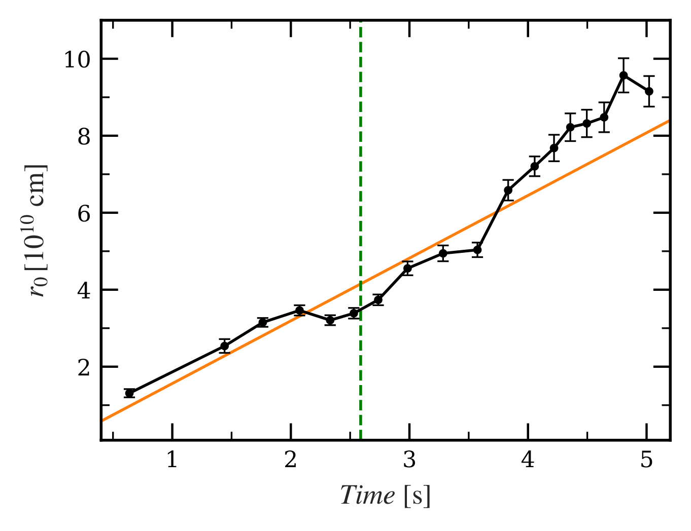 Fig04 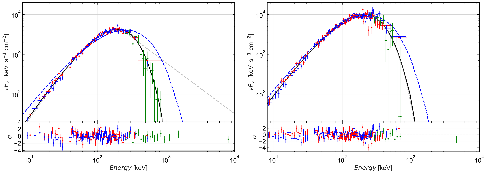 Fig07 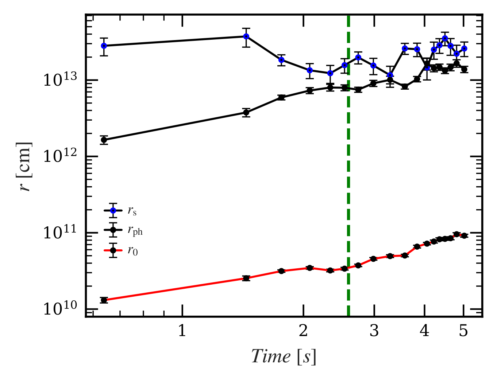 Fig03 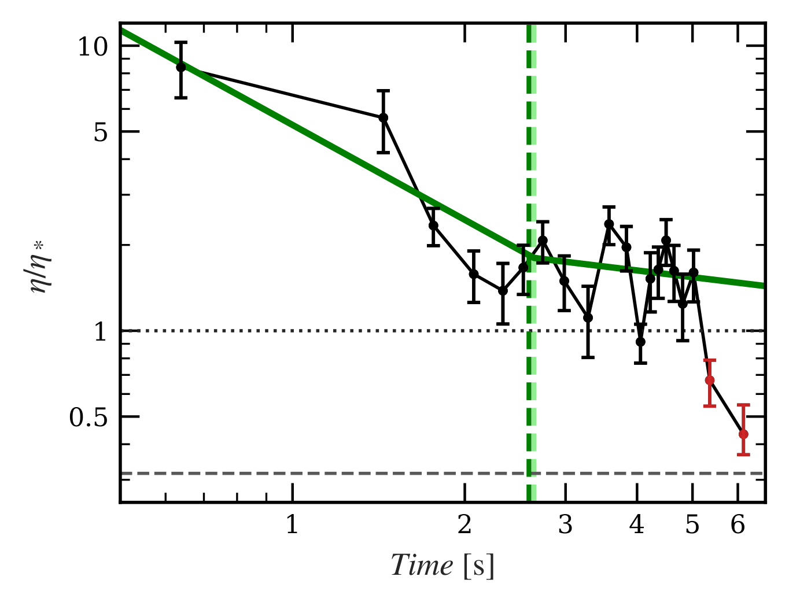 Fig02 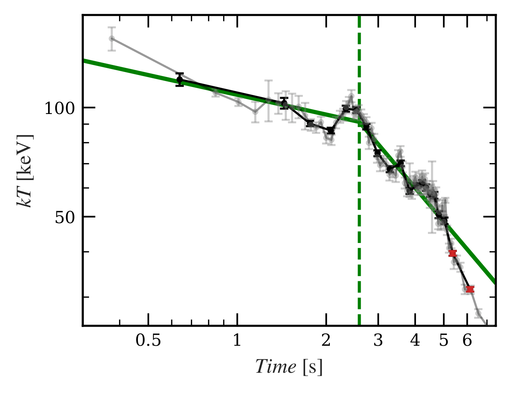 Fig01 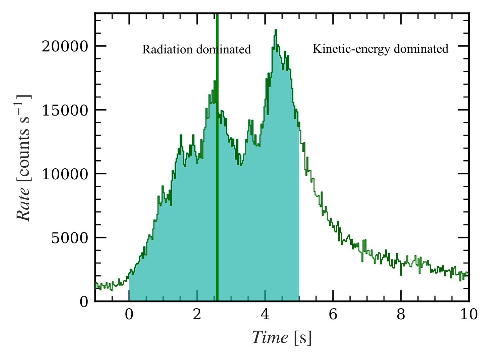 这篇工作属于 GRB 光球辐射、prompt 谱宽、喷流准直和前身星周爆介质研究的交叉。应把它与三类文献放在一起读：第一类是经典火球与光球模型，关键词可检索 “GRB photospheric emission fireball acceleration phase Pe'er Ryde”；第二类是窄谱 GRB 和时间分辨黑体成分，关键词为 “narrowest GRB spectra Fermi GBM photosphere spectral width”；第三类是喷流在恒星包层和风状介质中的传播、准直激波与 cocoon，关键词为 “GRB jet collimation recollimation shock stellar envelope wind medium”。 同一事件方面，GRB 220426A 应检索 Fermi/GBM burst catalog、GCN Circulars、以及可能的 Konus-Wind、Swift/BAT 或其他高能卫星报告，看是否有红移、定位、多波段余辉或同源超新星限制。若没有可靠红移或环境观测，本文的物理解释会更依赖模型假设。相似观测方面，应对比其他有强热成分的 GRB，例如早期文献中讨论的光球主导暴，以及 Fermi 时代对 Band 谱低能斜率和谱宽分布的系统研究。相反观点则主要来自同步辐射或磁化喷流模型，它们可能在不需要纯热光球的情况下解释部分窄谱或峰值演化。 同一事件 / 同类源线索： 相似工作： （未提供） 基础理论 / 方法工作： 相反观点 / 张力线索： （未提供） 中文题目：用喷流微型潮汐瓦解事件解释 GRB250702B 的 X 射线前兆、超长瞬时辐射和周级衰减 做了什么：这篇文章试图把 GRB250702B 的三个异常阶段放进同一个物理图像：约提前一天的软 X 射线前兆、长达七小时的 \(\gamma\) 射线瞬时辐射，以及随后持续数周的 X 射线尾迹。作者提出它不是普通大质量恒星塌缩型长暴，而是一个由恒星级快速自旋黑洞瓦解类太阳恒星形成的“微型潮汐瓦解事件”，吸积盘通过 Blandford-Znajek 机制发射相对论性喷流。文章结合三维流体模拟和喷流稳定性解析判据，说明瓦解碎片在约一天内能形成带低密度极向漏斗的包层，使 \(L_{\rm jet}\gtrsim10^{47}\,{\rm erg\,s^{-1}}\) 的喷流稳定穿出；窄束喷流解释七小时 prompt，早期流束供给吸积解释 X 射线前兆，盘风质量损失和喷流张角增大解释周级 X 射线陡降。 为什么重要：GRB250702B 的持续时间、前兆和长尾很难由标准长暴中心引擎同时解释。若微型潮汐瓦解事件成立，它把超长 GRB 的一部分样本从“极端塌缩星”扩展到致密天体动力学和瞬态潮汐瓦解物理，直接连接了恒星级黑洞、恒星瓦解、相对论喷流和高能瞬变观测。 理论 / 观测 / 仪器方法价值：理论价值在于给出一个从瓦解动力学到喷流稳定、再到光变时间尺度的闭合框架；观测价值在于提出可检验的多阶段判据，例如软 X 射线前兆、小时到天尺度 prompt、窄束高 \(L_{\gamma,{\rm iso}}\)、以及由 \(L_{\rm jet}\) 衰减和 \(\theta_{\rm b}\) 增大共同造成的 X 射线尾迹形状；方法价值在于把三维 AREPO 流体模拟结果压缩成可用于喷流穿出和 kink 稳定性判断的密度剖面。 为什么应该关注：如果你关心 GRB 中心引擎、TDE 喷流、致密星团动力学或多信使瞬变分类，这篇文章值得看，因为它把一个具体命名事件 GRB250702B 作为压力测试：一个模型必须同时解释前兆、七小时 \(\gamma\) 射线活动和周级尾迹，而不是只拟合其中一段光变。它也提醒观测者，超长 GRB 的持续时间未必只是在 collapsar 框架里调参，可能对应完全不同的供给时间尺度和环境几何。 科学问题：GRB250702B 的主要难点不是“很亮”或“很长”中的某一个，而是三个阶段的组合。软 X 射线前兆出现在主暴约一天前，随后有约七小时的 prompt \(\gamma\) 射线辐射，再之后 X 射线以周尺度衰减。标准长 GRB 的 collapsar 图像能自然给出相对论喷流和高能 prompt，但中心引擎持续七小时已经偏长；若再要求提前一天的前兆和持续数周的尾迹，单一塌缩星包层穿出、fallback 或磁星自旋下降模型都会遇到时间尺度、能量注入和几何演化的组合约束。 作者怎么做：文章提出“喷流微型潮汐瓦解事件”模型，即一个质量约 \(10\,M_\odot\) 的恒星级黑洞潮汐瓦解一颗约 \(1\,M_\odot\) 的恒星。这里的“微型”是相对超大质量黑洞 TDE 而言：黑洞质量小很多，因此潮汐半径、轨道周期、回落率和盘黏滞时间都落在小时到天的范围，恰好接近 ULGRB 的持续时间。作者用三维 AREPO 流体模拟追踪恒星被瓦解后的碎片演化，得到约一天后形成的准稳态包层和极向低密度漏斗；再把该密度结构代入解析喷流稳定性框架，判断 Blandford-Znajek 喷流能否穿出并避免 kink 不稳定。 关键结果：模拟显示，碎片不是简单地立刻形成薄盘，而是在黑洞周围建立一个近似 \(\rho\propto r^{-2}\) 的包层，并在旋转轴附近形成半张角约 \(15^\circ\) 的低密度漏斗。这个 \(r^{-2}\) 漏斗很关键：它使喷流在传播过程中不会被外部压力过度准直到 kink 不稳定阈值以上。作者估计当 \(L_{\rm jet}\gtrsim10^{47}\,{\rm erg\,s^{-1}}\) 时，喷流可以稳定传播并 breakout。若黑洞自旋较高，例如 \(a_\bullet\sim0.9\)，Blandford-Znajek 机制可提供所需功率；若辐射束角很窄，\(\theta_{\rm b}\lesssim1^\circ\)，则可以把真实喷流功率转换成观测到的 \(L_{\gamma,{\rm iso}}\sim10^{51}\,{\rm erg\,s^{-1}}\)。 局限和下一步：文章的核心链条由流体模拟加解析喷流判据构成，而不是完整的广义相对论磁流体辐射转移模拟。因此，喷流真实发射、磁通积累、非热粒子加速、\(\gamma\) 射线辐射效率和视线角效应仍需要后续工作验证。事件本身的观测约束也会随红移、宿主星系定位、光学/射电余辉和晚期 X 射线监测而变化。下一步最重要的是寻找同类事件的统计样本：是否都有提前约天尺度的软 X 射线活动？是否都显示极窄束角的迹象？是否存在与密集星团或年轻星族环境相关的宿主偏好？ 本文最重要的证据链不是单一拟合，而是把 GRB250702B 的多阶段时间结构映射到微型 TDE 的不同物理阶段。样本选择上，文章聚焦一个命名事件 GRB250702B，并把观测事实抽象成三个需要同时满足的量：前兆延迟约 \(1\) 天、prompt 持续约 \(7\) 小时、尾迹持续约数周。这样的单事件建模不能给出群体统计显著性，但可以作为中心引擎模型的强约束案例，因为任意成功模型必须同时通过三个时间尺度和一个高各向同性等效光度约束。 在动力学部分，作者用三维 AREPO 模拟 \(1\,M_\odot\) 恒星被 \(10\,M_\odot\) 黑洞瓦解。读者应关注的不是网格图像本身，而是模拟输出的角向平均密度剖面、极向漏斗开角和随时间趋于准稳态的程度。论文声称约 \(1\) 天内形成 \(\rho\propto r^{-2}\) 的包层，且极区有半张角约 \(15^\circ\) 的低密度通道。这个结果支撑了后续喷流传播判断：若没有漏斗，喷流会在致密碎片中被阻滞或过度准直；若密度斜率不同，稳定性阈值也会改变。 统计或模型比较层面，文章更像物理可行性论证，而不是多模型贝叶斯证据比较。作者把模拟剖面输入解析 jet-stability framework，比较喷流功率 \(L_{\rm jet}\)、外部密度 \(\rho(r)\)、漏斗几何和 kink 不稳定阈值之间的关系，得到 \(L_{\rm jet}\gtrsim10^{47}\,{\rm erg\,s^{-1}}\) 时可稳定穿出的结论。显著性不是以 \(p\)-value 给出，而是以物理参数空间是否覆盖观测所需 \(L_{\gamma,{\rm iso}}\) 和持续时间来判断。 支撑结论的图表应包括：瓦解碎片的密度切片或三维结构图、不同时间的径向密度剖面、漏斗角向密度分布、喷流稳定性参数随半径或功率的变化、以及与 GRB250702B 光变三阶段对应的示意或拟合曲线。尤其要检查 \(\rho\propto r^{-2}\) 是否只在有限半径范围成立，漏斗半张角是否随时间大幅波动，以及 \(L_{\rm jet}\) 阈值是否对密度归一化和黑洞自旋高度敏感。 主要系统误差来自几类近似。第一，AREPO 流体模拟若没有完整磁场和辐射反馈，可能低估或高估盘风和漏斗清空效率。第二，Blandford-Znajek 功率依赖黑洞附近磁通，磁通如何从碎片盘积累到黑洞视界是关键不确定性。第三，观测到的 \(L_{\gamma,{\rm iso}}\) 需要极小束角 \(\theta_{\rm b}\lesssim1^\circ\)，这会引入强烈选择效应：只有非常接近喷流轴的观测者才能看到类似事件。第四，尾迹的 \(L_{{\rm X},{\rm iso}}\propto t^{-4}\) 早期陡降依赖 \(L_{\rm jet}\propto t^{-2}\) 和 \(\theta_{\rm b}\propto t\) 同时成立，需用更长时基 X 射线监测检验是否出现斜率转折。 研究对象 GRB250702B 属于超长 GRB 候选，但它比常见长 GRB 更极端：prompt \(\gamma\) 射线活动可持续数小时，且有主暴前约一天的软 X 射线前兆。传统 GRB 分类把持续时间 \(T_{90}\gtrsim2\,{\rm s}\) 的事件归为长暴，通常与大质量恒星核心塌缩有关；但超长 GRB 的 \(T_{90}\) 可达 \(10^4\) 秒甚至更长，中心引擎供给时间、喷流穿越环境和辐射机制都变得更难区分。 历史上，超长 GRB 的解释包括蓝超巨星 collapsar、低金属丰度大半径恒星塌缩、磁星长期自旋下降、白矮星被中等质量黑洞潮汐瓦解、以及更宽泛的 TDE 型喷流。每种模型都有自然时间尺度，也有问题：蓝超巨星给出长穿越和 fallback 时间，但要产生极高 \(\gamma\) 射线效率和前兆并不容易；磁星模型容易给出平滑能量注入，但七小时强 prompt 与后续多段衰减的几何解释较弱；超大质量黑洞 TDE 的时间尺度又通常偏长。 微型 TDE 的吸引力在于质量尺度。对 \(10\,M_\odot\) 级黑洞，潮汐半径与恒星半径相近，回落和盘黏滞时间可落在小时到天，而不是超大质量黑洞 TDE 的月到年。若黑洞在致密星团、三体相互作用或双星演化中遇到类太阳恒星，恒星被瓦解后形成厚盘和包层，快速自旋黑洞可通过磁场抽取旋转能量发射喷流。这使微型 TDE 成为连接 GRB 和 TDE 的中间尺度实验室。 现在值得重新看这个问题，是因为高能瞬变监测的时间覆盖和触发策略正在暴露越来越多“不干净”的 GRB：前兆、长静默间隔、复燃、长尾和跨波段异常都越来越难被简单 \(T_{90}\) 分类吸收。GRB250702B 的三阶段结构迫使模型从单一 prompt 拟合转向全生命周期解释。一个常见误区是把超长持续时间直接等同于大半径 progenitor；事实上，观测持续时间也可能由吸积黏滞时间、喷流 breakout 时间、喷流稳定性、束角演化和探测阈值共同决定。 另一个常见误区是把 TDE 只理解为超大质量黑洞撕裂恒星的低温紫外/软 X 射线事件。潮汐瓦解本质上是 Roche 势和自引力竞争，只要黑洞质量、恒星结构和相对轨道合适，恒星级黑洞同样可以发生瓦解；区别在于尺度、温度、吸积率和可观测持续时间。本文正是利用这种尺度缩放，把微型 TDE 推向 GRB 中心引擎问题。 基础物理图像从潮汐瓦解开始：当恒星经过黑洞附近时，黑洞潮汐场在恒星两侧产生差分引力；如果潮汐加速度超过恒星自引力，恒星会被拉伸并撕裂。瓦解后的物质获得一系列轨道能量，一部分束缚并回落，一部分非束缚逃逸。束缚碎片的回落率决定中心引擎可供给的质量流，随后圆化、激波、黏滞和磁场输运决定吸积盘真正把质量送到黑洞的时间尺度。 对于恒星级黑洞微型 TDE，关键是尺度缩短。潮汐半径 \(r_{\rm t}\) 只比恒星半径大若干倍，最束缚碎片的轨道周期和盘黏滞时间可进入小时到天范围。若黑洞自旋高且吸积流能把足够磁通带到视界，Blandford-Znajek 机制可从黑洞旋转能中抽取 Poynting 通量，形成相对论喷流。这里 \(a_\bullet\) 控制可抽取能量和视界角速度，磁通 \(\Phi_\bullet\) 控制喷流功率。 喷流能否产生可见 GRB，不只取决于中心功率。它还必须穿过瓦解碎片形成的包层和盘风。外部介质一方面提供准直压力，使喷流变窄、各向同性等效光度变高；另一方面也可能让喷流头变慢、耗散过强，甚至触发 kink 不稳定而破坏相干喷流。本文的核心假设是模拟得到的极向低密度漏斗足够宽且密度近似 \(\rho\propto r^{-2}\)，这种结构允许喷流稳定传播。 观测上，\(L_{\gamma,{\rm iso}}\) 是沿视线推断的各向同性等效 \(\gamma\) 射线光度，不等于真实喷流功率。若束角 \(\theta_{\rm b}\) 很小，真实能量可比 \(E_{\gamma,{\rm iso}}\) 小约 \(\theta_{\rm b}^2/2\) 的因子。本文需要 \(\theta_{\rm b}\lesssim1^\circ\) 来把 \(L_{\rm jet}\) 与 \(L_{\gamma,{\rm iso}}\sim10^{51}\,{\rm erg\,s^{-1}}\) 连接起来，这意味着强选择效应和明显的视角退化。 常见退化包括：真实喷流功率 \(L_{\rm jet}\)、辐射效率 \(\epsilon_\gamma\)、束角 \(\theta_{\rm b}\) 和视线角 \(\theta_{\rm obs}\) 可以产生相似的 \(L_{\gamma,{\rm iso}}\)；尾迹斜率也可以由吸积率衰减、喷流效率变化、束角变化或余辉外激波共同塑造。本文的独特之处是把 \(L_{\rm jet}\propto t^{-2}\) 与 \(\theta_{\rm b}\propto t\) 组合起来，给出早期 \(L_{{\rm X},{\rm iso}}\propto t^{-4}\) 的陡降预测。 第一步是潮汐瓦解条件。令黑洞质量为 \(M_\bullet\)，恒星质量和半径为 \(M_*\)、\(R_*\)。潮汐半径由黑洞差分引力与恒星自引力相等给出： 该式说明微型 TDE 的长度尺度随 \(M_\bullet^{1/3}\) 缩放；对 \(M_\bullet\sim10\,M_\odot\) 和类太阳恒星，\(r_{\rm t}\) 接近恒星尺度，因此回落和圆化时间比超大质量黑洞 TDE 短得多。 第二步是回落时间。最束缚碎片的能量展宽可估计为 其轨道半长轴为 \(a_{\rm mb}=G M_\bullet/(2\Delta\epsilon)\)，于是最早回落时间为 这里 \(G\) 是引力常数。该时间给出从瓦解到强吸积开始的自然延迟，可与 GRB250702B 前兆和主暴之间的约天尺度间隔比较。 第三步是经典回落率标度。若碎片质量在能量空间近似平坦，即 \({\rm d}M/{\rm d}\epsilon\approx {\rm const}\)，则晚期回落率为 本文的尾迹解释不简单采用该 \(t^{-5/3}\) 作为观测光变，而是强调圆化、盘风和喷流束角演化会改变从 \(\dot M\) 到 \(L_{{\rm X},{\rm iso}}\) 的映射。 第四步是盘黏滞时间。厚盘中吸积时间可写成 其中 \(\alpha_{\rm v}\) 是 Shakura-Sunyaev 黏滞参数，\(H/R\) 是盘厚度比，\(R\) 是特征圆化半径。微型 TDE 若形成厚盘，\(t_{\rm visc}\) 可以自然达到小时到天，接近 ULGRB prompt 持续时间。 第五步是 Blandford-Znajek 喷流功率的尺度关系。对自旋黑洞，喷流功率可近似写为 其中 \(\Phi_\bullet\) 是穿过黑洞视界的磁通，\(\Omega_{\rm H}\) 是视界角速度，\(r_{\rm H}\) 是视界半径，\(c\) 是光速，\(\kappa\) 是与场几何有关的无量纲系数。该式解释为什么本文偏好快速自旋 \(a_\bullet\sim0.9\)：喷流功率对 \(\Omega_{\rm H}^2\) 敏感。 第六步是外部漏斗密度。模拟给出的极向通道可概括为 其中 \(\rho_0\) 是参考半径 \(r_0\) 处的密度。这个斜率很重要，因为喷流头前进速度、外部压力和准直强度都取决于 \(\rho(r)\)。若密度下降太慢，喷流可能被困；若下降太快，准直和辐射效率又会改变。 第七步是喷流头传播的无量纲亮度参数。常用估计为 其中 \(\Sigma_j\) 是喷流横截面积。\(\tilde L\gg1\) 时喷流头相对论性前进，\(\tilde L\ll1\) 时喷流头较慢并容易把能量沉积为 cocoon。本文的 \(L_{\rm jet}\gtrsim10^{47}\,{\rm erg\,s^{-1}}\) 阈值可理解为使 \(\tilde L\) 和稳定性条件同时进入可穿出区域。 第八步是从真实喷流到各向同性等效光度。若辐射效率为 \(\epsilon_\gamma\)，束角为 \(\theta_{\rm b}\ll1\)，则 这说明即便真实 \(L_{\rm jet}\) 只有 \(10^{47}\) 到 \(10^{48}\,{\rm erg\,s^{-1}}\)，当 \(\theta_{\rm b}\lesssim1^\circ\) 时也可能对应 \(L_{\gamma,{\rm iso}}\sim10^{51}\,{\rm erg\,s^{-1}}\)。 第九步是尾迹衰减。本文采用盘风质量损失导致的喷流功率下降和喷流张角增大： 代入各向同性等效关系得到 该推导展示了为什么观测到的 X 射线尾迹可以比内禀喷流功率衰减更陡：几何束角演化会额外贡献 \(\theta_{\rm b}^{-2}\) 因子。 本文的“拟合”更接近物理模型拼接和参数可行性检验，而非对光变做高维 MCMC。核心拟合量包括前兆到主暴的延迟、prompt 持续时间、\(L_{\gamma,{\rm iso}}\)、X 射线尾迹斜率和持续时间。模型参数包括 \(M_\bullet\)、\(M_*\)、黑洞自旋 \(a_\bullet\)、喷流功率 \(L_{\rm jet}\)、束角 \(\theta_{\rm b}\)、辐射效率 \(\epsilon_\gamma\)、漏斗密度归一化 \(\rho_0\)、以及盘风控制的晚期衰减指数。 若把这类模型严格拟合到数据，似然通常应由多波段光变点构成。对 X 射线或 \(\gamma\) 射线通量 \(F_i\)，可假设高计数近似下的高斯误差，或在低计数时使用 Poisson/Cash 统计。模型需要从内禀 \(L(t)\) 经红移、\(K\)-校正、吸收和仪器响应变成预测计数率。残差应按时间分段检查：前兆段是否过早或过亮，prompt 段是否能维持七小时，尾迹段是否真的需要 \(t^{-4}\) 而非余辉标准衰减。 参数退化很强。\(L_{\gamma,{\rm iso}}\) 只能约束 \(\epsilon_\gamma L_{\rm jet}/\theta_{\rm b}^2\)，因此较低喷流功率可由更窄束角补偿；\(a_\bullet\) 与 \(\Phi_\bullet\) 在 Blandford-Znajek 功率中也退化，快速自旋不是唯一提高 \(L_{\rm BZ}\) 的方式。尾迹斜率中，\(L_{\rm jet}\) 的时间指数和 \(\theta_{\rm b}\) 的时间指数也退化：若 \(L_{\rm jet}\propto t^{-p}\)、\(\theta_{\rm b}\propto t^q\)，则 \(L_{{\rm X},{\rm iso}}\propto t^{-(p+2q)}\)。仅凭单波段光变很难唯一分解 \(p\) 和 \(q\)。 系统误差主要来自三个层面。第一是动力学模拟：初始轨道穿透因子、恒星结构、黑洞自旋对轨道的相对方向、磁场和辐射反馈都会改变碎片圆化和漏斗形成。第二是喷流传播模型：解析 kink 判据通常假设轴对称或准稳态背景，而真实碎片流可能湍动、偏心且非稳态。第三是观测解释：X 射线尾迹可能混有外激波余辉、高纬辐射、中心引擎晚期活动和宿主吸收变化。 实际应用上，这个框架可用于筛选未来 ULGRB：先用触发前后 X 射线监测寻找天尺度前兆，再用 prompt 持续时间和谱演化区分 collapsar 穿出时间与长期吸积，最后用晚期 X 射线和射电余辉约束束角和真实能量。如果某事件需要极窄 \(\theta_{\rm b}\) 才能成立，就必须同时检查是否存在喷流 break、偏振、射电 calorimetry 或孤儿余辉率等独立几何证据。 观测动机和事件现象：读者应先确认论文如何定义 GRB250702B 的三阶段结构，即约一天前的软 X 射线前兆、约七小时 prompt、以及周级 X 射线尾迹。这里要看作者采用哪些观测量作为硬约束，哪些只是定性特征。 微型 TDE 引擎设定：这一部分解释为什么选择 \(1\,M_\odot\) 恒星和 \(10\,M_\odot\) 黑洞，以及潮汐瓦解、回落和黏滞时间如何落在 ULGRB 范围。阅读时应注意该参数组合是否唯一，还是代表一族可行解。 三维 AREPO 流体模拟：重点看初始条件、分辨率、是否包含自引力、黑洞势、冷却或磁场，以及模拟到约一天时得到的密度结构。最关键输出是 \(\rho\propto r^{-2}\) 包层和半张角约 \(15^\circ\) 的极向低密度漏斗。 喷流稳定性和 breakout 判据：这是论文把模拟与 GRB 连接的核心段落。读者应跟踪 \(L_{\rm jet}\)、漏斗密度、喷流准直和 kink 阈值之间的逻辑，确认 \(L_{\rm jet}\gtrsim10^{47}\,{\rm erg\,s^{-1}}\) 的阈值如何得到。 多阶段光变解释和讨论：最后应看作者怎样分别解释 X 射线前兆、prompt 和周级尾迹。尤其要检查 \(\theta_{\rm b}\lesssim1^\circ\)、\(a_\bullet\sim0.9\)、\(L_{\rm jet}\propto t^{-2}\) 和 \(\theta_{\rm b}\propto t\) 是否是必要条件，以及这些条件是否有独立观测检验。 事件多波段光变或示意时间线：看前兆、prompt 和尾迹的时间间隔是否清楚标出，尤其是前兆到主暴的约 \(1\) 天延迟和 prompt 的约 \(7\) 小时持续时间。 AREPO 模拟密度切片：看瓦解碎片是否形成近似轴向漏斗，漏斗是否连续贯通外层，是否存在会阻塞喷流的高密度团块。 径向密度剖面图：重点检查极向区域的 \(\rho\propto r^{-2}\) 是否在足够半径范围成立，曲线是否有大幅时间演化，误差或角向散布是否显示非稳态。 角向密度或漏斗开角诊断：看半张角约 \(15^\circ\) 是如何定义的，是密度阈值、压力阈值还是质量通量阈值；注意不同半径处漏斗角是否一致。 喷流稳定性参数图：看 \(L_{\rm jet}\) 不同取值下是否跨过 kink 不稳定阈值，以及 \(10^{47}\,{\rm erg\,s^{-1}}\) 的临界值是否对密度归一化敏感。 光变模型对比图：看 \(L_{{\rm X},{\rm iso}}\propto t^{-4}\) 是否只是早期尾迹斜率，后期是否预测变平；注意是否与标准余辉模型有可区分残差。 参数空间图或表：若有，应检查 \(a_\bullet\)、\(\theta_{\rm b}\)、\(L_{\rm jet}\) 和 \(\epsilon_\gamma\) 的允许区域，特别是是否需要极端组合才可解释观测。 图 1：通常应是 GRB250702B 的时间线或多波段光变。横轴应为相对触发时间或观测时间，纵轴为通量、计数率或各向同性等效光度。读图时先确认三段现象是否来自同一能段还是跨仪器拼接；前兆点的显著性、背景估计和时间窗口最关键。陷阱是把不同能段的通量直接连成同一物理光变，而未考虑谱演化和吸收。 图 2：若为三维流体模拟密度图，坐标轴通常为空间尺度，颜色表示 \(\log\rho\)。应看黑洞附近是否形成厚盘或包层，极向是否有低密度通道，以及通道是否被非轴对称碎片扰动。模型线若标出漏斗边界，要检查该边界是否由固定密度阈值定义。陷阱是二维切片可能夸大漏斗连续性，需与三维角向平均图一起看。 图 3：若为径向密度剖面，横轴为半径 \(r\)，纵轴为密度 \(\rho\) 或角向平均 \(\langle\rho\rangle\)，常用对数坐标。关键是比较模拟曲线与 \(r^{-2}\) 参考线的斜率；若只在很窄半径段吻合，喷流稳定结论会变弱。还应看不同时间曲线是否收敛到准稳态，否则把某一时刻剖面用于七小时 prompt 可能不充分。 图 4：若为喷流稳定性或 breakout 参数空间，横轴可能为半径、喷流功率或密度归一化，纵轴为 kink 判据、喷流头速度或临界功率。数据点或色带代表模拟环境下的不同角向剖面，模型线代表稳定/不稳定分界。主要结论应是 \(L_{\rm jet}\gtrsim10^{47}\,{\rm erg\,s^{-1}}\) 的喷流能稳定穿出。陷阱是临界线通常依赖解析近似，不能视为硬边界。 图 5：若为 GRB250702B 光变解释图，横轴为时间，纵轴为 \(L_{{\rm X},{\rm iso}}\) 或 \(L_{\gamma,{\rm iso}}\)。模型线可能分为前兆吸积、prompt 喷流和晚期尾迹。读者应看 \(t^{-4}\) 线是否真正穿过 X 射线数据点，以及是否需要在某个时间人为接续。陷阱是各向同性等效光度受 \(\theta_{\rm b}\) 强烈影响，图上拟合好并不唯一证明内禀功率按同样斜率下降。 图 6：若有参数汇总或示意图，应关注 \(a_\bullet\sim0.9\)、\(\theta_{\rm b}\lesssim1^\circ\)、漏斗半张角约 \(15^\circ\) 与观测约束之间的对应关系。图中若显示可行参数区域，需看是否有大量区域被排除，还是只展示一个代表性解。陷阱是示意图容易给人“机制已被证明”的印象，而实际上仍是物理可行性模型。 Fig05 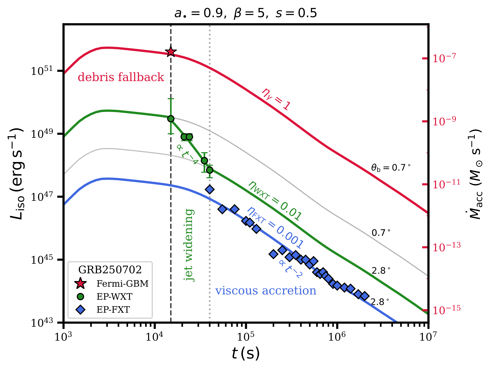 Fig04 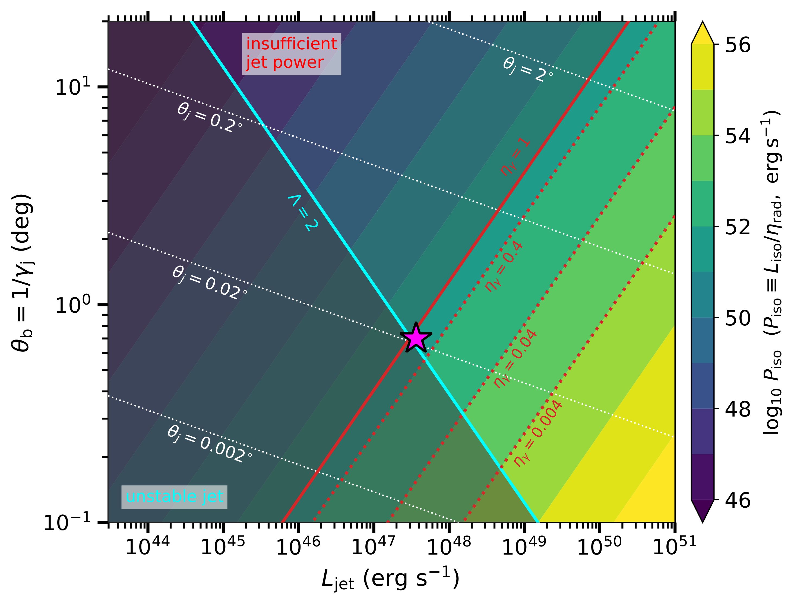 Fig01 Fig02 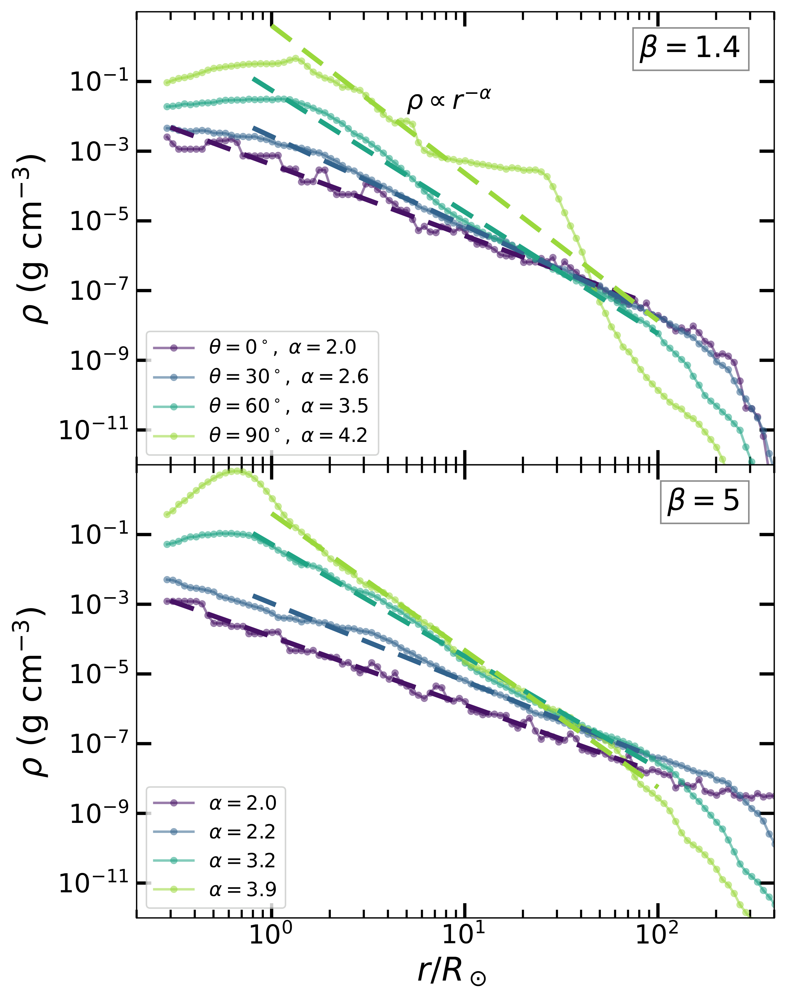 Fig03 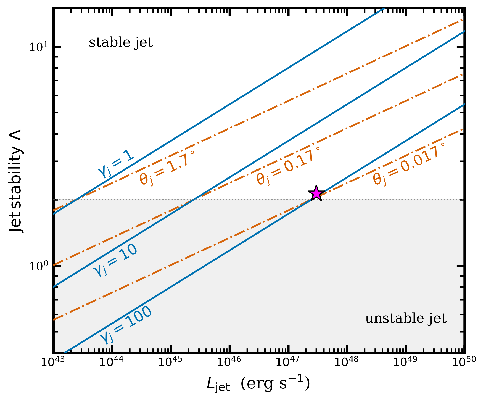 Fig06 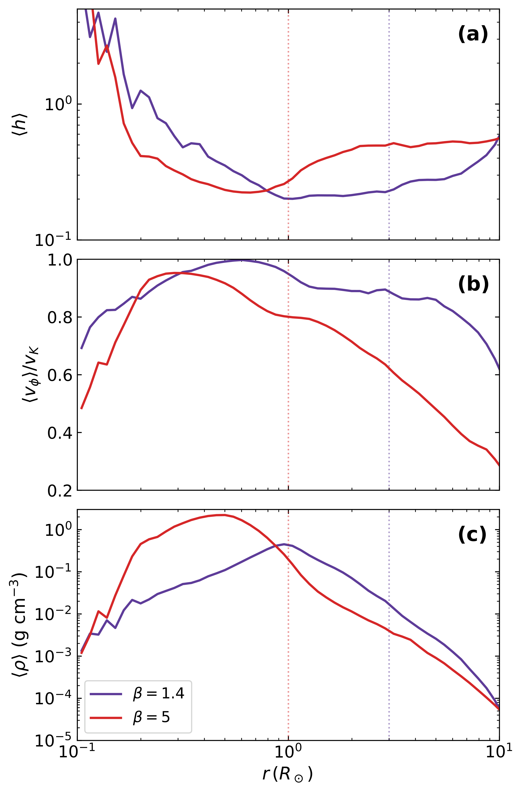 这篇工作与两类文献直接相连。第一类是超长 GRB 的 progenitor 研究，包括蓝超巨星 collapsar、磁星中心引擎和 TDE 型解释。可检索关键词包括“ultra-long gamma-ray burst progenitor”、“blue supergiant collapsar ULGRB”、“GRB 111209A engine”、“tidal disruption ultra-long GRB”。这些工作提供了对照：如果某个模型只能解释长 prompt 而不能解释前兆和周级尾迹，那么在 GRB250702B 上会处于劣势。 第二类是喷流 TDE 和 Blandford-Znajek 喷流传播文献，尤其是 Swift J1644+57 这类 jetted TDE、黑洞磁通积累、磁控喷流 kink 稳定性以及 cocoon breakout 研究。可检索关键词包括“jetted tidal disruption event Blandford Znajek”、“micro tidal disruption event stellar mass black hole”、“jet kink instability collimated jet”、“AREPO tidal disruption simulation”。这些文献能帮助读者判断本文的 \(L_{\rm jet}\)、\(a_\bullet\)、\(\theta_{\rm b}\) 和漏斗密度是否合理。 同一事件方面，目前本文给出的公开上下文是 GRB250702B 这个命名事件本身；若需要同一事件观测论文，应检索“GRB250702B X-ray precursor”、“GRB250702B ultra-long prompt emission”、“GRB250702B afterglow”。同类源方面，GRB 111209A、GRB 101225A、GRB 130925A 和 Swift J1644+57 是最值得对比的历史原型或近邻类比，但它们不一定与 GRB250702B 同源。 同一事件 / 同类源线索： 相似工作： 基础理论 / 方法工作： 相反观点 / 张力线索： （未提供） 中文题目：用光学时间尺度重新审视 Fermi-LAT 新星的 GeV 伽马射线发射 做了什么：这篇文章把 Fermi-LAT 已探测到的伽马射线新星放在一个“由光学爆发时间尺度引导”的框架下重新分析：作者改变伽马射线积分时间窗，寻找使每个新星探测显著性最高的时间尺度 \(t_{\gamma}\)，再把它同光学衰减时间 \(t_3\) 等爆发参数比较。核心结论是，样本整体上最优的 Fermi-LAT 时间窗倾向于接近光学 \(V\) 波段下降 \(3\) 等所需的 \(t_3\)，虽然源与源之间离散很大；他们还把此前只被认为边缘探测的 V679 Car 提升为 \(>5\sigma\) 伽马射线新星。文章的重要性在于，它把“光学光度中有一部分来自激波功率再处理”这一图像转化为一个可操作的 LAT 分析策略，而不只是事后比较光变曲线。 为什么重要：GeV 新星的关键问题不是“有没有伽马射线”，而是伽马射线、光学辐射和喷发动力学是否由同一批非相对论激波控制。若 \(t_3\) 这类光学时间尺度确实接近最优伽马射线积分时间窗 \(t_{\gamma}\)，说明光学衰减速度不仅是传统新星分类量，也可能携带粒子加速和激波耗散持续时间的信息。这会影响未来在低计数 LAT 数据中如何设定搜索窗口、如何评价边缘源，以及如何把光学巡天的新星快速纳入高能触发分析。 理论 / 观测 / 仪器方法价值：对观测方法的价值在于，论文提出并测试了一种比固定 \(15\) 天或 \(30\) 天积分更有物理动机的 Fermi-LAT 时间窗选择：用每颗新星自己的光学演化来指导伽马射线似然分析。对理论的价值在于，它给碰撞无关非相对论激波模型一个群体层面的检验：若伽马射线明亮期与光学下降期相关，则支持光学辐射中存在再处理激波功率的成分。对样本建设的价值在于，V679 Car 的 \(>5\sigma\) 报告提醒我们，若时间窗选得不合适，低通量新星可能被系统性低估。 为什么应该关注：如果你关心新星如何把白矮星表面热核爆发能量转化为非热粒子，这篇文章值得看，因为它把多波段光变相关性变成了实际的统计检验。如果你做 Fermi-LAT 弱源分析，它也值得看，因为它讨论了时间窗选择如何直接改变显著性和源分类。如果你做光学巡天或瞬变跟踪，本文说明 \(t_3\) 不是只服务于传统快慢新星分类的旧指标，而可能是高能发射搜索的先验信息。 科学问题：Fermi-LAT 在 \(2010\) 年发现新星 V407 Cyg 的 GeV 发射后，新星不再只是热核爆发和光学瞬变问题，也成为粒子加速问题。主流解释是喷发物内部或喷发物与外部物质相互作用形成非相对论激波，激波中加速的质子或电子产生 \(\gamma\) 射线，同时一部分激波能量被热化并在光学波段再辐射。若这个图像正确，伽马射线亮相持续时间不应完全任意，而应与光学爆发的时间尺度存在联系。本文问的是：在 Fermi-LAT 数据中，哪一个积分时间窗最能显著探测新星？这个最优时间窗 \(t_{\gamma}\) 是否同光学 \(t_3\) 或其他光学指标相关？ 作者怎么做：作者选取 Fermi-LAT 已探测或候选的伽马射线新星样本，对每个源用多个时间 bin 或积分窗口重新做 LAT 似然分析，记录使检验统计量或等价显著性最大的时间尺度 \(t_{\gamma}\)。随后他们把 \(t_{\gamma}\) 与光学爆发资料比较，尤其关注 \(V\) 波段从峰值下降 \(3\) 等所需时间 \(t_3\)。这种做法的关键不是简单把光学和伽马射线曲线画在一起，而是让光学时间尺度参与定义高能搜索的可检验假设。作者还对伽马射线和光学光变做互相关分析，以检查两者在时间上的同步、滞后或共同演化趋势。 关键结果：群体层面上，\(t_3\) 看起来是优化 Fermi-LAT 探测显著性的优选时间尺度，即许多源在接近其光学 \(t_3\) 的时间窗内获得较高的 LAT 显著性。不过这种关系不是窄而干净的标定关系，样本有明显离散，说明新星环境、喷发几何、距离、LAT 背景、光学采样和内禀冲击历史都会影响 \(t_{\gamma}\)。一个具体结果是 V679 Car 在本文分析中达到 \(>5\sigma\)，从边缘伽马射线新星候选变成更稳健的探测。这一结果特别强调了时间窗选择对低信噪比源的重要性。 局限和下一步：本文的结论仍受样本量、光学数据非均匀性和 LAT 弱源统计的限制。\(t_3\) 的测量依赖峰值覆盖和消光校正，LAT 显著性又依赖背景模型、邻近源建模和能区选择；这些因素都可能制造或冲淡相关性。下一步最有价值的是把该方法前置到实时分析中：当光学巡天给出峰值和早期下降率后，立即预测最优 LAT 搜索窗口，并在后验上检验预测是否成功。同时还需要用辐射流体和非热粒子输运模型把 \(t_3\)、冲击功率和 \(\gamma\) 射线效率联系得更定量。 本文最重要的证据链从样本定义开始：作者不是盲扫所有光学新星，而是聚焦于 Fermi-LAT 已探测或已被讨论为候选的伽马射线新星群体。对这类源，LAT 数据通常处于低计数、强背景、时间有限的 regime，固定时间窗可能把真实信号稀释掉。因此作者对每个新星在不同时间 bin 或积分长度下计算探测显著性，定义使显著性最大化的 \(t_{\gamma}\)。这一步决定了后续相关分析的物理含义：\(t_{\gamma}\) 不是伽马射线发射“真实结束时间”的直接观测量，而是给定分析设定下的最优统计时间尺度。 统计上，Fermi-LAT 弱源分析通常使用泊松似然和检验统计量 \(TS\)，近似显著性常写为 \(\sqrt{TS}\)，前提是适用渐近条件且自由度处理合理。本文报告 V679 Car 达到 \(>5\sigma\)，意味着在他们的源模型、背景模型和时间窗选择下，相对于无源假设的似然增益足够大。读者应特别检查该结果是否由单一时间窗选择驱动，以及作者是否处理了多时间窗扫描带来的 trials factor 或至少讨论了其影响。 群体相关性的核心图表应是 \(t_{\gamma}\) 与 \(t_3\) 或归一化比值 \(t_{\gamma}/t_3\) 的分布。若大多数源的最优时间窗靠近 \(t_3\)，这支持“光学衰减时间约束伽马射线发射持续时间”的解释；若离散很大，则说明 \(t_3\) 只能作为先验，而不是确定性预测。作者的说法是 \(t_3\) 是 favored analysis bin，但存在 significant spread，这个措辞本身已经提示结果应被理解为统计倾向而非严格定律。 互相关分析提供了第二条证据链：如果光学和伽马射线来自同一冲击能量库，二者光变应在某些源中同步或具有可解释的滞后。读者应关注互相关峰值的位置、宽度和误差，而不只是相关系数最大值。由于光学数据采样通常远好于 LAT，且 LAT 光变对 binning 极敏感，互相关峰值可能受采样窗口函数影响；稳健性检验应包括改变 bin 宽、剔除低质量光学点、改变 LAT 能区或背景模型后相关结果是否保持。 系统误差方面，主要风险来自四类：第一，光学 \(t_3\) 测量受峰值错过、尘埃消光和不同滤光片转换影响；第二，LAT 源模型中邻近源、银河弥散背景和太阳/月亮位置可能影响弱瞬变；第三，多时间窗搜索会提高偶然显著峰出现概率；第四，样本只包括 LAT 已探测或候选源，会偏向伽马射线明亮、距离较近或背景较低的新星。本文结果的实用意义正是在这些限制下提出一个更好的搜索先验，而不是宣称 \(t_3\) 已经唯一决定伽马射线发射。 经典新星是白矮星从伴星吸积富氢物质后发生热核失控的结果。传统上，新星研究主要围绕光学峰值、衰减速度、喷发物质量、化学丰度和白矮星质量展开。\(t_2\) 和 \(t_3\) 等光学下降时间尺度长期用于区分快新星和慢新星，并曾被用于最大光度—衰减率关系等经验距离估计，虽然这些经验关系的散布和适用性一直有争议。 Fermi-LAT 发现 V407 Cyg 的 GeV 发射改变了这个图景。最初人们可能以为只有嵌在红巨星风中的共生新星才会产生强激波，但随后普通经典新星也被 LAT 探测到，说明致密外部风不是必要条件。由此产生的核心问题是：激波在哪里形成？是在多速度喷发物内部追赶碰撞，还是喷发物与外部介质相互作用？非热粒子是以强子过程还是轻子过程产生 \(\gamma\) 射线？ 近年来光学巡天和高能监测使这个问题值得重新看。ASAS-SN、OGLE、ZTF 等光学数据能更好地约束峰值时间和下降速度，而 Fermi-LAT 的长期全天巡天积累则允许对弱源做更精细的时域似然分析。过去很多 LAT 新星分析使用相对固定的积分窗口，但如果发射持续时间随新星光学演化变化，固定窗口会在快新星中引入过多背景，或在慢新星中漏掉后期信号。 该领域常见误区之一是把光学亮度简单等同于热核火球的冷却光度，而忽视激波再处理可能贡献相当一部分光学辐射。另一个误区是把 LAT 显著性最大时窗看成物理发射时长的直接测量；实际上 \(t_{\gamma}\) 同仪器灵敏度、背景、源光变形状和扫描策略有关。还有一个误区是认为光学和 \(\gamma\) 射线相关就能区分强子和轻子机制；相关性主要支持共同能量源或共同动力学阶段，粒子辐射通道仍需光谱、密度和多波段约束。 基础物理图像可以从新星喷发的多速度流开始。白矮星表面热核爆发驱动外流，但外流未必是单一速度、球对称、一次性抛射。较快物质追上较慢物质，或喷发物撞上伴星风和早期较慢外流，就会形成非相对论激波。激波把有序动能转化为热能、湍流和非热粒子能量；若存在磁场放大和散射，电子与质子都可能被加速。 伽马射线产生有两类常见通道。强子模型中，加速质子与周围物质发生 \(pp\) 碰撞，产生 \(\pi^0\)，随后衰变为 GeV \(\gamma\) 射线；轻子模型中，加速电子通过逆康普顿散射或非热轫致辐射产生高能光子。二者都要求激波有足够功率和目标密度，但对密度、磁场、电子质子能量分配和光子场的依赖不同。本文并不主要区分这些微观通道，而是检验激波功率的时间尺度是否同时影响光学和 \(\gamma\) 射线。 光学 \(t_3\) 的意义是从峰值亮度下降 \(3\) 等所需时间。若一部分光学光度来自激波功率被喷发物吸收后再辐射，那么 \(t_3\) 可能追踪光学厚度下降、激波功率衰减或两者共同作用。这样，\(t_3\) 不只是经验分类量，而可作为 \(\gamma\) 射线搜索窗口的物理先验。本文的 \(t_{\gamma}\) 则是统计定义的量：在不同积分时间中，哪个时间窗给出最高 LAT 显著性。 Fermi-LAT 分析的关键是泊松计数统计。对给定时间窗、能区和空间区域，模型包括候选新星点源、银河弥散背景、各向同性背景以及附近目录源。改变时间窗会同时改变源累计计数和背景累计计数：时间窗太短，源计数不足；时间窗太长，背景增加且若源已熄灭会稀释信号。因此最优 \(t_{\gamma}\) 体现的是源光变时间尺度与背景累积之间的折中。 常见退化和系统误差包括距离与本征光度退化、喷发物密度与辐射效率退化、光学消光与真实光度退化，以及 LAT 弥散背景与弱源通量退化。对本文这样的群体研究，选择效应也很关键：只有足够近、背景较低或发射较长的新星更容易进入 LAT 样本，因此 \(t_{\gamma}\) 与 \(t_3\) 的关系可能代表“可探测新星群体”的特征，而不是所有新星的普适规律。 第一步，从非相对论激波的动能通量出发。若上游密度为 \(\rho\)，激波半径为 \(R_{\rm sh}\)，激波速度为 \(v_{\rm sh}\)，则穿过激波面的动能功率可近似写为 这里系数取决于几何和压缩结构；它说明冲击功率对速度非常敏感，因此不同速度层之间的碰撞会显著影响高能发射。 第二步，把激波功率同可观测辐射联系起来。若 \(\epsilon_{\gamma}\) 是进入 GeV 伽马射线的效率，\(\epsilon_{\rm opt}\) 是被吸收并在光学再辐射的效率，则 若 \(\epsilon_{\gamma}\) 和 \(\epsilon_{\rm opt}\) 不发生剧烈无关变化，光学与伽马射线光变自然相关。 第三步，光学下降时间 \(t_3\) 来自星等定义。\(V\) 波段星等变化 \(3\) 等对应通量比 因此 这表明 \(t_3\) 标记的是光学通量下降到峰值约 \(6.3\%\) 的时间，而不是任意经验数字。 第四步，LAT 观测到的是计数而非直接光度。对能量 \(E\)、方向 \(\Omega\) 和时间 \(t\)，模型预期计数为 其中 \(A_{\rm eff}\) 是有效面积，\(\Phi\) 是源光子通量，\(P_i\) 是点扩散函数和空间像素响应，\(B_i\) 是背景预期计数。 第五步，对每个时间窗使用泊松似然。若第 \(i\) 个 bin 的观测计数为 \(n_i\)，模型预期为 \(\mu_i\)，则 源通量、谱指数和背景归一化等参数通过最大化 \(\mathcal{L}\) 得到。 第六步，探测显著性通常用检验统计量表示： 这里 \(\hat{\theta}_{\rm src}\) 是含源模型的最佳参数，\(\theta_{\rm src}=0\) 是无源假设。渐近近似下，若只有一个非负源强参数主导，显著性常近似为 这也是理解 \(>5\sigma\) 探测声明的基本统计桥梁。 第七步，时间窗优化可以形式化为 若源光变持续时间接近 \(t_3\)，则 \(TS(\Delta t)\) 应在 \(\Delta t\sim t_3\) 附近达到较高值；若 \(\Delta t\gg t_3\)，背景累积会稀释信号。 第八步，在简单背景主导极限下，若源累计计数为 \(S(\Delta t)\)，背景计数为 \(B(\Delta t)\)，显著性近似满足 当源在某个时间后快速衰减而背景近似随时间线性增加时，继续拉长 \(\Delta t\) 会使 \(Z\) 下降，这正是用物理时间尺度选择 LAT bin 的直观原因。 第九步，光学和伽马射线互相关可写作 其中 \(\tau\) 是滞后，\(\bar{F}\) 和 \(\sigma\) 分别是均值与标准差。\(C(\tau)\) 的峰值位置用于判断两条光变是否同步或存在滞后，但其可靠性取决于采样、误差和 binning。 本文涉及的拟合首先是 Fermi-LAT 源模型拟合。每个时间窗内，作者需要拟合或固定新星点源的通量和光谱形状，同时处理银河弥散背景、各向同性背景以及邻近目录源。对弱新星来说，谱指数与通量往往退化；如果允许谱指数自由变化，低计数下可能产生不稳定结果，因此读者应注意作者采用的是固定谱形、幂律谱，还是对部分参数加了限制。 第二层是时间窗扫描。对每个源，\(TS\) 随积分长度变化，最大点定义 \(t_{\gamma}\)。这不是传统意义上对单一物理模型的参数拟合，而是一个带有模型选择色彩的优化过程。若扫描了很多时间窗，局部最大 \(TS\) 会受到 trials factor 影响；因此 \(t_{\gamma}\) 的不确定度不应只由单个似然曲线的曲率决定，还应考虑相邻时间窗高度相关以及时间窗数量的后验选择。 第三层是群体相关分析。作者把 \(t_{\gamma}\) 与 \(t_3\) 等光学参数比较，实质上是在检验 \(t_{\gamma}=a t_3^b\) 或更简单的 \(t_{\gamma}/t_3\) 是否集中于某个范围。这里的主要退化包括距离和背景对 \(t_{\gamma}\) 的影响：较远源可能只有峰值附近可见，导致 \(t_{\gamma}\) 偏短；背景较高区域需要更长积分积累显著性，导致 \(t_{\gamma}\) 偏长。光学 \(t_3\) 的测量误差也可能非高斯，尤其当峰值被漏采时。 残差诊断应关注三件事。第一，\(TS(\Delta t)\) 曲线是否有清晰峰值，还是在一段时间内平台状；平台意味着 \(t_{\gamma}\) 的物理解释较弱。第二，\(t_{\gamma}\) 相对 \(t_3\) 的离群源有哪些，它们是否有特殊环境、距离、光学分类或 LAT 背景。第三，V679 Car 的显著性是否在改变背景模型、能区、源谱形和积分起止时间后仍保持 \(>5\sigma\) 附近。 模型可能失败的场景也很明确。如果某些新星的光学主导成分主要来自包层热辐射而非激波再处理，则 \(t_3\) 未必追踪 \(\gamma\) 射线发射。若 \(\gamma\) 射线由短暂、间歇的内部碰撞产生，而光学衰减由整体光球演化控制，二者相关也会变弱。实际应用时，最合理的做法是把 \(t_3\) 当作搜索窗口先验，而不是用它排除不符合关系的真实伽马射线新星。 数据/样本部分应先读。这里要确认作者纳入了哪些 Fermi-LAT 新星、哪些是稳健探测、哪些是边缘候选，以及光学峰值时间和 \(t_3\) 来自哪些观测资料。样本定义会直接影响群体相关性，尤其是是否包含 V679 Car 这类此前边缘源。 LAT 分析方法部分是全文技术核心。读者应查看能区、ROI、事件类型、时间范围、背景模型、附近源处理和源谱模型。尤其要看作者如何在不同时间 bin 中重复似然分析，以及 \(t_{\gamma}\) 的定义是否统一。 光学参数与相关分析部分决定物理解释。这里应重点读 \(t_{\gamma}\) 与 \(t_3\) 的比较、互相关方法、相关系数或趋势检验，以及作者如何处理缺测、非均匀采样和不同光学资料之间的差异。 结果部分中 V679 Car 值得单独看。要确认 \(>5\sigma\) 是在什么时间窗、什么模型、什么能区下得到的；是否有光变或定位证据支持该信号确实来自新星而非邻近背景波动。 讨论和稳健性部分应从反面读。看作者是否承认 \(t_3\) 关系的离散性，是否讨论多重试验、LAT 背景系统误差、光学 \(t_3\) 测量不确定性，以及该方法如何用于未来实时搜索。 样本光学光变图：看每个新星的 \(V\) 波段峰值覆盖是否充分，\(t_3\) 是否由实测点约束而非外推。 LAT \(TS\) 随积分时间窗变化图：看 \(TS\) 峰是否清晰，\(t_{\gamma}\) 是否唯一，还是宽平台或多峰结构。 \(t_{\gamma}\) 与 \(t_3\) 散点图：看是否接近一比一线，离散有多大，是否由少数高权重源驱动。 \(t_{\gamma}/t_3\) 群体分布或直方图：看分布中心、宽度和离群点，判断 \(t_3\) 是强预测量还是弱先验。 光学—伽马射线互相关图：看相关峰的滞后 \(\tau\)、置信区间和采样伪影，避免只看最大相关系数。 V679 Car 的 LAT 似然或光变诊断：看 \(TS\)、通量点、上限、残差图和定位是否共同支持 \(>5\sigma\) 探测。 系统误差或稳健性表：看改变时间窗、背景模型、谱形假设后主要结论是否稳定。 若有源列表表格：检查距离、光学类别、\(t_3\)、\(t_{\gamma}\)、峰值 \(TS\) 和文献来源，判断样本是否存在明显选择偏差。 图 1：通常应是样本的新星光学光变或光学参数汇总。横轴多半为相对光学峰值的时间，纵轴为 \(V\) 波段星等或通量。读图时要注意星等轴可能反向，亮度下降表现为数值增加。关键是看 \(t_3\) 是否由密集数据点穿越 \(m_{V,\rm pk}+3\) 的位置确定；如果峰值附近没有观测点，\(t_3\) 的误差会被低估。 图 2：应重点寻找 LAT 显著性或 \(TS\) 随时间窗 \(\Delta t\) 的曲线。横轴是积分窗口长度或不同 bin，纵轴是 \(TS\) 或近似显著性 \(Z\)。模型线或点的最高处定义 \(t_{\gamma}\)。读图陷阱是把很宽的最大值平台当成精确时间尺度；如果 \(TS\) 在 \(20\) 到 \(40\) 天差别很小，\(t_{\gamma}\) 的物理意义应理解为一个范围。 图 3：核心散点图应为 \(t_{\gamma}\) 对 \(t_3\)。横轴通常是光学衰减时间 \(t_3\)，纵轴是 LAT 最优时间窗 \(t_{\gamma}\)，一比一参考线最重要。若点云沿参考线分布但散布大，说明 \(t_3\) 是有用先验；若只有少数点靠近参考线，则结论较弱。还要看误差条是否包含 \(t_3\) 测量误差和 \(t_{\gamma}\) 扫描不确定度。 图 4：若有 \(t_{\gamma}/t_3\) 直方图或箱线图，它直接展示群体结论。横轴是比值，纵轴是源数或概率密度。峰值接近 \(1\) 支持 \(t_3\) 为 favored bin；长尾或双峰则说明存在不同物理子类或明显选择效应。读图时不要只看均值，离群源身份同样重要。 图 5：互相关函数图的横轴应为滞后 \(\tau\)，纵轴为相关系数或归一化互相关。峰在 \( au\approx0\) 支持同步变化，正负滞后则提示光学或 \(\gamma\) 射线领先。陷阱是非均匀采样和共同长期衰减趋势会制造伪相关；最好看作者是否用随机化、重采样或去趋势检验给出置信区间。 图 6：V679 Car 的专门图表可能包括 LAT \(TS\) map、光变、谱能量分布或似然曲线。\(TS\) map 应显示新星位置附近有局部峰且不明显偏离；光变应显示信号集中在光学相关时间段；谱图中低能和高能点不应由单个异常 bin 完全支配。若只有一个时间窗显著而其他诊断薄弱，就需要谨慎看待 \(>5\sigma\) 声明。 （未提供 verified figure；为避免编造图片链接，本节只在能确认官方图片 URL 或成功提取论文原图时嵌入图片。） 这篇工作直接延续 Fermi-LAT 新星研究线索，原型事件是 V407 Cyg 的 GeV 发现，随后普通经典新星的 LAT 探测建立了“新星普遍可产生非热粒子”的图像。与早期工作相比，本文的新意不是报告单个明亮事件，而是把光学衰减时间 \(t_3\) 用作高能时间窗选择和群体相关分析的先验。建议检索关键词包括 “Fermi LAT novae”, “gamma-ray novae”, “V407 Cyg GeV nova”, “nova shocks optical gamma-ray correlation”。 理论上，本文与新星内部激波、碰撞无关激波、强子/轻子 GeV 辐射以及激波再处理光学辐射的论文相关。若要寻找相反或张力观点，应检索强调光学辐射主要来自白矮星光球冷却、认为 \(\gamma\) 射线效率变化很大、或指出 LAT 选择效应会塑造样本相关性的工作。对 V679 Car 这一个源，本文属于同源再分析；若读者需要完整源背景，应检索 “V679 Car nova gamma ray Fermi LAT” 和该源的光学发现通报、ATel 或 CBET 资料。 同一事件 / 同类源线索： 相似工作： 基础理论 / 方法工作： 相反观点 / 张力线索： （未提供） 中文题目：用相对论磁流体力学解码 BL Lacertae 的喷流 做了什么：这篇文章把 BL Lacertae 最近一次创纪录的光学线偏振耀发，与甚长基线干涉测量中的喷流结构和相对论磁流体力学模拟放在一起解释。作者的核心判断是：一次沿喷流传播的、带螺旋扫掠运动的结构，可能由类似 kink 的磁流体不稳定性驱动，能够同时造成总流量尖峰和偏振角旋转。模拟还给出一个有意思的副结论：若要更好复现观测到的喷流形态，喷流不能是过于“干净”的纯轻子流，而需要一定重子载荷。 为什么重要：BL Lac 是耀变体原型源之一，它的喷流长期被用来检验相对论喷流、偏振辐射和磁场拓扑模型。本文重要之处不只是解释一次耀发，而是尝试把光学偏振、VLBI 形态运动和三维相对论磁流体力学演化连成同一条证据链：偏振角旋转不一定需要完全几何化的“随机团块过弯道”解释，也可能是磁化喷流内部 kink-like 模式的可观测投影。 理论 / 观测 / 仪器方法价值：对理论而言，本文把 kink 不稳定性、螺旋喷流、Doppler 增亮和偏振角旋转放进同一个可计算框架；对观测而言，它说明高 cadence 偏振监测与毫米/厘米 VLBI 结构追踪必须联合使用，单看光变曲线很容易误判；对方法而言，它展示了用相对论磁流体模拟生成可比对的喷流形态和偏振行为，而不是只做定性卡通图。 为什么应该关注：如果你关心耀变体高能辐射区在哪里、喷流磁场是否有序、偏振角旋转到底是不是磁重联或几何效应的证据，这篇文章值得看。它给出了一个可检验的图景：同一个螺旋/kink 扰动应当在 VLBI 结构、Doppler 增亮、偏振角随时间旋转和喷流横向形态中留下相关信号。 科学问题：BL Lacertae 是 BL Lac 型耀变体的命名源，喷流几乎指向视线方向，因此小的速度方向变化、磁场方向变化或发射区结构变化都会被强烈放大。本文关注的是一次异常强的光学线偏振耀发：它不仅在偏振通量上达到历史高值，还伴随偏振角旋转。问题在于，这类事件到底是由单个发射团块穿过弯曲喷流导致的几何 Doppler 增亮，还是由喷流内部磁场和等离子体不稳定性真实演化导致。 作者怎么做：论文使用 VLBI 观测来追踪 BL Lac 的 parsec 尺度喷流形态，并把观测到的射电结构、总流量变化和偏振行为与相对论磁流体力学模拟比较。核心物理设定是磁化相对论喷流中可能发展出螺旋形扫掠运动，类似 kink-like 不稳定性；这种运动会改变发射区的局部速度方向、磁场投影和视线夹角，从而同时影响 Doppler 因子、观测流量和线偏振角。文章不是只把偏振角旋转当作孤立时间序列，而是将其与 VLBI 上的喷流弯曲、运动方向和形态演化联系起来。 关键结果：作者认为，BL Lac 喷流中一种扫掠式螺旋运动能够解释光学偏振通量尖峰与偏振角旋转的共同出现。由于耀变体的观测流量对 Doppler 因子高度敏感，即使发射区本征亮度变化不极端，局部速度矢量短暂更接近视线也会产生显著增亮；同时，螺旋磁场或 kink 诱导的横向磁场重排会让天球投影上的电矢量位置角发生连续旋转。模拟层面的附加发现是，最佳复现实测喷流形态时需要加入重子载荷，这暗示喷流惯性和磁化程度并非任意可调，而会受到形态学约束。 局限和下一步：这类研究最难的部分是模型非唯一性。偏振角旋转可以由弯曲喷流、湍流随机游走、磁重联 plasmoid 链、冲击波压缩磁场或 kink 不稳定性等多种机制产生；VLBI 分辨率和时间采样也可能不足以唯一定位光学发射区。本文的 RMHD 模拟提供了物理自洽方案，但模拟参数空间、辐射转移处理、电子能谱假设和三维视角投影仍会影响结论。下一步应当把同步辐射偏振转移、光学/毫米波时间延迟、高能伽马射线光变和多频 VLBI 核区光深演化一起纳入拟合。 本文最重要的结果是把一次创纪录的 BL Lac 光学线偏振耀发，解释为喷流中螺旋扫掠/kink-like 运动的观测投影。样本不是大样本统计，而是针对单个强事件的多证据链分析：事件选择来自 BL Lac 的异常光学偏振状态，随后用 VLBI 数据检查 parsec 尺度喷流在相近时期是否存在与偏振行为相容的结构变化。读者应特别注意作者如何定义耀发时间窗，以及 VLBI epoch 与光学偏振峰值之间的时间配准。 观测证据链大致包括三类量：总流量密度变化、线偏振强度或偏振分数变化、以及电矢量位置角随时间的连续旋转。若文章给出 VLBI model-fitting 结果，关键是看核心和下游成分的相对位置、视运动方向、成分通量和尺寸是否在耀发前后发生系统变化，而不是只看一张漂亮的喷流图。对单源事件来说，统计显著性通常不表现为传统大样本的 \(p\)-value，而体现为多种可观测量是否在同一时间窗内满足同一几何/RMHD 模型的约束。 模型比较的核心应是：简单直线喷流加随机偏振扰动是否足以解释偏振角旋转和流量尖峰；螺旋扫掠模型是否能同时给出正确的增亮幅度、偏振角旋转方向、持续时间和 VLBI 形态变化。若论文展示了 RMHD 模拟与观测图像的并列比较，读者应检查模拟是否只是在形态上“像”，还是也能在时间尺度、视角、Doppler boosting 和偏振行为上给出一致结果。最有信息量的图表通常是时间序列图、VLBI 成分轨迹图、模拟快照和观测-模拟形态对照。 系统误差主要来自四方面。第一，VLBI 核区的 model component 分解不是唯一的，不同高斯成分数可能改变喷流弯曲和速度解释。第二，偏振角存在 \(180^\circ\) 周期性，解缠绕方式会影响“旋转”的幅度和连续性。第三，光学和射电发射区可能并不共址，时间延迟若处理不当会制造虚假的关联。第四，RMHD 模拟中的磁化、密度比、喷流 Lorentz 因子和外介质剖面存在退化，所谓重子载荷需求应理解为在作者模型族内优化形态复现的结果，而不是对喷流成分的唯一测量。 稳健性阅读时，应重点找作者是否改变视角、喷流磁化、密度组成、扰动幅度和辐射权重后仍能复现主要结论。若重子载荷是由形态最佳匹配推出，读者应看纯轻子或低惯性模型失败在哪里：是喷流过度弯曲、kink 增长太快、结构太弥散，还是 Doppler 增亮时间尺度不对。这个失败模式比单一句“需要重子载荷”更能说明物理约束。 BL Lacertae 是耀变体研究的基准源之一。耀变体是活动星系核中相对论喷流接近视线方向的一类，观测上表现为强烈非热辐射、快速光变、高偏振和宽频谱能量分布。BL Lac 型天体相较 FSRQ 往往发射线较弱，因此喷流连续谱更容易主导观测，这使它们特别适合研究喷流本身的磁场和粒子加速过程。 长期以来，BL Lac 的 VLBI 图像显示其 parsec 尺度喷流并非简单直线，而存在弯曲、摆动和运动成分方向变化。这些现象可以有多种解释：真实的喷流进动、喷流内部不稳定性、不同速度层的选择性增亮、或者投影效应导致的小角度结构被放大。由于视线夹角很小，三维空间中不大的摆动会在天球面上表现为显著的方位角变化。 偏振角旋转是耀变体研究中的经典难题。观测到连续的电矢量位置角旋转时，常见解释包括发射团块沿螺旋磁场运动、冲击波穿过弯曲喷流、湍流单元随机叠加、磁重联 plasmoid 串联爆发，或喷流 kink 不稳定性改变磁场拓扑。误区在于把“平滑旋转”直接等同于“有序螺旋磁场”；事实上，在采样稀疏和偏振角 \(180^\circ\) 简并存在时，随机过程也可能产生看似连续的旋转。 为什么现在值得重新看，是因为多波段偏振监测、VLBI 高频成像和三维 RMHD 模拟的质量都比早期好了很多。过去常用的几何 toy model 可以解释单一光变曲线，却很难同时约束喷流形态、速度场、磁场结构和偏振时间序列。本文的价值就在于尝试把这些诊断合并：如果 kink-like 模式真在 BL Lac 喷流中起作用，它应该不只改变偏振角，也应在 parsec 尺度结构和 Doppler boosting 中留下痕迹。 基本物理图像是同步辐射。相对论电子在磁场中螺旋运动，发出非热连续谱；若电子能谱近似为幂律，辐射可以具有较高线偏振。观测到的偏振方向与天球面上磁场投影垂直，因此电矢量位置角的变化可以追踪磁场投影、速度方向和辐射区几何的变化，但这种追踪不是一一对应的，因为光深、Faraday 效应和多个发射区叠加都会改变净偏振。 耀变体中特别重要的是相对论 beaming。发射区以 Lorentz 因子 \(\Gamma\) 运动，视线夹角为 \(\theta\)，观测通量随 Doppler 因子 \(\delta\) 的高次方变化。因此，当喷流中某个螺旋或 kink 结构扫过视线方向时，哪怕本征发射率变化有限，也可能产生尖锐的观测流量峰。偏振角旋转和流量峰若同步出现，就提示速度场和磁场投影可能由同一个三维结构控制。 本文还涉及喷流成分问题。纯电子-正电子等离子体与含质子重子载荷的喷流，在惯性、声速、Alfvén 速度、kink 增长率和冲击响应上不同。若模拟发现必须加入重子载荷才能复现 BL Lac 的形态，物理含义是喷流的质量密度和磁化程度受到观测形态约束；不过这通常不是对质子数密度的直接测量，而是通过动力学响应间接推断。 常见退化包括：\(\Gamma\) 与 \(\theta\) 的退化、磁场有序度与多个湍流单元数目的退化、发射区位置与时间延迟的退化、以及 Faraday 旋转与本征电矢量位置角变化的退化。读这类文章时，应始终问一个问题：同一组观测是否只能由 kink/RMHD 解释，还是也能由更简单的几何模型或随机偏振模型解释。 第一步从相对论运动的 Doppler 因子开始。若发射区速度为 \(v=\beta c\)，Lorentz 因子为 \(\Gamma=(1-\beta^2)^{-1/2}\)，视线夹角为 \(\theta\)，则 这里 \(\delta\) 决定频率、时间尺度和强度如何从喷流共动系变换到观测者系；对 BL Lac 这类小 \(\theta\) 源，\(\theta\) 的微小变化会造成 \(\delta\) 的明显变化。 同步辐射的基本谱可写成幂律形式。若电子数分布为 其中 \(\gamma\) 是电子 Lorentz 因子，\(K\) 是归一化，\(p\) 是能谱指数，则光薄同步辐射谱指数为 这个关系把粒子加速产生的电子谱与观测射电/光学谱连接起来。 相对论 beaming 后，观测通量密度近似满足 其中带撇号的量在共动系，\(z\) 是红移。若喷流螺旋扫掠使 \(\theta(t)\) 变化，就能在 \(S_{\}\) 偏振可以用 Stokes 参量描述： 其中 \(I\) 是总强度，\(Q\) 和 \(U\) 是线偏振 Stokes 参量，\(m\) 是偏振分数，\(\chi\) 是电矢量位置角。指数中的 \(2\chi\) 体现了偏振角的 \(180^\circ\) 简并，因此判断“连续旋转”时必须进行角度解缠绕。 光薄同步辐射在均匀磁场中的最大线偏振分数为 实际观测到的 \(m\) 往往低于 \(\Pi_{\max}\)，因为有限分辨率内存在多个磁场方向、湍流单元、光深效应和 Faraday 去偏振。若耀发期间 \(m\) 明显升高，通常意味着有序磁场或单一明亮区域的权重增加。 喷流的表观超光速运动由几何投影给出： VLBI 成分的角距离随时间变化可转化为 \(\beta_{\mathrm{app}}\)，再与 \(\delta\) 或光变时间尺度联合限制 \(\Gamma\) 和 \(\theta\)。螺旋运动会使 \(\beta_{\mathrm{app}}\) 和位置角都随时间变化。 其中 \(B'\) 是共动系磁场强度，\(w\) 是相对论焓密度。高 \(\sigma\) 表示磁能主导，低 \(\sigma\) 表示物质惯性更重要。加入重子载荷会提高 \(w\)，从而降低有效 \(\sigma\)，改变 kink 增长、喷流准直和形态稳定性。 其中 \(B_\phi\) 是环向磁场，\(B_z\) 是轴向磁场，\(R\) 是喷流半径，\(L\) 是特征长度。该式不是完整相对论喷流判据，但说明强环向场容易驱动螺旋位移。 观测-模型比较可用近似 \(\chi^2\) 或高斯似然表达： 这里 \(D_i\) 是观测量，如通量、偏振角、VLBI 成分位置；\(M_i(\boldsymbol{\Theta})\) 是参数 \(\boldsymbol{\Theta}\) 下的模型预测；\(\sigma_i\) 包括测量误差和系统误差。本文这类工作即使未做全贝叶斯拟合，也可以用这一框架理解模型是否真的被数据约束。 这类论文的拟合通常分两层。第一层是 VLBI 图像平面或可见度平面的模型拟合，常把核心和下游喷流成分表示为若干圆形或椭圆高斯，拟合每个 epoch 的通量密度、位置、尺寸和有时的偏振参量。读者应关注残差图：若残差集中在核心附近或横向喷流边缘，说明成分分解可能影响对喷流弯曲和新成分喷出的判断。 第二层是物理模型拟合或匹配，即用 RMHD 模拟产生的喷流形态、速度场和磁场结构，经过投影、Doppler boosting 和辐射权重处理后，与观测的喷流 morphology 和偏振行为比较。严格来说，这往往不是对所有参数进行完全采样的贝叶斯反演，而是有限参数族中的最佳复现。参数包括视线角、喷流 Lorentz 因子、磁化程度、密度比、外介质剖面、扰动幅度和重子载荷。 偏振角拟合有特殊问题。因为 \(\chi\) 与 \(\chi+180^\circ\) 等价，时间序列需要解缠绕；不同解缠绕路径会改变旋转幅度和持续时间。若同时拟合 \(Q\) 与 \(U\)，通常比直接拟合 \(\chi\) 更稳健，因为 \(Q\)-\(U\) 平面可以自然处理角度周期性和低偏振信噪比区域。本文若主张连续旋转由螺旋扫掠导致，就应检查模型是否能在 \(Q\)-\(U\) 轨迹上复现观测，而不只是复现 \(\chi(t)\)。 参数退化非常强。增亮幅度可由更高 \(\Gamma\)、更小 \(\theta\)、更高本征电子密度或更强磁场产生；偏振分数升高可由磁场更有序、发射区数量更少或一个 Doppler 增亮区域压倒背景造成；喷流弯曲既可能是真实流线弯曲，也可能是不同速度层的选择性照亮。重子载荷的推断也与磁化参数、外介质压力和初始扰动有关。 实际应用上，本文提供的是一个物理一致性框架：当未来 BL Lac 或其他耀变体出现强偏振耀发时，可以提前定义一组诊断量，包括光学偏振峰值、偏振角旋转率、VLBI 新成分出现时间、毫米波核心通量、表观速度变化和伽马射线同步活动。若这些量都与同一个螺旋/kink 模型相容，才有较强证据支持磁流体不稳定性解释。 引言和观测动机：应先看作者如何描述 BL Lac 的异常光学线偏振耀发，以及为什么普通的几何或随机模型不足以令人满意。重点不是“耀发很亮”，而是总流量、偏振强度和偏振角旋转是否构成需要统一解释的事件。 VLBI 数据和成像/model-fitting：这一部分要检查观测频率、epoch 覆盖、角分辨率、偏振校准和成分拟合方法。对于 BL Lac 这样的核心主导源，核心区系统误差可能支配结论，因此残差、beam 形状和成分识别连续性很关键。 光学偏振与射电结构的时序关联：读者应看作者如何把光学耀发时间与 VLBI 成分运动联系起来。若存在时间延迟，需看延迟是否由物理距离和表观速度支持，而不是事后调参。 RMHD 模拟设置：重点看初始磁场几何、喷流密度和压力、Lorentz 因子、外介质边界条件、网格分辨率、扰动形式，以及如何从模拟量生成可观测形态。这里决定了“kink-like”解释是否是物理结果，还是初始条件强行植入。 结果与讨论：重点看模拟是否同时解释三个观测事实：流量尖峰、偏振角旋转、VLBI 喷流形态。关于重子载荷的结论应放在模型依赖框架内阅读，尤其要看纯轻子或低重子模型的失败模式。 多波段光变和偏振时间序列：看光学总流量、线偏振通量、偏振分数和电矢量位置角是否在同一时间窗内发生相关变化，尤其注意偏振角解缠绕。 VLBI 总强度与偏振图：看核心和下游喷流结构是否在耀发前后出现方向、亮度或横向形态变化；注意 beam 大小和偏振矢量是否在低信噪比区域。 VLBI 成分轨迹或位置角随时间图：检查喷流是否真的呈扫掠/螺旋运动，而不是由成分识别跳变造成。 RMHD 模拟快照：看密度、磁场、Lorentz 因子或合成强度图中 kink-like 扰动如何增长和传播。 观测与模拟形态对照图：重点看模型是否只复现大致弯曲，还是也复现亮度峰位置、横向宽度、弯曲方向和时间尺度。 不同喷流组成或磁化参数的比较表/图：如果有重子载荷结论，应看含重子和不含重子模型在形态、稳定性和增亮幅度上的差异。 图 1：通常应是光学或多波段时间序列。横轴为时间，纵轴可能包括总流量、偏振通量、偏振分数和电矢量位置角。读图时要看峰值是否与偏振角旋转同步，以及旋转是否跨越多个连续采样点。陷阱是偏振角有 \(180^\circ\) 简并，若采样间隔太长，所谓旋转方向可能不唯一。 图 2：应重点查看 VLBI 图像或偏振叠加图。坐标轴通常是相对核心的毫角秒偏移，等值线表示总强度，短线或颜色表示偏振方向/偏振强度。关键是看喷流是否呈现弯曲或横向偏移，以及这些结构是否位于足够高信噪比区域。陷阱是核心附近受 beam 卷积严重，过度解释亚 beam 结构会有风险。 图 3：若为成分运动图，横轴可能是时间，纵轴是核心距、位置角或二维轨迹。模型线若表示匀速直线运动或螺旋轨迹，应检查数据点误差条是否真的排除简单直线外推。主要结论应来自连续 epoch 的一致运动，而不是少数点的连接。 图 4：RMHD 模拟快照通常显示密度、磁压、Lorentz 因子或合成辐射强度。读者应看 kink-like 扰动是否自然从初始条件发展出来，还是初始时已经强行设定了大幅螺旋结构。还要看模拟时间单位如何换算到观测时间，是否考虑了 light-travel-time effect。 图 5：观测-模拟对比图是本文结论的核心。横纵轴若都是天球投影坐标，应比较弯曲方向、亮度分布和喷流宽度；若包含偏振角曲线，应比较旋转幅度、速率和与通量峰的相位关系。陷阱是形态相似不等于动力学唯一，尤其在视角和 Doppler 因子可调时。 图 6：若存在参数比较或重子载荷诊断图，应看不同组成模型的残差或失败模式。最关键的问题是：重子载荷改善的是整体形态、kink 增长率、喷流稳定性，还是仅仅某个局部亮斑位置。若误差带或系统不确定性未充分展示，相关结论应谨慎看待。 Fig01 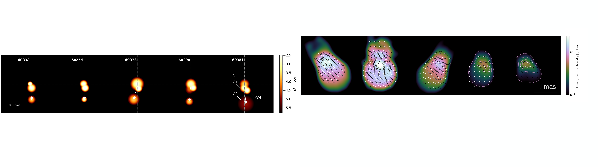 Fig02 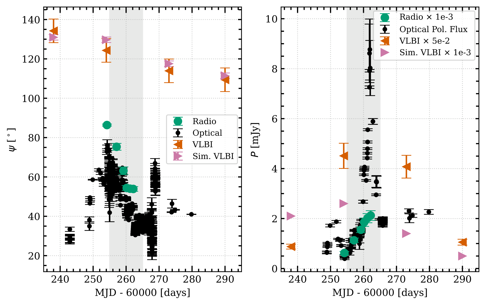 Fig04 Fig05 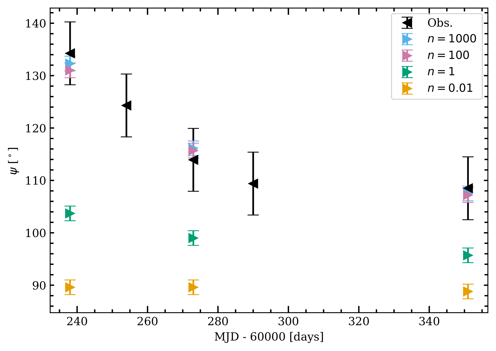 Fig03 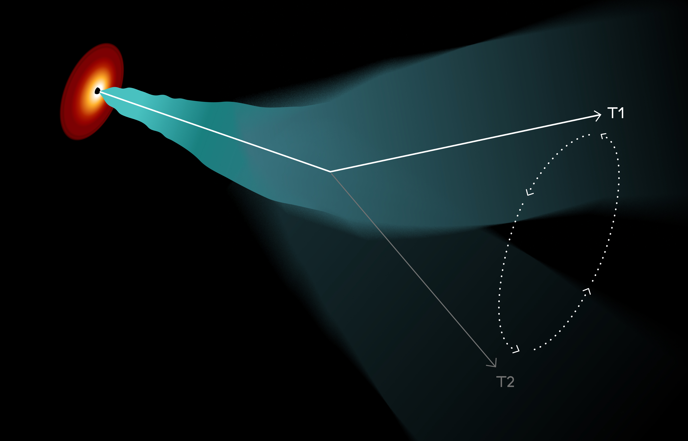 这篇工作处在几个研究脉络的交叉点上。第一是 BL Lacertae 作为同一源的长期 VLBI 和多波段偏振监测，尤其是 Boston University blazar monitoring、MOJAVE 以及光学偏振巡天积累的历史数据。建议检索关键词：“BL Lacertae optical polarization flare EVPA rotation VLBI”、“BL Lac kink instability jet”、“BL Lacertae BU blazar monitoring”。 第二是耀变体偏振角旋转机制之争。相似解释包括螺旋磁场中的运动团块、弯曲喷流中的冲击、湍流随机游走和磁重联 plasmoid 模型；相反观点通常强调单次偏振角旋转的统计非唯一性，认为在采样不均和 \(180^\circ\) 简并下，随机模型也可能产生类似现象。建议检索关键词：“blazar EVPA rotation random walk”、“Marscher turbulent extreme multi-zone model”、“magnetic reconnection blazar polarization”。 第三是相对论喷流 kink 不稳定性和喷流组成问题。本文的重子载荷结论与喷流是 \(e^-e^+\) 主导还是 \(e^-p\) 含量显著这一长期问题相关，但它给出的应被理解为动力学形态约束，而不是直接粒子计数。建议检索关键词：“relativistic MHD kink instability blazar jets”、“baryon loading relativistic jet composition”、“magnetization sigma parsec-scale AGN jet”。 同一事件 / 同类源线索： 相似工作： 基础理论 / 方法工作： 相反观点 / 张力线索： （未提供） 中文题目：实时追踪吸积磁化中子星进入宁静态：真的需要“螺旋桨效应”吗？ 做了什么：这篇论文用 NICER 对 Be/X 射线脉冲星 4U 0115+63 的一次爆发尾段做了高频、连续的 X 射线监测，目标是抓住它从吸积态跌入宁静态的全过程。作者发现，光变曲线的快速衰减、爆发后短期残余辐射以及更晚期宁静态辐射，可以用热-黏滞盘不稳定模型解释：外盘冷却复合后进入低黏滞“冷盘”状态，仍可能有一段持续吸积，随后观测到的低光度辐射更多来自被爆发加热后的中子星冷却。核心结论是：至少对 4U 0115+63 以及一批瞬变 X 射线脉冲星样本而言，不必把快速转入宁静态主要归因于磁层的离心阻挡，即传统的“螺旋桨效应”。 为什么重要：瞬变 X 射线脉冲星爆发尾段常被用来估计中子星磁场：若在某个临界光度突然掉光，就可把它解释为磁层半径超过共转半径、吸积被离心抑制。本文挑战了这种常用读法，指出光变时间尺度和低光度辐射也可能主要由吸积盘自身的热-黏滞演化控制。如果成立，许多基于“螺旋桨转折光度”的磁场估计、盘-磁层耦合推断和宁静态物理解释都需要更谨慎。 理论 / 观测 / 仪器方法价值：这项工作的价值不只是给 4U 0115+63 多画了一条漂亮的尾段光变曲线，而是提供了一个可检验的替代框架：用盘不稳定模型统一解释爆发衰减、冷盘残余吸积和中子星热冷却。对理论上，它把外盘热状态与内区磁层问题重新连接起来；对观测上，它说明高 cadence 软 X 射线监测能区分“几何阻挡”与“供给率耗尽”；对方法上，它提醒读者不要把所有陡降都自动解释成单一临界半径事件。 为什么应该关注：如果你研究 X 射线双星、中子星磁场、Be 星盘供给或瞬变源巡天，这篇文章值得关注，因为它直接影响爆发尾段光变的物理解释。它还关系到一个更广泛的问题：当我们看到天体系统突然变暗时，究竟是在内边界发生了开关式阻挡，还是外部供给和盘热状态自然演化的结果？未来 eROSITA、Einstein Probe、STROBE-X 类高 cadence 监测要回答的正是这类问题。 科学问题：瞬变 X 射线脉冲星在爆发结束时经常出现从高光度吸积态到低光度宁静态的快速衰减。传统解释之一是“螺旋桨效应”：当质量吸积率 \(\dot M\) 降低，磁层半径 \(R_{\rm m}\) 向外移动；若 \(R_{\rm m}\) 超过共转半径 \(R_{\rm co}\)，磁场刚性共转的线速度超过局部开普勒速度，物质被离心抑制，进入中子星表面的吸积骤减。这个图像很有吸引力，因为它给出一个可观测的临界光度，并可反推偶极磁矩 \(\mu\) 或表面磁场 \(B\)。但问题是，爆发尾段的 \(\dot M\) 本来就由外盘和 Be 星供给历史控制，光变曲线未必是单纯的磁层开关。 作者怎么做：本文选择 4U 0115+63 作为核心对象，因为它是经典瞬变 Be/X 射线脉冲星，磁场、距离、脉冲周期和爆发行为都有丰富历史资料。作者利用 NICER 的高时间采样和软 X 射线灵敏度，覆盖爆发结束到宁静态的全过程，而不是只在亮态和暗态各取几次快照。随后他们用热-黏滞盘不稳定模型解释衰减曲线：当盘温度降到氢复合温度附近，电离程度下降，黏滞效率降低，盘进入冷态，外盘向内输运的质量流率快速下降。作者还把同一物理框架推广到更大一批 X 射线脉冲星，检验不同自旋、磁场、轨道和峰值光度下的时间行为是否可由同类盘演化解释。 关键结果：NICER 观测显示，4U 0115+63 的转入宁静态并不需要一个由 \(R_{\rm m}=R_{\rm co}\) 触发的锐利“关门”过程。爆发之后立即观测到的较低光度辐射可以来自仍在冷盘中缓慢向内输运的残余吸积，而更晚的宁静态软 X 射线成分更自然地对应中子星表层或地壳在爆发加热后的热冷却。也就是说，光变曲线可以分成至少两个物理阶段：一段由冷盘吸积维持的后爆发尾巴，以及一段由中子星冷却主导的真正宁静态。作者进一步指出，在一组瞬变 X 射线脉冲星中，衰减时间尺度和宁静态光度的分布也不要求普遍存在由螺旋桨效应支配的主开关。 局限和下一步：这并不意味着螺旋桨效应不存在。磁化中子星的磁层-盘相互作用必然存在，某些源、某些爆发和某些能段中仍可能出现离心抑制或漏吸积。本文更准确的主张是：不能把观测到的爆发尾段快速变暗自动等同于螺旋桨转折，尤其当热-黏滞盘不稳定能解释同样的时间尺度和光度演化时。下一步需要更宽能段、更精确距离、更好约束吸收柱密度和脉冲分数的观测，并结合多波段 Be 星盘监测，以分离外部供给变化、冷盘残余吸积、磁层漏流和中子星热冷却。 本文最重要的证据链从样本选择开始：4U 0115+63 是一颗参数相对清楚的瞬变 X 射线脉冲星，具有约数秒量级自旋周期、强磁场和反复爆发历史。作者没有只取爆发峰值或后期宁静态的零散观测，而是使用 NICER 对爆发尾段做连续监测，因此能够在时间域上分辨衰减斜率、转折、残余低光度平台以及后期热成分变化。这一点很关键，因为螺旋桨解释和盘不稳定解释在单点光度上常常退化，但在完整时间演化上可分辨。 数据处理的核心是把 NICER 计数率转换为吸收修正后的 X 射线通量和光度，并跟踪谱形随时间变化。论文应当重点检查作者如何选择有效曝光、如何处理 NICER 背景、低能校准和太阳散射等系统误差，以及是否在低计数率阶段使用适合的泊松统计。若尾段光度只有少量计数，采用 \(\chi^2\) 拟合还是 Cash 统计会影响置信区间；若吸收柱密度 \(N_{\rm H}\) 与软热成分温度共同浮动，也会影响中子星冷却解释。 模型比较方面，作者的论点不是“观测完全排除螺旋桨”，而是“热-黏滞盘不稳定模型已足以解释主要时间行为”。证据包括：衰减时间尺度与盘黏滞时间可匹配，爆发后立即的低光度不必要求完全停止吸积，后期宁静态光度与冷却中子星相容。若论文中给出不同模型光变曲线叠加图，读者应关注残差是否在转折附近系统偏离，以及 DIM 模型是否只靠调参贴合，还是参数落在物理合理范围。 显著性或置信度的阅读重点应放在模型参数区间和稳健性检验上，而不是寻找一个单一的“\(5\sigma\)”发现。此类工作通常更像物理模型可行性检验：给定距离、倾角、磁场、黏滞参数、盘外半径和照射效率，模型是否能同时解释峰后衰减与宁静态水平。若作者把框架推广到更大 X 射线脉冲星样本，读者还应看样本是否包含不同轨道周期、峰值光度和自旋周期的源，以及是否存在明显离群源。 系统误差主要来自四类：距离误差会按 \(L\propto d^2\) 放大到光度；吸收柱密度和谱模型选择会影响软 X 射线热成分；磁场估计通常依赖回旋线或历史文献，可能随高度和相位变化；爆发开始前的盘质量和外盘半径很难直接观测。稳健性检查应包括改变距离、照射参数、黏滞参数、冷盘内边界条件和背景模型后，结论是否仍然是不需要把螺旋桨作为主控机制。 研究对象 4U 0115+63 是 Be/X 射线双星中的经典瞬变 X 射线脉冲星：一颗强磁场中子星绕 Be 星运行，在穿越或扰动伴星赤道盘时获得物质，形成暂时的吸积盘并爆发。中子星磁场把内盘截断在磁层半径附近，物质沿磁力线落到磁极，产生 X 射线脉冲和高能谱中的回旋吸收特征。这样的系统天然把外盘供给、吸积盘不稳定、磁层物理和中子星表面辐射连接在一起。 历史问题是，爆发尾段为何会快速变暗。自 Illarionov 与 Sunyaev 提出螺旋桨效应以来，许多 X 射线脉冲星的低光度转折都被解释为磁层半径越过共转半径。这个解释的优势是简单、可量化，并且能用转折光度估计 \(B\)。但它也容易被过度使用：只要光变曲线有陡降，就被贴上“propeller”的标签，而没有充分排除外盘耗尽、热不稳定、照射变化或中子星冷却。 观测背景上，过去很多爆发尾段数据采样稀疏。全天监测器能覆盖长时间，但灵敏度和低光度谱学能力有限； pointed 观测灵敏，但不一定能抓住转折时刻。NICER 的优势是软 X 射线有效面积大、调度灵活、时间采样密集，适合追踪从吸积态到低光度宁静态的连续变化。本文所谓“real-time observations”的意义就在于减少了由采样空洞导致的模型歧义。 为什么现在值得重新看？一方面，盘不稳定模型在低质量 X 射线双星、矮新星和瞬变黑洞中已形成成熟框架，但在强磁化中子星的爆发尾段中常被磁层开关叙事压过。另一方面，越来越多的高 cadence X 射线监测显示，低光度态并不总是简单的“开”或“关”：可能有冷盘残余吸积、漏过磁层的物质、极冠冷却、地壳冷却和伴星风背景等多种贡献。 该领域常见误区包括：第一，把临界光度视为精确常数，忽略磁层半径公式中的几何因子和盘-场耦合不确定性；第二，把观测到的低光度脉冲等同于稳定表面吸积，而没有考虑散射、残余热点和统计显著性；第三，把热谱成分直接解释为整颗中子星表面黑体，而忽略大气模型、红移、距离和吸收退化；第四，把单次爆发尾段的行为推广为该源所有爆发的普遍规律。 基础物理图像是：中子星通过吸积释放引力势能，光度近似由 \(L\simeq GM\dot M/R\) 给出。对磁化中子星，内盘不会一直延伸到星面，而是在磁压与吸积流动压平衡处被截断，形成磁层。随着 \(\dot M\) 下降，磁层向外移动，因此爆发尾段特别敏感于盘供给率和磁场强度。 螺旋桨效应的关键条件是 \(R_{\rm m}\gtrsim R_{\rm co}\)。共转半径由中子星自旋角速度 \(\Omega_*=2\pi/P_*\) 决定，在该半径处开普勒角速度等于星体自旋角速度。如果磁层外移到共转半径之外，磁力线拖动物质以超开普勒速度旋转，可能把物质甩出或阻止其继续内落。这个机制会预言一个与 \(B\)、\(P_*\)、\(M\)、\(R\) 有关的临界光度。 本文强调的替代图像是热-黏滞盘不稳定。吸积盘中氢的电离状态决定不透明度和黏滞响应：热态盘电离充分、黏滞高、质量输运快；冷态盘复合、黏滞低、输运慢。爆发尾段中，盘某些区域温度跌到临界温度以下，冷却前沿传播，导致向内质量流率快速下降。此时低光度并不一定是磁层“关门”，也可能是供给率因盘进入冷态而自然衰减。 观测方法上，论文需要把 NICER 的计数谱通过响应矩阵转换为物理谱参数，如吸收柱密度 \(N_{\rm H}\)、热成分温度 \(kT\)、幂律光子指数 \(\Gamma\) 和非吸收通量。低光度阶段尤其要区分冷盘残余吸积与中子星热冷却：前者可能更硬、可能保留脉冲或与残余盘输运相关；后者通常表现为较软热谱，演化时间与地壳或包层热弛豫有关。 常见退化包括：\(N_{\rm H}\) 与 \(kT\) 在软 X 射线中强退化；距离 \(d\) 与辐射面积 \(A\) 退化；磁层半径中的无量纲因子 \(\xi\) 与磁场 \(B\) 退化；盘不稳定模型中的黏滞参数 \(\alpha\)、外盘半径 \(R_{\rm out}\) 和照射效率 \(C\) 也会相互补偿。因此本文的结论应理解为：在合理参数空间内，DIM 能解释观测，而不是说每个微观参数都被唯一测定。 第一步从吸积能量释放出发。若质量吸积率为 \(\dot M\)，中子星质量和半径为 \(M\) 与 \(R_*\)，表面吸积光度近似为 这里 \(G\) 是引力常数，\(\eta\) 表示辐射效率和几何修正。该式说明尾段光度下降可以直接反映 \(\dot M\) 下降，但不能单独告诉我们下降原因是外盘供给耗尽还是磁层阻挡。 第二步写磁层截断条件。偶极磁矩 \(\mu=B_*R_*^3\)，磁压与吸积流动压平衡给出量级关系 其中 \(\xi\) 是盘吸积几何因子，通常不是精确已知常数。该式给出 \(R_{\rm m}\propto \mu^{4/7}\dot M^{-2/7}\)，即爆发尾段 \(\dot M\) 降低会使磁层外移。 第三步定义共转半径。令开普勒角速度等于中子星自旋角速度 \(\Omega_*=2\pi/P_*\)，有 若 \(R_{\rm m} 第四步得到传统螺旋桨临界吸积率。令 \(R_{\rm m}=R_{\rm co}\)，可得 相应临界光度为 这就是许多工作用转折光度反推 \(B_*\) 的基础，但 \(\xi\)、距离和真实转折定义会造成显著系统误差。 第五步引入盘不稳定的热条件。薄盘有效温度满足 其中 \(\sigma\) 是 Stefan-Boltzmann 常数，\(R_{\rm in}\) 是内盘半径，\(C\) 表示 X 射线照射效率。若 \(T_{\rm eff}\) 低于氢电离临界温度，盘可从热态转入冷态。 第六步用黏滞时间解释衰减时间尺度。Shakura-Sunyaev 黏滞写作 \(\nu=\alpha c_s H\)，于是 其中 \(c_s\) 是声速，\(H\) 是盘厚度，\(\Omega_{\rm K}\) 是开普勒角速度。爆发尾段的下降时间若接近相关半径处的 \(t_{\rm visc}\)，就支持盘演化主控，而不必诉诸瞬时磁层开关。 第七步把模型与观测连接。观测到的能谱计数为 其中 \(C_i\) 是第 \(i\) 个能道计数，\(t_{\rm exp}\) 是曝光，\(R_i(E)\) 和 \(A_{\rm eff}(E)\) 是响应与有效面积，\(F_E(\theta)\) 是含参数 \(\theta\) 的源谱，\(B_i\) 是背景。该式说明低光度阶段结论依赖响应、背景和吸收建模。 第八步给出低计数谱拟合的似然。若计数服从泊松分布，适合使用 Cash 统计 其中 \(n_i\) 是观测计数，\(m_i\) 是模型预期计数。比较 DIM 光变模型与螺旋桨开关模型时，可以用 或信息准则诊断相对拟合质量，但物理可解释性和系统误差同样重要。 第九步描述中子星冷却成分。若后期辐射近似来自热表面或热点，观测热光度可写为 其中 \(R_{\infty}\) 与 \(T_{\rm eff}^{\infty}\) 是引力红移后的视半径和有效温度。若后期软成分随时间缓慢下降且与吸积光变脱耦，就支持中子星冷却解释。 本文及同类研究的拟合首先发生在谱层面：对每个 NICER 观测段，建立吸收后的源谱模型，常见组合包括热成分加幂律、黑体或中子星大气模型加非热尾巴。拟合量包括 \(N_{\rm H}\)、\(kT\)、归一化、\(\Gamma\)、非吸收通量和可能的脉冲调制。低计数阶段应优先使用泊松似然或 Cash 统计，并对背景模型变化做重复拟合。 第二层是光变模型拟合。螺旋桨模型通常预言当 \(L\) 接近 \(L_{\rm prop}\) 时出现陡降或吸积效率变化；DIM 模型则通过盘热态向冷态转换、冷却前沿传播和冷盘残余输运解释连续衰减。拟合参数可能包括峰后初始盘质量、外盘半径、热态和冷态黏滞参数、照射效率、内盘截断半径以及中子星冷却基线。读者应关注这些参数是否被数据约束，还是只由先验范围决定。 参数退化很强。距离 \(d\) 与光度整体归一化退化；\(N_{\rm H}\) 与软热温度退化；\(\alpha\) 与 \(R_{\rm out}\) 都能改变衰减时间；\(C\) 与临界冷却半径退化；\(\xi\) 与 \(B_*\) 决定传统 \(L_{\rm prop}\) 的位置。若论文声称“不需要螺旋桨”，最有力的展示方式不是给出一个唯一最佳拟合，而是显示在合理参数扰动下，DIM 仍能覆盖观测误差带。 残差诊断非常重要。若 DIM 模型在转折前后残差无系统结构，而螺旋桨模型需要人为加入漏吸积或多段效率，DIM 解释就更经济。反过来，若在某个光度附近脉冲分数、谱硬度和通量同时发生突变，并且不同爆发重复出现同一阈值，那会增强螺旋桨解释。本文的价值在于把这种判断从单一光度阈值转向时间演化、谱演化和物理参数一致性的联合检验。 实际应用场景包括：用未来监测数据预测爆发尾段何时进入冷盘阶段；重新评估以往源的磁场估计；区分冷盘残余吸积与中子星冷却；以及为人口研究建立更现实的宁静态光度模型。模型也可能失败：如果某些源的低光度阶段仍显示强而稳定的吸积脉冲，或出现与 DIM 时间尺度不符的瞬时掉光，就需要加入磁层阻挡、喷流/外流或非稳态 Be 星供给。 数据与观测策略：读者应首先看 NICER 观测覆盖了爆发尾段的哪些时间范围、每次曝光多长、最低可探测通量是多少。本文的说服力很大程度来自“连续抓住转变过程”，所以时间采样图比单次谱拟合更关键。 谱分析与光度重建：这一部分要检查作者采用的能段、背景模型、响应文件、吸收模型和谱形假设。特别是低光度阶段，热成分与非热成分如何分离，是否固定 \(N_{\rm H}\)，是否报告非吸收通量的置信区间。 4U 0115+63 的光变解释：这是核心结果段。读者应看模型曲线如何解释从爆发尾部到宁静态的连续演化，是否存在必须由螺旋桨解释的突变点，以及作者如何把爆发后残余吸积与中子星冷却分开。 DIM 框架及参数选择：这一节应关注热-黏滞盘不稳定模型中的关键假设，如冷/热态黏滞、照射、外盘半径和内盘边界。好的读法是问：这些参数是否与 Be/X 射线双星的尺度和历史爆发能量相容？ 扩展样本比较：如果论文列出更多 X 射线脉冲星，读者应看样本选择是否均匀，是否包含未探测上限，是否把距离和磁场不确定性纳入讨论。扩展样本不是为了证明所有源都无螺旋桨，而是检验 DIM 是否能解释一大类时间行为。 讨论与局限：最后应重点阅读作者如何限定结论。真正稳健的表述应是“螺旋桨不必作为主导机制”，而不是“螺旋桨不存在”。这一区分对后续引用非常重要。 NICER 长期光变曲线：看横轴时间覆盖是否连续，纵轴是计数率、通量还是光度；重点检查爆发尾段是否存在采样空洞，以及转折是否由真实连续变化支持。 谱参数随时间演化图：检查 \(N_{\rm H}\)、\(kT\)、\(\Gamma\)、通量和硬度比是否同步变化。若后期软化并进入热主导状态，有利于冷却解释。 DIM 模型与观测光变叠加图：看模型曲线是否只拟合总趋势，还是能同时解释陡降、残余尾巴和宁静态水平；注意误差带和参数不确定性。 螺旋桨临界光度标记或对比图：若图中画出 \(L_{\rm prop}\)，要看它相对实际转折光度的位置，以及采用的 \(B_*\)、\(P_*\)、\(\xi\) 和距离。 多源样本比较图：检查不同 X 射线脉冲星的衰减时间、峰值光度、宁静态光度或自旋周期之间是否呈现 DIM 预期趋势；注意离群源是否被充分讨论。 残差或模型比较表：看 DIM 与替代模型的残差结构、拟合统计量、自由参数数目和系统误差预算。若没有残差图，读者应谨慎评估模型优劣。 后期热冷却诊断：若有温度-时间或热光度-时间图，应检查冷却斜率是否物理合理，是否与中子星地壳/包层冷却模型一致。 稳健性检验表：重点看改变距离、吸收、背景、黏滞参数和照射效率后，核心结论是否保持。 图 1：通常应是 4U 0115+63 的长期 X 射线光变，横轴为观测时间或距爆发峰值的天数，纵轴为 NICER 计数率、通量或换算光度。数据点展示实际监测，模型线可能标出 DIM 衰减或经验衰减。读图时不要只看最后一个低点，而要看从亮态到暗态是否连续、转折处是否有密集采样；若存在大时间空洞，任何“快速转变”解释都会变弱。 图 2：应关注能谱或谱参数演化。横轴可能为时间，纵轴为 \(kT\)、\(\Gamma\)、\(N_{\rm H}\)、硬度比或非吸收通量。若后期热成分温度下降而总光度缓慢衰减，支持中子星冷却；若硬成分仍强且伴随脉冲，则残余吸积贡献不可忽略。陷阱是把黑体归一化直接当作真实半径，因为距离、红移和大气效应会改变推断。 图 3：可能是 DIM 光变模型与观测的叠加。横轴为时间，纵轴为光度，实线为最佳拟合或代表性 DIM 曲线，阴影为参数范围。关键看模型是否能自然产生爆发尾段的下降斜率和后期平台，而不是通过不合理参数硬贴。若图中还标出冷却前沿或盘转入冷态的时刻，应检查它是否对应观测中的谱变化。 图 4：可能展示螺旋桨临界光度对比。横轴可为自旋周期 \(P_*\)、磁场 \(B_*\) 或时间，纵轴为光度；水平线或竖线代表 \(L_{\rm prop}\)。读者要注意 \(L_{\rm prop}\) 对 \(\xi\) 和距离极敏感，图上单条临界线不应被看作无误差边界。如果观测转折与临界线不重合或需要极端 \(\xi\)，螺旋桨主导解释就不经济。 图 5：若论文包含更大 X 射线脉冲星样本，图上可能比较不同源的衰减时间、宁静态光度、峰值光度或轨道/自旋参数。应看数据点是否按同一物理趋势分布，以及上限和误差条是否被纳入。陷阱是样本可能来自不同仪器和不同能段，光度换算和吸收修正不均匀会制造假趋势。 图 6：残差、后验分布或稳健性检验图最能判断结论强弱。若残差在转折附近随机分布，说明模型抓住主要时间结构；若残差呈连续正负摆动，则可能缺少额外物理，如漏吸积、照射变化或 Be 星供给扰动。后验角图中若 \(\alpha\)、\(R_{\rm out}\)、\(C\) 呈强相关，说明参数解释要谨慎。 （未提供 verified figure；为避免编造图片链接，本节只在能确认官方图片 URL 或成功提取论文原图时嵌入图片。） 这篇工作直接连接两条文献线。第一条是磁化中子星吸积与螺旋桨效应，从 Illarionov 与 Sunyaev 的经典离心阻挡图像，到后来用转折光度估计中子星磁场的 X 射线脉冲星研究。检索关键词可用 “propeller effect accreting pulsars”, “centrifugal inhibition accretion neutron star”, “4U 0115+63 propeller luminosity”。这些文献提供本文要挑战的默认解释框架。 第二条是热-黏滞盘不稳定模型及其在 X 射线瞬变源中的应用。DIM 最初在矮新星和低质量 X 射线双星中发展成熟，关键词包括 “disc instability model X-ray transients”, “thermal viscous instability accretion disc”, “irradiated disc instability”。本文的特点是把该框架用于强磁化 Be/X 射线脉冲星爆发尾段，并强调冷盘残余吸积与中子星冷却可以共同解释宁静态。 同一源 4U 0115+63 有大量历史观测，包括回旋线磁场测量、爆发行为、脉冲轮廓和低光度态研究。检索关键词可用 “4U 0115+63 cyclotron line”, “V635 Cas X-ray outburst”, “4U 0115+63 quiescence”, “Be X-ray binary 4U 0115+63 NICER”。与本文相近的观测应包括同源爆发尾段监测、同类 Be/X 射线脉冲星如 A 0535+26、V 0332+53、GRO J1008-57 的低光度转变研究，以及讨论低光度脉冲是否代表漏吸积的论文。 同一事件 / 同类源线索： 相似工作： 基础理论 / 方法工作： 相反观点 / 张力线索： （未提供） 中文题目：双中子星并合抛射物的三维秒级演化：动力学、元素分布与千新星光变曲线 做了什么：这篇论文把双中子星并合后约 \(150\,\mathrm{ms}\) 内的数值相对论抛射物，继续用三维广义相对论流体力学推进到秒级时间，并加入非核统计平衡状态方程和基于核反应网络的有效放射性加热。作者重点问：核加热是否会改变抛射物流场和重元素几何分布，二维角向平均模型能否代表三维结构，以及仅靠三维效应能否解释 AT2017gfo 这类千新星观测。主要结论是，核加热会显著推迟同调膨胀、重塑重元素空间分布，尤其在不对称双星和长寿命残余物情形下更强；从 \(\sim150\,\mathrm{ms}\) 延长到 \(\sim1\,\mathrm{s}\) 后，重元素质量的极区角宽度可由约 \(|\theta|\lesssim15^\circ\) 扩展到 \(|\theta|\lesssim30^\circ\)。三维多角度光变曲线通常比二维平均剖面更暗，二维结果可作为近似上限，但三维效应本身仍不足以解决当前理论模型与 AT2017gfo 的差距。 为什么重要：千新星模型的一个长期薄弱环节是从并合后几十到几百毫秒的相对论模拟，如何可靠连接到数小时到数天的辐射转移计算。很多工作在较早时刻截取抛射物并假设其已经接近同调膨胀，但本文显示核加热在秒级前仍可改变速度场、角向分布和元素分层。这意味着千新星的初始条件不是一个无害技术细节，而会进入光度、颜色、视角依赖和迟时伽马线预言。 理论 / 观测 / 仪器方法价值：对理论建模而言，本文给出了从数值相对论边界条件到秒级三维流体演化再到多角度光变曲线的一条更连续的管线，并量化了核加热对同调化和重元素分布的影响。对观测解释而言，它提醒我们二维角向平均光变曲线虽然有用，但可能系统性偏亮；对核天体物理而言，文中关于 \(^{56}\mathrm{Ni}\rightarrow^{56}\mathrm{Co}\rightarrow^{56}\mathrm{Fe}\) 链在 \(\sim100\,\mathrm{d}\) 加热中的作用，以及 \(846.77\,\mathrm{keV}\)、\(1238.288\,\mathrm{keV}\) 钴衰变线的讨论，为未来 MeV 伽马线观测提供了可检验目标。 为什么应该关注：如果你用千新星反推抛射物质量、速度、镧系元素丰度或视角，这篇文章直接关系到模型先验是否可信。它告诉我们，早期三维结构和核加热不仅改变图像细节，还可能移动重元素幕的位置、改变不同视线的亮度排序，并影响把 GW170817/AT2017gfo 当作模板时的系统误差。即使你不做千新星辐射转移，也应关注它，因为它把并合动力学、核合成和电磁对应体之间一个常被简化的连接环节具体量化了。 科学问题：双中子星并合后的动力学抛射物和风状抛射物携带中子丰度、速度结构和角向不均匀性，决定千新星的颜色、峰值时间和视角依赖。传统管线常在并合后 \(\mathcal{O}(10^2)\,\mathrm{ms}\) 取出数值相对论结果，再假设抛射物进入近似同调膨胀，并把它映射到轴对称或角向平均剖面上。本文要检验的核心问题是：这个截断时间是否足够晚？核衰变加热是否只是给辐射转移提供能量，还是也会反过来改变秒级前的流体动力学和元素空间分布？ 作者怎么做：论文选取四个双中子星并合模型，用数值相对论数据作为内边界或初始边界条件，然后用三维广义相对论流体力学继续演化到秒级。相对于只用简单理想气体状态方程的外推，本文采用适用于非核统计平衡区域的状态方程，并加入从核反应网络结果校准的有效核加热处方。这样做的目的是在辐射转移前，先让抛射物在较真实的热压和核能注入下自洽调整速度、密度和几何形态。 关键结果：核加热对抛射物不是微扰。它会推迟同调膨胀的建立，使速度与半径之间的线性关系在 \(\sim1\,\mathrm{s}\) 之前仍不完全稳定；它还会把重元素分布推向更宽的角区。摘要中特别指出，在不对称双星且残余物寿命较长的模型中，从 \(\sim150\,\mathrm{ms}\) 演化到 \(\sim1\,\mathrm{s}\) 后，包含 \(90\%\) 重元素质量的极向区域由约 \(|\theta|\lesssim15^\circ\) 扩展到约 \(|\theta|\lesssim30^\circ\)。这会改变所谓“镧系元素幕”遮挡蓝光的范围，从而改变视角依赖。 作者还把三维多角度剖面用于 ray-by-ray 千新星光变曲线，并与角向平均二维剖面比较。结论比较细致：二维平均并非完全失效，整体趋势仍较稳健；但二维光变曲线通常偏亮，可视作上限。三维结构会降低总辐射效率或把能量重新分配到不同视线；在某些穿过最致密镧系元素幕的视线方向，三维亮度可以接近二维结果。不对称并合会增强这种视角差异。 局限和下一步：本文仍采用有效核加热处方，而不是在三维流体演化中逐区实时耦合完整反应网络；光变曲线采用 ray-by-ray 近似，也不等价于完整多维辐射转移。模型数量为四个，覆盖了若干质量比和残余物情形，但仍不足以形成普适参数化。下一步应把更宽的双星质量、状态方程、磁场和中微子输运纳入样本，并用全三维辐射转移检验二维上限结论在不同波段和不同时间段是否仍成立。 本文的证据链从四个双中子星并合模型开始。作者没有只在并合后早期截断，而是把数值相对论输出作为后续三维广义相对论流体演化的边界条件，推进到秒级。样本规模虽不大，但有意覆盖对称与不对称双星、不同残余物寿命等会强烈影响抛射物几何形态的情形。读者应注意，这类工作里的“样本量”不是天体数，而是高成本三维并合模型数；统计意义更多来自模型间对比和物理趋势一致性，而不是大样本频率学显著性。 最关键的诊断是同调膨胀和角向质量分布。作者比较了有无核加热、早期截取和秒级演化后的密度、速度、元素分布。若速度场满足 \(v\propto r\)，则后续辐射转移可较安全地把空间坐标换成速度坐标；但论文发现核加热会在秒级前继续改变速度结构，因此 \(\sim150\,\mathrm{ms}\) 的剖面并不总是可靠。重元素分布方面，作者用“包含 \(90\%\) 某元素质量的角区”这类累计质量指标，避免只看局部丰度图造成误判。 论文最醒目的数值结论是，对若干重元素如 \(Z=56\) 和 \(Z=79\)，在不对称并合且残余物较长寿命模型中，延长演化会把 \(90\%\) 重元素质量的极向覆盖范围从约 \(|\theta|\lesssim15^\circ\) 扩大到 \(|\theta|\lesssim30^\circ\)。这个结果的支撑图表应是角向累计质量、元素丰度二维/三维切片，以及有无核加热的对照曲线。它的物理含义不是简单“重元素更多了”，而是“重元素在角向上被重新排布”，这对蓝/红千新星成分分离尤其重要。 光变曲线部分的模型比较是本文另一条证据链。作者从多角度三维剖面计算 ray-by-ray 光变曲线，再与由三维剖面角向平均得到的二维光变曲线比较。比较量包括 bolometric luminosity、不同视角峰值亮度和时间演化。结论是二维平均大体能给出趋势，但通常偏亮；三维结构增加遮挡和非均匀扩散路径，使辐射逃逸更依赖视线。这里不应把二维模型看成“错误”，而应看成缺少三维混合和局部高光深结构后的近似上限。 显著性和不确定度主要体现在系统检验而非单个 \(p\) 值。关键系统误差包括核加热处方、反应网络到流体变量的映射、非核统计平衡状态方程、早期数值相对论边界质量通量、角向平均方式、ray-by-ray 辐射近似以及网格分辨率。稳健性检验应关注：无加热与有加热的差异是否大于数值噪声；四个模型是否都显示类似方向的三维降亮；极端视角结果是否由少数低质量高不透明单元主导；以及迟时 \(^{56}\mathrm{Co}\) 线预言对初始 \(^{56}\mathrm{Ni}\) 质量的敏感性。 关于 AT2017gfo，本文的结论是负向但重要的：提高维度通常会降低光度，因此“把二维改成三维”本身不太可能把偏暗的理论模型推到观测亮度。这个论证依赖多角度光变曲线与二维平均光变曲线的直接比较。读者应在相应图中检查 AT2017gfo 观测点或文献约束是否被叠加，若没有，也要看模型峰值光度、峰值时间和颜色演化相对典型 AT2017gfo 参数的偏差方向。 研究对象是双中子星并合产生的抛射物及其千新星辐射。并合过程中，一部分物质通过潮汐剥离、碰撞界面冲击、盘风和残余物风被抛出。它们通常富含中子，发生快速中子俘获过程，即 \(r\)-过程，合成从轻 \(r\)-过程核到镧系、锕系在内的重元素。放射性衰变把核能转化为热，驱动从紫外、光学到近红外的暂现源。 历史上，GW170817/AT2017gfo 把千新星从理论预言变成了可详细建模的观测对象。早期蓝光成分提示存在较高电子分数、较低不透明度的物质；随后红外成分说明存在富镧系元素、高不透明度抛射物。为了同时解释亮度、颜色和时间尺度，模型往往需要多个组分：快的蓝色极向抛射物、慢的红色赤道抛射物，以及可能的盘风或磁驱动风。 一个长期技术问题是时间尺度断裂。数值相对论并合模拟通常可靠覆盖并合前后到几十或几百毫秒，但千新星辐射在小时到天尺度发生。许多辐射转移模型需要在同调膨胀阶段初始化，即假设速度近似固定、半径随时间线性增长。然而如果核加热、压力梯度或残余物风在秒级仍改变流场，早期截取就会把错误的速度和角向结构传给光变曲线。 现在重新看这个问题的原因有三点。第一，数值相对论输出和后处理核反应网络已经足够成熟，可以把核加热反馈纳入秒级流体演化。第二，多信使观测正在从单例 GW170817 走向统计样本，需要更可靠的模型系统误差。第三，未来 MeV 伽马线任务可能直接搜索 \(^{56}\mathrm{Co}\) 或其他放射性核素线，迟时元素分布不再只是光学建模的内部变量。 该领域常见误区包括：把“放射性加热”只理解为光变曲线能量源，而忽略它对早期流体动力学的反作用；把二维轴对称剖面当作三维真实结构的无偏代表；把同调膨胀当作从 \(100\,\mathrm{ms}\) 后自动成立的条件；以及把 AT2017gfo 的单个最优拟合参数直接解释为唯一物理方案。本文正是针对这些简化逐项检验。 基本物理图像是，双中子星并合抛射物在强引力场中获得正总能量后向外膨胀。早期速度可达 \(0.1c\) 到 \(0.3c\) 量级，密度快速下降，温度从核统计平衡区域降到非核统计平衡区域。电子分数 \(Y_e\)、熵和膨胀时标决定核合成路径；核合成释放的能量又通过热压改变局部速度和密度结构。 同调膨胀是千新星辐射转移常用近似。若每个流体元速度基本恒定，则在时间 \(t\) 的位置满足 \(r\simeq vt\)，密度随体积膨胀近似按 \(t^{-3}\) 衰减。这样辐射转移可以在速度空间上求解，且光变曲线主要由总质量、速度、不透明度和加热率控制。本文的重要点是：核加热会向气体注入内能，在秒级前仍可能改变 \(v(r,\theta,\phi)\)，所以同调近似需要被检验而不是默认。 元素分布的关键量包括质量分数 \(X_i\)、原子序数 \(Z\)、电子分数 \(Y_e\)、角向累计质量和视线不透明度。镧系元素和锕系元素因复杂束缚束缚跃迁显著提高光学不透明度，常形成所谓 lanthanide curtain，即富镧系元素区域遮蔽内部蓝光。本文显示这种幕的角向位置和宽度会被秒级核加热演化改变，因此视角依赖不是只由初始潮汐尾形状决定。 观测建模方面，千新星光变曲线近似由放射性加热与扩散逃逸竞争决定。更大的抛射物质量 \(M_{\rm ej}\) 增加扩散时间，更高速度 \(v\) 降低光深并使峰值提前，更高不透明度 \(\kappa\) 使光变更红、更晚、更暗。三维结构引入额外复杂性：同一 \(M_{\rm ej}\)、\(v\)、\(\kappa\) 的角向平均模型，与真实三维 clump、幕状结构和非轴对称遮挡给出的视线光变可不同。 常见退化包括 \(M_{\rm ej}\) 与 \(\kappa\) 在峰值时间上的退化，\(Y_e\) 与核加热率在颜色和亮度上的退化，视角与蓝色物质质量之间的退化，以及残余物寿命与盘风成分之间的退化。系统误差则来自核质量模型、反应率、热化效率、辐射转移近似、数值分辨率和早期边界条件。本文主要减少的是“早期截取和维度平均”带来的系统误差。 可以从抛射物质量守恒开始理解同调化检验。对流体密度 \(\rho\) 和速度场 \(\mathbf{v}\)，非相对论极限下的连续性方程为 这里 \(\rho\) 是质量密度，\(t\) 是坐标时间，\(\mathbf{v}\) 是三维速度。若后期进入同调膨胀，流体元满足 \(r=v t\)，体积随 \(t^3\) 增长，因此密度近似满足 这个关系是把秒级流体输出映射到辐射转移初始条件时最常用的标尺；若模拟中 \(v\) 仍随时间变化，则该式不再严格成立。 核加热进入能量方程。以单位质量内能 \(\epsilon\) 表示，在拉格朗日流体元中可写成 其中 \(P\) 是压强，\(\dot{q}_{\rm nuc}\) 是单位质量核加热率，\(\dot{q}_{\nu}\) 表示中微子冷却或损失，\(\dot{q}_{\rm rad}\) 表示辐射损失；在秒级流体阶段，\(\dot{q}_{\rm nuc}\) 对压力梯度和速度场的反馈是本文关注重点。 千新星文献中常用的 \(r\)-过程加热率近似为幂律，本文的有效加热处方可理解为从反应网络折算出的局地函数： 这里 \(q_0\) 是归一化，\(\alpha\) 常在 \(\sim1\) 附近，\(s\) 是熵，\(\tau\) 是膨胀时标，\(f\) 汇总电子分数和热历史对核素分布的影响。本文比单一幂律更进一步，用网络结果指导不同流体元的加热。 元素质量分布可用角向积分定义。对某元素或元素组 \(i\)，其在极角 \(\theta\) 附近的质量分布为 其中 \(X_i\) 是质量分数，\(d\Omega=\sin\theta\,d\theta\,d\phi\)。包含 \(90\%\) 元素质量的角区可由 定义。摘要中 \(Z=56\) 和 \(Z=79\) 的角区展宽正是这类累计量的物理表达。 光变曲线的基本扩散时标可由光深估算得到。若抛射物质量为 \(M_{\rm ej}\)、平均速度为 \(v\)、灰不透明度为 \(\kappa\)，峰值时间量级为 其中 \(c\) 是光速，\(\beta\) 是与密度结构有关的数值因子。这个式子说明为什么质量和不透明度增加会推迟峰值，而速度增加会提前峰值。 峰值光度近似服从 Arnett 型能量平衡，即峰值附近辐射光度接近热化后的放射性加热功率： 这里 \(\epsilon_{\rm th}\) 是热化效率。三维结构会让 \(M_{\rm ej}\)、\(\kappa\) 和 \(\dot{q}_{\rm nuc}\) 变成视线相关的有效量，因此二维平均模型可能给出偏高的 \(L_{\rm pk}\)。 对 ray-by-ray 光变曲线，某一方向 \(\hat{n}\) 上的有效光深可写为 当 \( au_{\hat{n}}\lesssim1\) 时该方向的辐射较易逃逸；当富镧系元素幕使 \(\kappa\rho\) 增大时，同一总质量也会显著变暗变红。这解释了为什么三维 clump 和幕状结构会改变视角依赖。 迟时 \(^{56}\mathrm{Co}\) 衰变线的线光度可用核素数目衰减估算： 其中 \(N_{\rm Co}\) 是钴核数，\(\lambda_{\rm Co}\) 是衰变常数，\(B_\gamma\) 是给定伽马线分支比，\(E_\gamma\) 对应 \(846.77\,\mathrm{keV}\) 或 \(1238.288\,\mathrm{keV}\)，\(f_{\rm esc}\) 是逃逸概率。本文关于 \(\sim100\,\mathrm{d}\) 加热和钴线的讨论可用此式连接到未来 MeV 观测灵敏度。 本文本身更像模拟与后处理比较论文，而不是对某个观测事件进行严格贝叶斯拟合；但它涉及的拟合逻辑可分为两层。第一层是流体演化参数和初始条件的物理比较：同一数值相对论并合模型在有无核加热、不同截取时间、三维剖面与二维角向平均之间如何改变密度、速度和元素分布。这里的“残差”不是观测残差，而是模型间差值图、累计质量差异和速度同调性偏差。 第二层是千新星光变曲线的模型评估。典型拟合量包括 bolometric luminosity、多波段光度、峰值时间、颜色温度、有效速度和视角依赖。若与观测比较，似然通常可写成观测光度或星等与模型预言的高斯残差，并加入距离、消光、测光零点和模型系统误差。本文的重点不是重新拟合 AT2017gfo，而是判断三维剖面相对二维剖面会把模型光变推向哪个方向。 参数退化非常关键。峰值时间主要约束 \(\kappa M_{\rm ej}/v\) 的组合，而非单独的 \(M_{\rm ej}\)；颜色同时受 \(Y_e\)、镧系元素质量分数、温度和视角影响；总光度受加热率、热化效率、质量和扩散损失共同控制。因此，如果三维结构让局部光深升高并降低 bolometric luminosity，用二维模型拟合观测时可能会误以为质量较低、速度较高或不透明度较小。 系统误差包括核反应网络的核质量模型与衰变率、有效加热处方是否能代表完整网络、状态方程在非核统计平衡区域的适用性、数值相对论边界处质量通量的截断误差、以及辐射转移中的 ray-by-ray 近似。ray-by-ray 方法忽略或简化横向辐射输运，因此在强非轴对称结构中可能高估视线间独立性。二维平均模型则可能抹平高不透明 clump，导致偏亮。 实际应用时，本文结果建议把二维光变曲线当成快速参数扫描工具，而不是最终误差预算。若要用未来千新星样本反推核物理或中子星状态方程，应在先验中加入秒级动力学演化和三维结构导致的系统偏移。对单个事件拟合，应同时报告三维/二维剖面差异、截取时间差异和核加热处方差异，而不只是统计误差条。 数据/样本部分应先看四个双中子星并合模型的基本参数：质量比、总质量、采用的中子星状态方程、残余物寿命、数值相对论输出时间以及抛射物质量。读者要判断这些模型覆盖的是哪些物理情形，尤其是不对称双星和长寿命残余物，因为摘要中最强核加热效应出现在这类模型。 方法部分重点看从数值相对论数据到长期三维广义相对论流体演化的映射。需要检查边界条件如何设置，哪些变量从原模拟继承，非核统计平衡状态方程如何使用，有效核加热率如何由反应网络结果构造，以及是否讨论了网格、外边界和质量守恒误差。 动力学与元素分布结果部分是全文核心。建议重点读有无核加热对比、同调膨胀诊断、角向累计质量分布和元素丰度图。特别注意 \(Z=56\)、\(Z=79\) 等代表性元素的空间分布是否只是局部变化，还是累计质量角区也发生系统展宽。 光变曲线部分要看三维多角度剖面与二维角向平均剖面的比较。读者应区分 bolometric luminosity 与特定波段光变，区分全局降亮与个别视线接近二维亮度的例外，并检查不对称模型是否确实产生更强视角依赖。 讨论和结论部分应重点看作者对 AT2017gfo 张力的判断。本文不是声称三维模型解决了问题，而是认为增加维度通常降低亮度，因此难以靠三维效应本身补足理论模型与 AT2017gfo 的差距。附录或稳健性检验若包含分辨率、加热处方、角向平均定义，应作为判断结论可靠性的关键材料。 模型参数表：检查四个并合模型的质量比、总质量、残余物类型、抛射物质量和数值相对论截取时间；这是理解哪些结论可推广的基础。 密度和速度三维/二维切片：看核加热是否改变膨胀形态、是否出现非轴对称 clump、赤道潮汐尾和极向风之间的界面是否被重塑。 同调膨胀诊断图：应检查 \(v\) 与 \(r/t\) 的偏差、不同时间的速度分布是否收敛，以及 \(150\,\mathrm{ms}\) 到 \(1\,\mathrm{s}\) 的变化是否超过数值噪声。 元素角向累计质量图：重点看 \(Z=56\)、\(Z=79\) 或镧系元素组的 \(90\%\) 质量角区，比较有无核加热和不同演化时间。 核加热率与主要衰变贡献图：检查 \(^{56}\mathrm{Ni}\rightarrow^{56}\mathrm{Co}\rightarrow^{56}\mathrm{Fe}\) 链在 \(\sim100\,\mathrm{d}\) 是否确实主导，以及相对其他 \(r\)-过程核素的贡献。 三维多视角 bolometric 光变曲线：看不同视角的峰值亮度、峰值时间和散布；注意二维平均曲线是否系统位于三维曲线包络上方。 视角依赖或镧系元素幕诊断图：检查最暗视线是否对应最高柱密度或最高不透明度区域，以及是否存在三维亮度接近二维结果的特殊方向。 稳健性或残差图：若论文提供分辨率、加热处方或角向平均方式的对照，应看主结论是否保持，尤其是三维降亮和重元素角区展宽。 图 1：通常应是模拟管线或模型样本概览。横轴/列可能给出并合模型名称、质量比、残余物寿命和输出时间，纵轴/行可能列出抛射物质量、平均速度、电子分数等。读图时不要只看总抛射物质量，还要看不对称程度和残余物寿命，因为这两个量控制后续核加热对几何结构的放大效应。 图 2：密度、速度或熵的空间切片图。坐标轴一般是 \(x\)-\(z\) 或 \(x\)-\(y\) 平面距离，颜色表示 \(\rho\)、\(v\) 或热力学量，可能用不同面板比较 \(150\,\mathrm{ms}\) 与 \(1\,\mathrm{s}\)。主要结论应是抛射物仍在被核加热和压力梯度重塑。读图陷阱是颜色标尺常为对数，局部亮色不等于占有大质量，需要结合累计质量图。 图 3：同调膨胀诊断图。横轴可能是半径、速度或角向，纵轴是 \(v-r/t\)、速度分布或某种同调偏差指标。模型线若随时间趋于重合，说明接近同调；若有核加热曲线在秒级前仍变化，说明早期截取不充分。读者应关注偏差出现在高质量低速部分还是低质量高速尾部，因为前者对光变影响更大。 图 4：元素分布或角向累计质量图。横轴通常是极角 \(\theta\) 或 \(|\theta|\)，纵轴是累计质量分数或 \(dM_i/d\Omega\)，不同颜色代表元素如 \(Z=56\)、\(Z=79\) 或不同时间。关键读数是包含 \(90\%\) 元素质量的角宽度是否从 \(\sim15^\circ\) 扩到 \(\sim30^\circ\)。陷阱是极角定义可能以极轴或赤道为零点，必须先确认论文坐标约定。 图 5：核加热和迟时衰变贡献图。横轴应是时间，纵轴是单位质量加热率或总加热功率，曲线分解不同核素链。若 \(^{56}\mathrm{Co}\) 在 \(\sim100\,\mathrm{d}\) 附近占优，就支持摘要中关于 \(846.77\,\mathrm{keV}\) 和 \(1238.288\,\mathrm{keV}\) 线的预言。读图时要区分产生的伽马光子能量和实际逃逸光度，后者还依赖光深。 图 6：三维多角度与二维平均 bolometric 光变曲线。横轴是爆发后时间，纵轴是 \(L_{\rm bol}\)，多条细线可能代表不同视角，粗线代表二维平均或角向平均模型。主要结论是二维曲线通常偏亮，三维曲线形成视角包络。不应只比较峰值，也要看峰值时间和衰减斜率，因为这些量对应不同物理退化。 图 7：视角与不透明度或镧系元素幕关系图。坐标可能是视角 \(\theta_{\rm obs}\) 对峰值光度，或天空投影上的柱密度/元素质量分数。关键是最暗方向是否与富镧系元素最高柱密度重合，以及二者关系是否随质量比增强。陷阱是局部高不透明度区域若覆盖小立体角，可能强烈影响个别视线但不改变角向平均。 图 8：稳健性检验或模型比较图。应检查不同分辨率、不同加热开关、不同维度平均方式下，光变降亮和元素展宽是否保持。如果只有单一模型显示极端效应，应谨慎推广；如果四个模型方向一致但幅度不同，则说明物理机制稳健而数值幅度仍需扩展样本。 Fig04 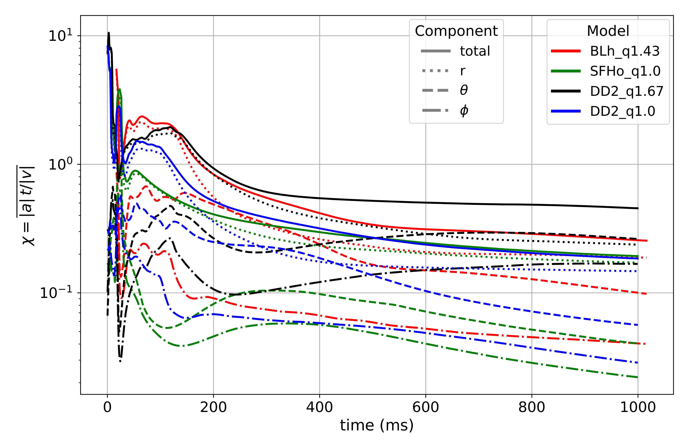 Fig12 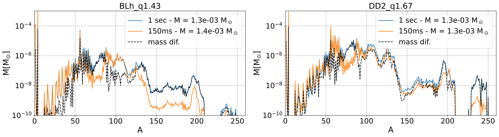 Fig09 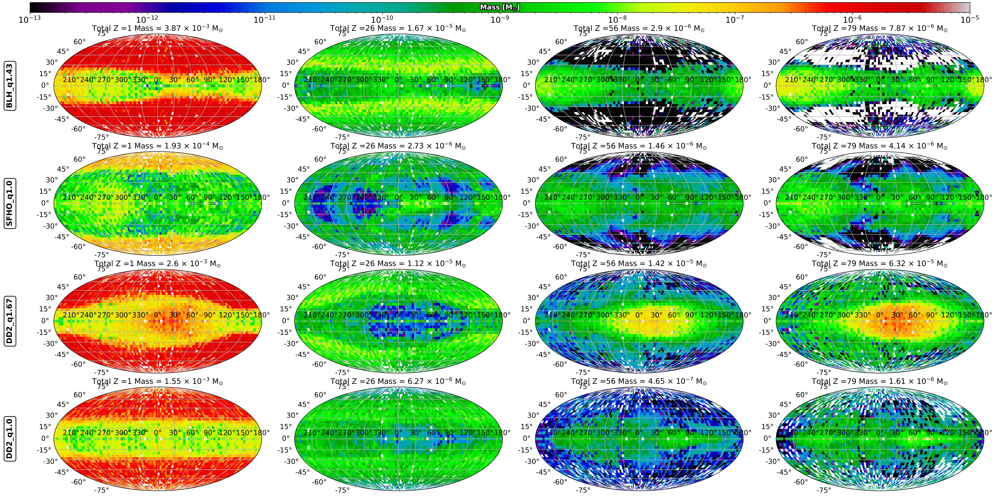 Fig10 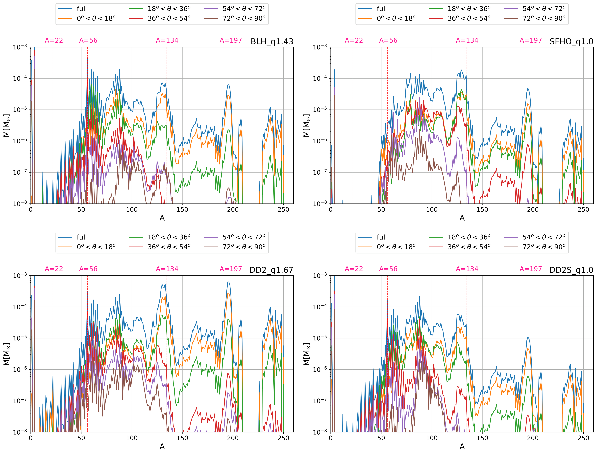 Fig03 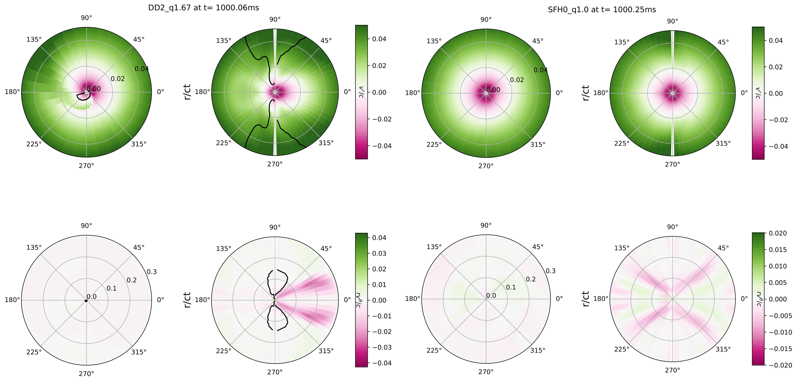 Fig06 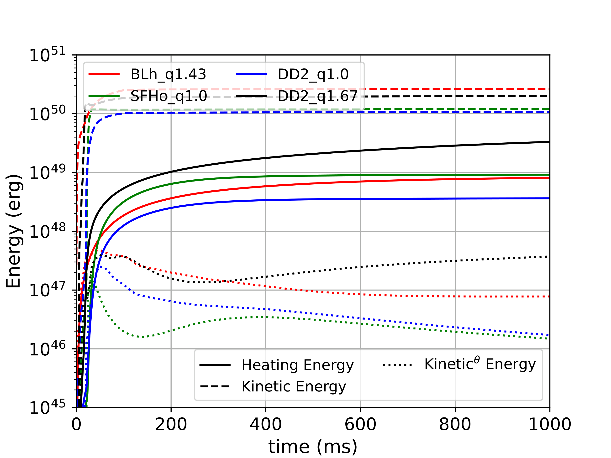 这篇工作与 GW170817/AT2017gfo 后形成的千新星建模传统直接相连。同一事件论文包括多信使发现、光学红外光变观测、谱演化和理论辐射转移解释；同类工作包括 Kasen、Metzger、Tanaka、Perego、Kawaguchi 等关于多组分抛射物、镧系元素不透明度和视角效应的研究。检索关键词可用 “GW170817 kilonova radiative transfer lanthanide curtain”, “binary neutron star merger ejecta nucleosynthesis heating”, “homologous expansion kilonova initial conditions”。 在理论基础上，本文延续了 Li 与 Paczyński 关于放射性驱动暂现源的早期构想、Metzger 等关于 \(r\)-过程加热千新星的半解析模型，以及数值相对论并合模拟与核反应网络后处理的发展。它与一些简化二维或轴对称模型的关系不是简单否定，而是给出适用边界：二维角向平均可用于趋势估计，但在绝对光度和视角依赖上应当看作偏乐观或上限。 潜在张力在于 AT2017gfo 的亮度和颜色。若某些理论模型偏暗，直觉上可能希望三维结构打开低不透明通道来增亮；但本文发现增加维度通常降低 bolometric luminosity。因此相反观点或替代解释应从额外蓝色风、更高热化效率、不同核加热、磁驱动喷流/风、长寿命中子星残余物或不透明度修正中寻找，而不是只归因于三维几何。 同一事件 / 同类源线索： 相似工作： 基础理论 / 方法工作： 相反观点 / 张力线索： 中文题目：同步辐射调控的相对论磁流体湍流：辐射、偏振与法拉第旋转 做了什么：这篇论文用三维受迫相对论磁流体模拟研究强磁化、相对论热等离子体在同步辐射冷却下的湍流演化，并从模拟快照后处理出同步辐射谱、线偏振图和法拉第旋转量。核心发现是：湍流注入与同步冷却可把系统维持在平均相对论热状态，但冷却会触发热不稳定，使气体分裂成热而稀薄、冷而致密的多相结构；这种多相性显著放大高频同步辐射和偏振的时空变化，并改变有效旋转量。论文的重要性在于把“动力学湍流”“辐射冷却”“传播效应”放在同一个可计算框架中，给快速射电暴环境、脉冲星风云和耀变体喷流中的可变辐射与旋转量提供了一个物理上更连贯的解释路径。 为什么重要：许多高能天体源的观测量并不是单纯由粒子能谱或平均磁场决定，而是由湍流结构、冷却时间、密度间歇性和视线传播共同塑造。快速射电暴的巨大且可变的旋转量、脉冲星风云中的偏振斑块、耀变体的高频耀发和偏振角变化，都要求我们理解强辐射相对论等离子体如何在非线性湍流中组织自己。本文的重要性在于，它不只计算一个静态发射区的谱，而是展示同步冷却如何反过来改变湍流的热力学相结构，从而改变发射和法拉第旋转诊断。 理论 / 观测 / 仪器方法价值：对理论而言，论文给出了同步冷却调控相对论磁流体湍流的数值实验基准，特别是热不稳定、多相介质、间歇性发射和旋转量之间的联系。对观测而言，它说明同一个湍流区域可以同时产生可变同步辐射、复杂偏振图样和随时间变化的法拉第旋转量，因此解释观测时不能把辐射区和传播屏简单拆开。对方法而言，它展示了从三维相对论磁流体模拟到合成谱、偏振和旋转量的后处理链条，可作为未来与快速射电暴、脉冲星风云、活动星系核喷流偏振监测比较的模板。 为什么应该关注：如果你关心快速射电暴周围的高旋转量为何快速变化、耀变体偏振为何常有非平稳行为、或脉冲星风云中局部高能辐射为何如此斑驳，这篇文章值得看。它提醒我们：在强冷却相对论等离子体中，观测到的亮斑、谱变硬、偏振波动和旋转量变化可能不是独立现象，而是湍流能量注入与同步冷却平衡后的同一套多相结构的不同投影。 科学问题：相对论磁化等离子体在黑洞喷流、脉冲星风云、磁星环境和快速射电暴近源区都很常见。这些系统往往既湍动又强辐射，粒子通过同步辐射快速失能，而湍流又持续把磁能和机械能转化为热能与非热能。传统模型常把动力学和辐射分开：先假设一个密度、温度、磁场结构，再计算同步辐射或法拉第旋转。但如果冷却时间和湍流翻转时间可比，辐射冷却会改变压力、密度和磁场关联，从而改变后续辐射与传播效应。本文要回答的就是：同步冷却能否调控相对论磁流体湍流的相结构，并在谱、偏振和旋转量中留下可观测痕迹。 作者怎么做：论文进行三维受迫相对论磁流体模拟，在周期盒中注入湍流能量，并加入同步辐射冷却项。受迫驱动保证系统不是一次性衰减湍流，而是达到能量注入与辐射损失近似平衡的统计稳态。随后作者从模拟中的密度、压力、磁场和速度场计算合成同步辐射强度、频谱、线偏振以及沿视线积分的法拉第旋转量。这样的设计特别适合分离两个效应：一是平均热状态由驱动和冷却的能量平衡决定；二是局部热不稳定导致的密度和温度间歇性会放大发射与旋转量波动。 关键结果：模拟显示，系统整体可以保持相对论热，即平均温度仍足够高，使得法拉第旋转不能直接套用冷等离子体公式而不加修正。更重要的是，同步冷却会触发热不稳定，使等离子体分化为热而稀薄与冷而致密两类区域。冷致密相对法拉第旋转贡献更强，热稀薄相则可以占据较大体积并影响高能发射。由于同步辐射对磁场强度和高能电子极为敏感，高频辐射比低频辐射更容易被局部冷却、压缩和磁场间歇性调制，因此出现更强的空间斑驳性和时间变率。偏振图也不只是平均磁场方向的简单投影，而受到湍流磁场缠结、不同深度辐射叠加和法拉第旋转去偏振的共同影响。 局限和下一步：本文使用相对论磁流体而非全动理学模拟，因此不能自洽追踪非热粒子加速、微观各向异性压力、粒子分布函数的高能尾以及小尺度重联中的辐射反馈。同步辐射谱和偏振的合成需要对电子分布作模型化假设，而真实快速射电暴环境、脉冲星风云和耀变体喷流还涉及几何膨胀、边界条件、外部光子场、成对等离子体比例和非均匀驱动。下一步自然是把这种辐射调控湍流框架与粒子-in-cell模拟、全局喷流或磁星风模型连接，并用多频偏振监测、旋转量时间序列和高频光变的联合统计来检验。 本文的证据链从一组三维受迫相对论磁流体盒模拟开始。样本不是天体源目录，而是不同冷却强度、磁化程度或驱动条件下的数值实验。每个实验在湍流驱动若干翻转时间后进入准稳态，作者再用多个时间快照计算体积分布、功率谱、合成辐射和传播诊断。因此读者应把“样本量”理解为模拟参数组数、每组的独立快照数以及视线方向采样，而不是观测事件数。 最关键的判据是能量收支：湍流驱动注入的能量与同步辐射冷却损失在时间平均上平衡，使平均温度保持相对论热。这个结论通常由时间序列图支撑：总能量、内能、磁能、辐射损失率、驱动功率随时间变化。如果这些曲线只在短暂阶段平衡，则后处理诊断不能代表稳态；如果跨多个翻转时间维持平衡，合成谱和旋转量统计才有解释意义。 第二个关键结果是热不稳定和多相结构。证据应来自密度—温度相图、压力分布、冷却时间与动力学时间的空间分布，以及三维切片中冷致密团块和热稀薄背景的共存。这里的统计显著性不是传统观测中的 \(\sigma\) 检测，而是数值实验中分布函数是否从单峰变为双峰或长尾、不同时间快照是否重复出现、改变分辨率或冷却参数后是否仍存在。读者应特别检查冷相是否由物理冷却长度解析出来，而不是网格尺度冷凝造成的数值伪影。 第三个关键结果是高频同步辐射变率增强。支撑它的图通常是不同频率下的合成光变曲线、频谱快照、二维强度图和亮度分布函数。因为同步辐射在高频端对应更高能电子或更强磁场区域，高频发射对局部冷却和磁场间歇性更敏感；若图中高频光变的均方根、偏度或峰度明显大于低频，且这种趋势在多个视线方向保持，就支持作者的解释。需要同时看总通量与局部像素统计，避免把少数极亮像素误认为全局能量输出增加。 第四个关键结果是旋转量和偏振的可变性。作者从模拟盒沿视线积分有效法拉第旋转量，并把它与合成线偏振叠加。由于相对论热电子会抑制法拉第旋转，而冷致密相会增强旋转贡献，有效旋转量对多相结构非常敏感。稳健性应检查不同视线、不同频率、不同时间快照下旋转量分布是否有相似的长尾和符号翻转；还要检查偏振度下降究竟来自磁场方向混乱、视线内法拉第去偏振，还是有限分辨率波束平均。 系统误差主要来自四类：相对论磁流体近似无法描述非热粒子加速；同步冷却项和电子分布函数假设会影响高频谱；有限盒子和周期边界可能限制大尺度结构；有限分辨率可能影响冷相厚度和法拉第深度小尺度涨落。论文的稳健性应通过分辨率测试、冷却参数扫描、不同视线投影和不同辐射后处理假设来建立。即使没有给出观测意义上的显著性，读者也可从这些检验判断结果是物理趋势还是数值设置的产物。 研究对象是相对论磁化湍流中的辐射等离子体。这里“相对论”主要指热粒子能量可与或超过静质量能相比，声速、阿尔芬速度和磁场能量密度都可能接近 relativistic regime；“磁化”意味着磁场不只是被动标量，而是主导动量输运、能量级联和辐射损失。同步辐射是这类系统最常见的辐射机制之一，因为高能电子或正负电子在磁场中回旋并辐射，辐射功率强烈依赖粒子能量和磁场强度。 历史上，天体同步辐射模型常从均匀源或分层喷流出发，用幂律电子能谱、平均磁场和源大小解释频谱与偏振。法拉第旋转则常被当作一个外部传播屏，用视线方向磁场和电子柱密度解释偏振角随波长平方的变化。这些近似在很多场景中有用，但它们隐含发射区、冷却区和旋转区可分离，且介质统计性质相对平稳。快速射电暴重复源的旋转量快速变化、活动星系核喷流偏振角随机游走、脉冲星风云局部高能斑块，都提示这个分离假设可能过于简单。 现在值得重新看这个问题，有两个原因。第一，数值相对论磁流体和辐射后处理已经成熟到可以在三维湍流中同时计算动力学和多种观测诊断。第二，观测端的多频偏振、快速时域监测和高动态范围成像正在积累大量时间相关数据，单一平均模型很难解释这些统计量。尤其是当冷却时间接近湍流翻转时间时，辐射不再只是“结果”，而会成为控制热力学结构的反馈项。 该领域常见误区之一是把高旋转量直接等同于高密度或强磁场。对相对论热等离子体来说，法拉第旋转效率会被温度修正显著抑制，因此同样的电子柱密度在冷相和热相中的旋转贡献差别很大。另一个误区是把低偏振度简单解释为磁场完全无序；实际上视线内多层发射的叠加、法拉第深度混合、波束平均和时间平均都能降低观测偏振度。还有一个误区是把高频耀发只归因于粒子注入变化，而忽略磁场间歇性和冷却调控的多相密度结构也可造成强烈变率。 本文所处的理论背景介于全局天体模型和微观动理学模型之间。全局模型能给出喷流、星风或近源环境的几何与能量预算，但难以解析小尺度湍流；粒子-in-cell模拟能描述加速和微观辐射反作用，但空间尺度有限。相对论磁流体湍流加辐射冷却是一个中间层级：它牺牲了微观分布函数的自洽性，换取足够大的动态范围来研究多相结构、间歇性和传播效应。 基础物理图像可以从带电粒子在磁场中运动开始。相对论电子在垂直于速度方向的磁场分量中加速，产生同步辐射；单个粒子的辐射功率随洛伦兹因子和磁场强度快速增加。因此高能电子更容易冷却，高频辐射更容易反映最近的能量注入、局部磁场增强和热力学不稳定。若湍流持续注入能量，系统可在平均意义上达到“加热等于冷却”的稳态，但局部区域仍可能因冷却率的温度或压力依赖而分裂成不同相。 在相对论磁流体框架中，等离子体被近似为连续流体，演化变量包括质量密度、四速度、压力、内能和磁场。湍流驱动项向大尺度注入动能或磁能，非线性级联把能量传到小尺度并耗散为热。同步冷却项从能量方程中移除内能，其强度取决于局部磁场和电子能量分布。本文的核心假设是：虽然微观粒子分布没有由动理学方程自洽演化，但可用局部流体量构造有效热电子或给定非热电子分布，并据此计算辐射和传播诊断。 法拉第旋转的关键量是旋转量，它衡量线偏振角随波长平方变化的斜率。冷等离子体中，旋转量与视线积分的电子密度和视线磁场成正比；但在相对论热等离子体中，电子的高热运动会削弱左右圆偏振传播速度差，从而降低法拉第旋转效率。因此旋转量不仅取决于总电子柱密度，还取决于温度分布和冷热相占比。本文强调的多相结构正是通过这个温度依赖把动力学冷却与传播效应连接起来。 同步偏振则取决于磁场在天球面的有序程度、电子能谱斜率和视线积分效应。单一区域中，幂律电子同步辐射可有较高本征线偏振度；但湍流介质中不同小区的磁场方向不同，偏振矢量相加会部分抵消。若同一发射区内部还存在显著法拉第旋转，则不同深度和不同频率的偏振角不同，会产生内部去偏振。观测上看到的偏振度、偏振角变化和旋转量波动，都是三维磁场、密度、温度和辐射权重共同投影后的结果。 常见退化关系包括：高亮度可由高电子密度、高磁场、较硬电子谱或较大路径长度产生；高旋转量可由高冷电子柱密度或强视线磁场产生，但相对论高温会抑制它；低偏振度可由磁场混乱、法拉第去偏振或有限分辨率平均产生。本文的数值优势在于所有这些量来自同一湍流场，因此可以直接检查它们的空间相关性，而不是在解析模型中把它们当作互不相关的自由参数。 第一步是写下能量收支。对一个受迫湍流盒，体平均内能密度 \(\langle u\rangle\) 的演化可近似表示为 其中 \(\langle Q_{\rm drv}\rangle\) 是外部驱动注入率，\(\langle Q_{\rm diss}\rangle\) 是湍流级联耗散转化为热的项，\(\langle \Lambda_{\rm syn}\rangle\) 是同步冷却率。统计稳态要求 \(d\langle u\rangle/dt\approx 0\)，也就是加热与冷却在时间平均上平衡。 第二步是同步冷却的局部尺度。相对论电子的同步辐射功率可写成 其中 \(\sigma_{\rm T}\) 是汤姆孙截面，\(c\) 是光速，\(\gamma\) 是电子洛伦兹因子，\(\beta=v/c\)，\(U_{B}=B^{2}/8\pi\) 是磁能密度，\(\alpha_{\rm p}\) 是俯仰角。对各向同性俯仰角分布可把 \(\sin^{2}\alpha_{\rm p}\) 作角平均。 第三步定义冷却时间。单个电子能量为 \(\gamma m_{\rm e}c^{2}\)，因此 其中 \(m_{\rm e}\) 是电子质量。若 \(t_{\rm cool}\) 与湍流翻转时间 \(t_{\rm eddy}\sim L/v_{\rm turb}\) 可比，冷却会显著反作用于流体热结构。 第四步连接到同步辐射频率。给定磁场 \(B\)，洛伦兹因子为 \(\gamma\) 的电子主要辐射在特征频率 其中 \(e\) 是电子电荷，\(B_{\perp}\) 是垂直于视线或粒子速度的磁场分量。因此观测频率越高，通常越偏向选取高 \(\gamma\) 电子或强 \(B_{\perp}\) 区域，也就越容易表现出快速冷却和空间间歇性。 第五步写出幂律电子同步发射率。若电子数分布为 \(n(\gamma)=K\gamma^{-p}\)，则在光学薄近似下体发射率满足 其中 \(K\) 是电子归一化，\(p\) 是谱指数。这个式子说明亮度对 \(B_{\perp}\) 是非线性的，因此湍流磁场的间歇性会被辐射图像放大。 第六步考虑线偏振。均匀磁场、光学薄、幂律电子条件下，同步辐射本征线偏振度为 湍流中观测到的偏振度通常小于 \(\Pi_{0}\)，因为不同位置的斯托克斯参数 \(Q\) 和 \(U\) 会矢量相加并相互抵消。 第七步写出辐射转移中的斯托克斯积分。在忽略吸收时，复线偏振可表示为 其中 \(s\) 是视线坐标，\(\chi(s)\) 是局部偏振角。这个表达式说明，强度加权和磁场方向共同决定最终偏振。 第八步加入法拉第旋转。偏振角随波长 \(\lambda\) 的变化为 其中 \(\chi_{0}\) 是本征偏振角，\({\rm RM}\) 是旋转量。冷等离子体极限下 其中 \(n_{\rm e}\) 是电子数密度，\(B_{\parallel}\) 是视线方向磁场。相对论热等离子体中通常需乘上温度抑制因子 \(f_{\rm rel}(\Theta_{\rm e})\)，即 \({\rm RM}_{\rm eff}=\int f_{\rm rel}(\Theta_{\rm e})\,d{\rm RM}_{\rm cold}\)，其中 \(\Theta_{\rm e}=kT_{\rm e}/m_{\rm e}c^{2}\)。 第九步给出观测诊断的统计量。若从模拟得到时间序列 \(F_{\nu}(t)\)，可用分数变率 量化变动强度，其中 \(S^{2}\) 是光变样本方差，\(\langle \sigma_{\rm err}^{2}\rangle\) 是测量误差方差；在纯模拟中后者可替换为数值噪声估计。若高频 \(F_{\rm var}\) 系统性大于低频，就支持冷却增强高频间歇性的解释。 本文本身以数值模拟和合成观测为主，不是对单个观测源做参数反演；但它隐含了一套可用于拟合的前向模型。输入参数包括平均磁化程度、驱动尺度、湍流速度、冷却强度、平均温度、电子分布函数、视线方向和辐射后处理假设。输出量包括同步辐射谱 \(F_{\nu}\)、偏振度、偏振角、旋转量分布和它们的时间变化。实际应用时，应把这些输出和多频光变、偏振监测、旋转量时间序列联合比较，而不是只拟合一个平均谱。 如果要做统计拟合，最自然的方法是前向模拟加似然或近似贝叶斯计算。对于光变可比较均值、方差、功率谱密度和通量分布函数；对于偏振可比较 \(Q\)、\(U\) 平面轨迹、偏振度分布、偏振角结构函数；对于旋转量可比较均值、方差、符号翻转率和时间相关函数。由于单次数值模拟成本高，可以用模拟网格训练代理模型，再对观测数据计算似然或摘要统计量距离。 主要退化关系很强。增强磁场会同时提高同步亮度、缩短冷却时间并可能提高法拉第旋转，但相对论温度升高又会抑制旋转量；提高电子密度会提高发射和旋转量，但如果冷却导致致密冷相占比变化，旋转量会非线性增加；改变视线方向会改变 \(B_{\parallel}\) 和 \(B_{\perp}\) 的相对权重，从而让同一湍流盒表现为不同的偏振和旋转量。仅靠平均谱很难区分这些情况，必须使用偏振和时间域信息。 残差诊断应关注三类失配。第一，如果模型能解释平均光谱但低估高频耀发的峰度，说明磁场或粒子加速间歇性不足。第二，如果模型给出正确旋转量均值但错误的时间相关长度，说明冷致密结构的尺度或寿命不对。第三，如果模型偏振度过高，可能是模拟磁场太有序、缺少内部法拉第去偏振，或观测波束平均没有正确卷积。拟合时应把仪器频率覆盖、时间采样、角分辨率和噪声一起前向建模。 模型可能失败的地方也很明确。相对论磁流体不能自洽决定非热电子谱的注入和演化，因此高频同步辐射的绝对谱形依赖后处理假设。周期盒缺少全局几何、膨胀冷却和边界逃逸，不能直接替代喷流或星风全局模型。若真实源中辐射主要来自磁重联层或冲击加速的局部非热粒子，而不是体湍流加热的热电子，那么本文框架仍可描述背景传播屏，但不能完整解释发射。 数据/数值设置部分应首先看清楚模拟方程、单位归一化、驱动方式和冷却项。重点是冷却时间相对于湍流翻转时间如何定义，初始磁化和平均温度如何选取，以及是否有分辨率或参数扫描。读者需要判断这些参数是否对应快速射电暴近源区、脉冲星风云或耀变体喷流的合理无量纲范围。 动力学结果部分应关注能量时间序列和相结构诊断。这里要看湍流是否进入统计稳态、内能和磁能是否有长期漂移、冷却是否导致密度—温度分布出现双峰或长尾。若论文给出切片图，读者应检查冷致密结构是否与磁场增强、压力变化或速度剪切相关。 辐射后处理部分是连接模拟与观测的核心。需要看电子分布函数如何设定，热电子与非热电子是否区分，同步辐射发射率、吸收、偏振和法拉第旋转是否采用相对论修正。这个部分决定合成谱和偏振图的物理含义，也决定结果能否与真实观测做定量比较。 主结果部分应按“谱—图像—偏振—旋转量”的顺序读。先确认同步谱是否随冷却强度或时间变化出现系统趋势，再看高频图像是否比低频更斑驳，然后检查偏振度和偏振角的时空变化，最后看旋转量分布是否由冷致密相主导。最好把这些图与相图和能量收支图交叉阅读。 讨论和局限部分应特别关注作者如何把结果类比到快速射电暴、脉冲星风云和耀变体。这里的类比多半是定性而非逐源拟合，因此读者要区分“物理机制相似”和“已经解释某个具体事件”。附录或稳健性检验若包含分辨率、视线方向、冷却参数和后处理假设变化，应优先阅读，因为它们决定结论的可信度。 能量收支时间序列：检查驱动功率、同步冷却率、内能和磁能是否达到统计稳态；若长期漂移明显，后续合成观测只能代表瞬态。 密度—温度或密度—压力相图：看是否出现热稀薄相与冷致密相的双峰、长尾或分离结构；同时检查相结构是否跨多个快照存在。 三维切片或投影图：比较密度、温度、磁场强度和冷却率的空间相关性；关键是冷致密团块是否对应强旋转量或高发射区域。 合成同步辐射谱：看不同时间、不同冷却强度或不同视线下谱形如何变化；高频端的变化最能反映冷却与间歇性。 多频强度图和光变曲线：检查高频图像是否更斑驳、光变幅度是否更大；要看均值之外的方差、峰度和极端亮斑。 偏振度和偏振角图：看偏振结构是否跟磁场方向一致，是否出现局部偏振角快速变化；需要区分磁场缠结和法拉第去偏振。 旋转量分布和时间序列：看 \({\rm RM}\) 是否有长尾、符号翻转和强时间变化；重点检查冷相温度修正对 \({\rm RM}\) 的贡献。 稳健性或分辨率测试表：检查冷相体积分数、高频变率和 \({\rm RM}\) 方差是否随网格分辨率收敛；这是判断热不稳定是否物理可信的关键。 图 1：通常应是模拟设置或能量演化图。横轴多为时间，单位可能是湍流翻转时间；纵轴为体平均能量密度、驱动功率或冷却率。读图时要看驱动注入和同步损失是否在时间平均上接近平衡，而不是只看某一瞬间相交。陷阱是把强烈短时波动误读为稳态；真正重要的是跨多个翻转时间的平均趋势。 图 2：相结构图一般以密度为横轴、温度或压力为纵轴，颜色表示体积分数或质量分数。若同步冷却触发热不稳定，应看到从单峰热分布发展出冷致密尾部或双相结构。读图时要区分体积分数和质量分数：冷致密相可能体积小但质量和法拉第旋转贡献大。 图 3：空间切片图可能展示密度、温度、磁场强度、同步发射率或冷却率。坐标轴是模拟盒中的空间坐标，颜色条给出局部物理量。关键结论是冷却导致的结构不是均匀降温，而是形成斑块和团簇。陷阱是颜色条动态范围很大时，视觉上最亮区域可能只占极少体积，需要结合分布函数判断其全局贡献。 图 4：合成同步谱图通常以频率为横轴、通量或光度为纵轴，包含多个时间快照或不同模型线。应重点看高频端是否随时间变化更强，以及冷却模型相对无冷却或弱冷却模型的谱形差异。读图陷阱是把归一化变化和谱形变化混淆；最好比较谱指数、峰值频率和高频截断的变化。 图 5：多频图像或光变图展示不同观测频率下的强度分布。横纵轴若为空间坐标，颜色为表面亮度；若为光变，横轴为时间、纵轴为通量。核心读法是比较低频和高频的斑驳程度、峰值持续时间和变率幅度。高频更强变率若只由少数像素贡献，需要检查总通量和像素统计是否一致。 图 6：偏振图通常包括总强度背景、偏振短棒或 \(Q\)、\(U\) 图。短棒方向表示电矢量位置角，长度或颜色表示偏振度。关键是偏振方向是否呈现湍流随机性、局部有序斑块或随频率旋转。陷阱是未校正法拉第旋转时直接把观测偏振角解释为磁场方向。 图 7：旋转量图或直方图以空间位置或时间为横轴，纵轴或颜色为 \({\rm RM}\)。应看 \({\rm RM}\) 分布是否宽、是否有长尾和符号变化，以及这些极端值是否对应冷致密相。读图时要注意相对论温度修正：如果图中同时给出冷等离子体估计和相对论修正估计，后者才更接近本文物理情形。 图 8：稳健性图或参数扫描表可能比较不同冷却强度、磁化程度、分辨率和视线方向。读者应检查结论是否只在一个参数点成立。若高频变率、多相分离和 \({\rm RM}\) 方差随冷却强度有单调或可解释趋势，说明机制较可信；若随分辨率剧烈变化，则需要谨慎。 Fig03 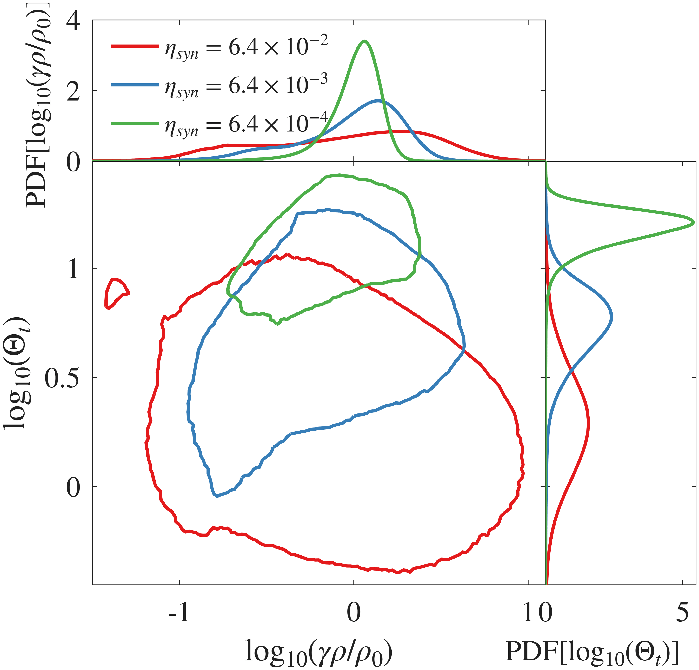 Fig12 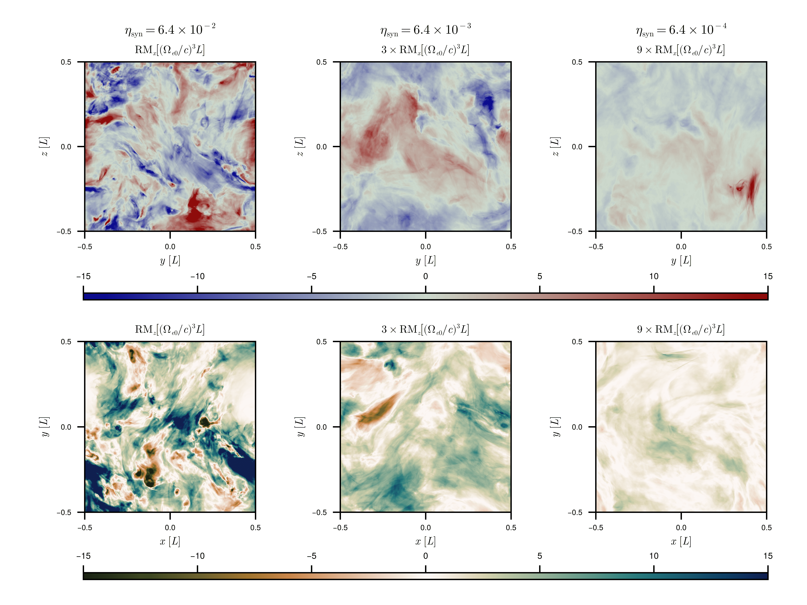 Fig07 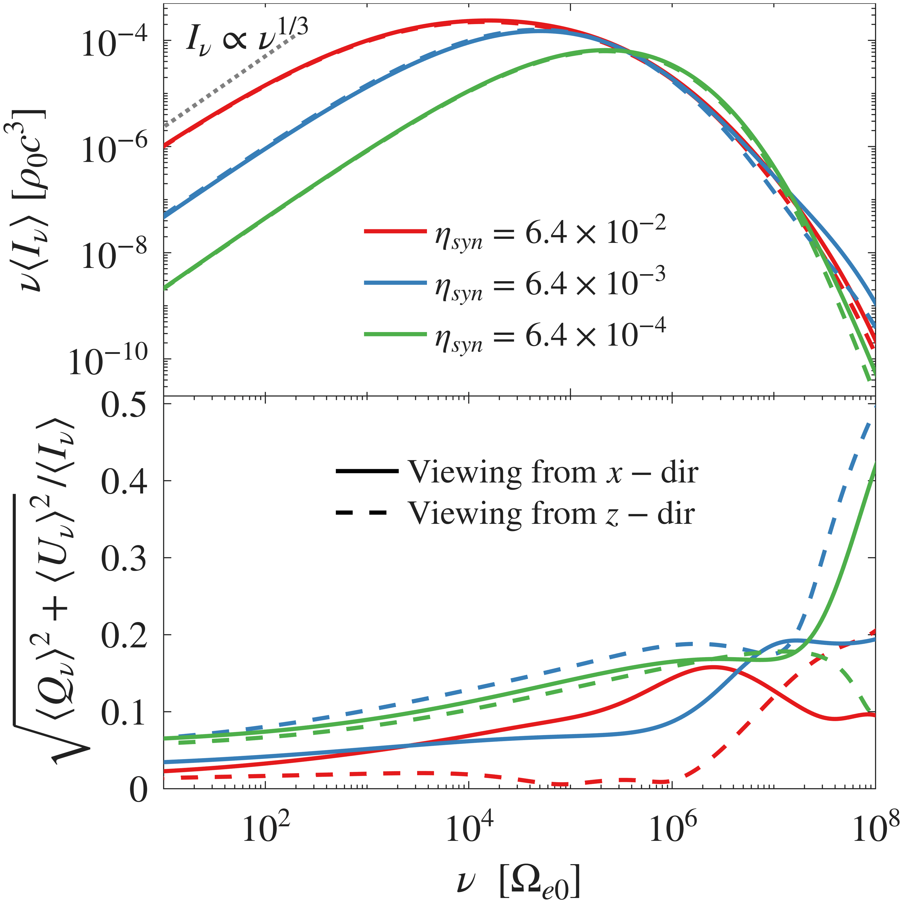 Fig02 Fig08 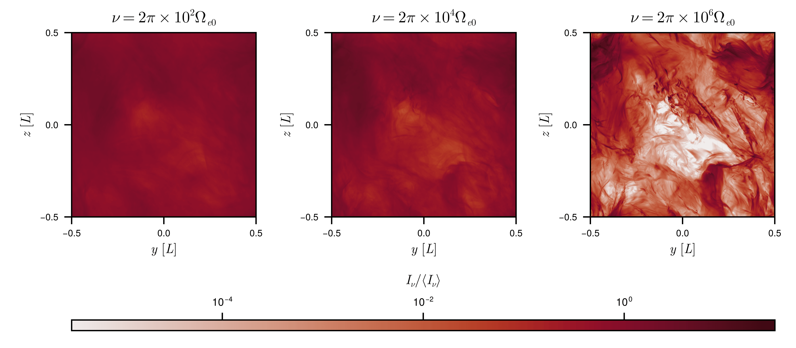 Fig01 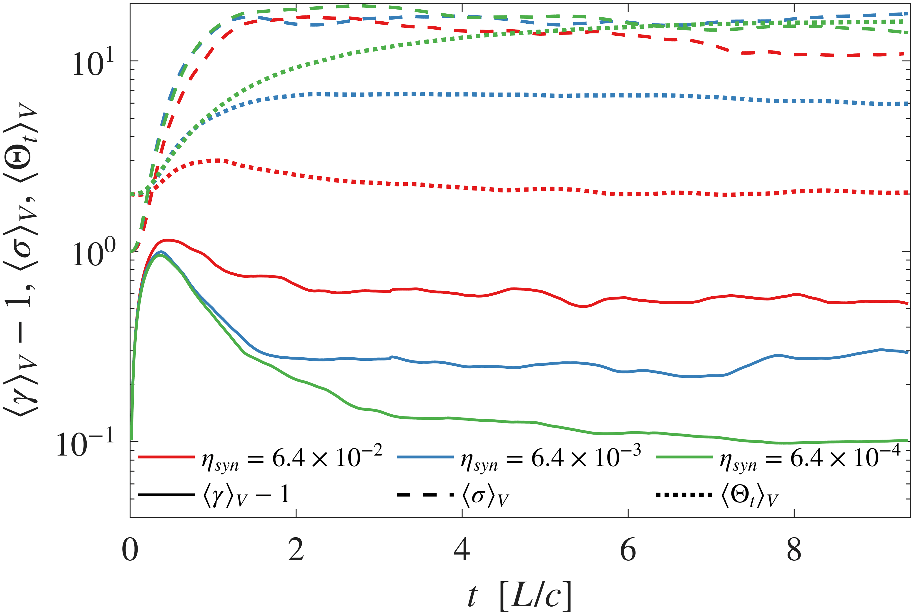 这项工作与相对论磁流体湍流、辐射冷却湍流、同步辐射偏振后处理和法拉第旋转研究相连。可检索关键词包括“relativistic MHD turbulence synchrotron cooling”、“radiative turbulence synchrotron polarization”、“relativistic Faraday rotation hot plasma”、“turbulent Faraday screen fast radio bursts”。同类研究常关注无冷却相对论湍流中的能量级联和粒子加速，或用粒子-in-cell模拟研究磁重联、湍流加速与非热电子谱；本文的差异在于强调同步冷却对流体相结构和传播诊断的反馈。 与观测联系最紧的是快速射电暴重复源的高且可变旋转量、脉冲星风云的同步辐射和偏振结构、以及耀变体喷流的多频偏振变率。需要注意，本文没有声称拟合某个命名事件或单个源，而是给出同类源环境中的物理机制。检索时可把“FRB 121102 rotation measure variability”、“Crab Nebula synchrotron polarization”、“blazar optical polarization turbulence”、“PWN synchrotron turbulence”作为同源或同类观测背景。 可能存在张力的方向包括：有些快速射电暴旋转量模型把传播屏放在较远的恒星形成区或超新星遗迹中，而不是近源强辐射湍流区；有些耀变体偏振模型强调几何摆动、螺旋磁场或冲击压缩，而非冷却调控的多相湍流。本文提供的机制并不排斥这些解释，但要求在解释多频偏振和旋转量时同时考虑冷却、温度修正和湍流间歇性。 同一事件 / 同类源线索： 相似工作： 基础理论 / 方法工作： 相反观点 / 张力线索： 中文题目：两个强散射快速射电暴：散射展宽来自源周介质的证据 做了什么：这篇论文报告了 ASKAP 新后端 CRACO 调试期间发现的两个强散射快速射电暴 FRB 240210D 和 FRB 240312D。两者按 \(1\\,\mathrm{GHz}\) 缩放的散射时间分别为 \(34\pm6\\,\mathrm{ms}\) 和 \(300\pm48\\,\mathrm{ms}\)，远长于多数 FRB。关键对象 FRB 240312D 位于红移 \(z\simeq0.05\) 的近邻面向盘星系中，且靠近旋臂恒星形成区；作者利用银河系闪烁屏约束散射屏到源的距离约为 \(10\\,\mathrm{pc}\)，排除了宿主星系中心、背景星系和中间宇宙大尺度结构等偶然视线解释，指向源周介质。论文认为脉冲星风云中的折射散射是目前最合理的解释，但几何取向需要一定微调。作者还估计持续时间 \(55.2\\,\mathrm{ms}\) 到 \(1\\,\mathrm{s}\)、流量阈值 \(9\\,\mathrm{Jy\\,ms}\) 以上的强散射长时标 FRB 全天率为 \(R_{\mathrm{tot}}=210^{+460}_{-180}\\,\mathrm{sky}^{-1}\\,\mathrm{day}^{-1}\)，提示强散射并非罕见偶然透镜视线，而可能与 FRB 源环境有因果联系。 为什么重要：FRB 的散射展宽通常被用来探测视线上的电离湍流，但散射屏究竟在银河系、星系际介质、宿主星系盘、宿主中心还是源周环境，一直难以区分。本文的重要性在于 FRB 240312D 的低红移、宿主定位、星系面向几何和闪烁约束组合起来，给出了少见的“排除法”证据链：强散射最可能发生在离 FRB 源很近的介质中。这会改变我们对强散射 FRB 的理解——它们不只是被某条倒霉视线模糊了，而可能在告诉我们 FRB 产生于年轻、高磁化、强反馈的局部环境。 理论 / 观测 / 仪器方法价值：对观测而言，本文展示了 CRACO 这类高时间分辨率实时后端对长尾、低峰值 FRB 的搜索能力，并提醒搜索管线不能只优化窄脉冲。对理论而言，它把散射时间、闪烁带宽、宿主位置、积分场光谱和事件率放在同一约束框架中，迫使源周散射模型面对数量级和几何可行性。对方法而言，论文提供了一个用多尺度散射诊断定位散射屏的案例：毫秒到百毫秒散射尾、窄带闪烁、宿主星系环境和 FRB 发生率可以互相校验。 为什么应该关注：如果你关心 FRB 起源，这篇文章值得看，因为它把“局部环境”从一个宽泛说法推进到可检验的散射屏距离和物理场景。如果你关心星际介质或湍流，它给出的是极端散射测量，而不是普通色散量。若你做巡天和瞬变搜索，它直接影响长时标 FRB 的完备性、流量阈值和事件率估计。若你研究年轻磁星、脉冲星风云或超新星遗迹，它提供了一个可能用 FRB 作为背光源诊断源周等离子体结构的近邻样本。 科学问题：快速射电暴的脉冲展宽来自多径传播。一个短脉冲穿过非均匀电离介质后，不同路径的传播时间不同，观测上表现为近似指数型散射尾。问题是，强散射到底发生在哪里。银河系盘和晕、星系际介质、宿主星系盘、宿主星系中心、偶然前景星系、以及 FRB 源周的脉冲星风云或超新星遗迹都可能贡献散射。以往很多强散射 FRB 缺乏精确宿主环境和独立散射屏距离约束，因此只能说“宿主或局部环境可能重要”。本文针对两个新发现的强散射 FRB，尤其是 FRB 240312D，试图把这个说法变成更硬的定位论证。 作者怎么做：作者利用 ASKAP 的 CRACO 后端在调试期间发现 FRB 240210D 和 FRB 240312D，并对动态谱进行色散量、到达时间、散射时间和频率依赖拟合。两个事件在 \(1\\,\mathrm{GHz}\) 参考频率下的散射时间分别达到 \(34\pm6\\,\mathrm{ms}\) 和 \(300\pm48\\,\mathrm{ms}\)。其中 FRB 240312D 被定位到一个低红移面向盘星系，红移约为 \(z=0.05\)，位置接近旋臂上的恒星形成区。作者进一步利用银河系屏导致的闪烁信息反推角展宽与散射几何，从而约束主散射屏离 FRB 源只有约 \(10\\,\mathrm{pc}\) 的量级。 关键结果：FRB 240312D 是本文的核心。它的宿主不是一个边缘朝向的高倾角盘星系，因此经过宿主盘长路径造成强散射的解释不自然；FRB 位置也不在宿主星系中心，活动星系核或核区高密度介质难以解释；低红移和视线环境使背景星系或介入星系的偶然强散射解释也受到限制。闪烁约束把散射屏推到源附近，因而作者认为源周介质是最优解释。候选模型中，脉冲星风云或类似年轻致密源周等离子体可以提供强电子密度起伏和折射结构，但需要特定取向或局部结构才能同时满足散射时间、闪烁和宿主环境约束。 局限和下一步：论文并没有声称已经唯一确定散射机制。脉冲星风云解释虽然较好，但存在几何微调；超新星遗迹、恒星形成区内致密电离云、年轻磁星周围的非均匀风泡等模型还需要更具体的辐射转移和湍流计算。两个事件的数量也太少，事件率 \(R_{\mathrm{tot}}\) 的不确定度很大。下一步应包括：更长时间监测是否重复爆发、重复爆发的散射时间是否变化、低频和高频宽带观测检验 \(\tau\)-\(\nu\) 标度、VLBI 或更高精度定位、以及更大 CRACO/ASKAP 样本中强散射 FRB 的完备性校正。 本文最重要的证据链从样本选择开始：两个事件均来自 ASKAP 的 CRACO 调试观测，而不是事后专门针对强散射 FRB 的搜索。强散射脉冲峰值低、持续时间长，容易被传统窄脉冲搜索损失灵敏度；因此作者需要在搜索完备性和有效曝光中考虑持续时间范围。他们把事件率限定在持续时间 \(55.2\\,\mathrm{ms}\) 到 \(1\\,\mathrm{s}\)、流量大于 \(9\\,\mathrm{Jy\\,ms}\) 的区间，避免把结论外推到管线不敏感的极端参数区。 事件数只有两个，因此统计部分本质上是小数泊松问题。作者给出的全天率 \(R_{\mathrm{tot}}=210^{+460}_{-180}\\,\mathrm{sky}^{-1}\\,\mathrm{day}^{-1}\) 应理解为宽置信区间估计，而不是精确测量。关键不是中心值本身，而是这个率与较短 FRB 的率在数量级上相容：如果强散射完全来自偶然介入屏，那么如此高的出现率会要求宇宙中有过多强散射截面；更自然的解释是，至少一部分强散射与 FRB 源本身的环境相关。 散射屏距离约束来自宽带动态谱中同时存在的强散射展宽和银河系闪烁。强散射尾给出时间延迟尺度，闪烁带宽和角度信息则对屏幕位置敏感。若散射发生在宿主中心、宿主盘远端或中间星系，几何关系会导致与观测闪烁性质不一致。作者由此排除若干常见替代解释，把屏幕压缩到源周约 \(10\\,\mathrm{pc}\) 的尺度。 稳健性上，需要关注三类系统误差。第一是仪器和管线对宽脉冲的选择函数：若宽脉冲识别效率估计偏差，率估计会变。第二是散射模型假设：指数尾、单屏几何和频率标度若过于简化，屏幕距离可能偏移。第三是宿主关联和局部环境解释：尽管低红移定位降低了误关联概率，但星形成区、脉冲星风云和超新星遗迹之间仍有模型退化。论文的强点在于这些独立证据方向一致，弱点在于样本量和源周模型还不够唯一。 快速射电暴是毫秒量级射电脉冲，具有超过银河系贡献的色散量，通常来自宇宙学距离。传播过程中，冷等离子体使低频信号晚到，湍流电子密度结构则使信号发生多径传播并产生散射展宽。色散量测量的是视线电子柱密度，而散射时间对小尺度电子密度起伏和几何位置非常敏感，因此二者不一定正相关。 历史上，银河系脉冲星研究已经建立了色散、散射和闪烁之间的基本框架。脉冲星的强散射通常来自银河系盘内湍流，但 FRB 视线跨越银河系、星系际介质和宿主星系，散射屏位置更复杂。许多 FRB 的散射时间远大于简单星系际介质模型预期，说明宿主或源周介质可能贡献很大，但过去缺少足够精确定位来区分这些位置。 这个问题现在值得重新看，是因为 ASKAP、CHIME、DSA、MeerKAT 等设备正在提供更大样本和更好定位。尤其是 ASKAP/CRACO 这类实时相干或高时间分辨后端，使得宽脉冲、强散射事件不再只是搜索管线的副产品，而可以被系统统计。低红移精确定位事件尤其宝贵，因为宿主结构可分辨，前景介入概率低，能把传播效应与局部环境联系起来。 该领域一个常见误区是把大散射时间直接等同于大色散量或远距离。实际上，散射由小尺度相位扰动主导，薄屏位置在源端、中间或观测端会给出不同的时间延迟放大因子。另一个误区是认为强散射一定来自宿主星系盘的长路径；对于面向盘星系，视线穿过盘的路径并不长，若 FRB 位于普通旋臂区域，强散射反而更可能指向局部致密结构。还有一个误区是把散射尾全都归因于仪器时间分辨率或去色散误差；本文的分析重点就在于把仪器响应、色散残差和真实指数尾区分开。 基本物理图像是：FRB 发出的窄脉冲穿过含有电子密度起伏的冷等离子体。平均电子柱密度导致频率相关群延迟，即色散；小尺度电子密度不均匀导致波前相位起伏，信号沿多条略不同路径到达，形成散射尾。若散射可近似为单个薄屏，观测脉冲常被写成本征脉冲、色散残差、仪器响应和一侧指数散射函数的卷积。 本文使用的关键量包括色散量 \(\mathrm{DM}\)、散射时间 \(\tau\)、参考频率 \(\nu_0=1\\,\mathrm{GHz}\)、频率标度指数、流量 \(\mathcal{F}\)、信噪比和事件率 \(R\)。强散射 FRB 的难点在于 \(\tau\) 增大会拉低峰值信噪比，并可能让事件被误判为射频干扰或低显著性宽脉冲。因此论文中的率估计必须和搜索选择函数绑定。 薄屏散射的几何敏感性很强。给定散射角 \(\theta\)，时间延迟大致与屏幕到源和观测者的距离组合有关。若屏幕靠近源，少量角散射也可产生可观延迟；若屏幕在银河系附近，它还会产生可观的闪烁调制。本文利用银河系屏造成的闪烁，结合强散射尾，反推出主强散射结构不能位于宿主中心、背景星系或介入结构，而应在 FRB 源附近。 观测方法上，动态谱是核心数据产品：横轴为时间，纵轴为频率，信号在未去色散时呈冷等离子体扫频曲线，去色散后仍可能显示低频更宽、高频更窄的散射尾。拟合时需要同时考虑通道带宽导致的色散涂抹、采样时间、频率相关增益、射电干扰掩膜和噪声相关性。散射时间与本征宽度、色散量微调、频谱结构之间存在退化，尤其在低信噪比和窄带观测时更严重。 第一步是冷等离子体色散。群延迟相对无限高频的近似为 其中 \(K_{\mathrm{DM}}\) 是色散常数，\(\mathrm{DM}=\int n_e\\,dl\) 为电子柱密度，\(\nu\) 为观测频率。这个式子让读者理解为什么 FRB 首先通过去色散搜索被发现，也说明 \(\mathrm{DM}\) 主要测柱密度而非小尺度湍流。 第二步定义薄屏散射造成的几何延迟。若散射屏距观测者为 \(D_l\)，源距观测者为 \(D_s\)，屏到源距离为 \(D_{ls}\)，典型散射角为 \(\theta\)，则 在适当的角直径距离定义下成立。这里 \(c\) 是光速。该式说明散射时间不仅取决于湍流强度，也取决于屏幕几何位置。 第三步把频率依赖写成经验标度： 其中 \(\tau_0\) 是参考频率 \(\nu_0\) 下的散射时间，\(\alpha_s\) 对 Kolmogorov 型湍流常接近 \(4\) 到 \(4.4\)，但真实 FRB 可偏离。本文报告的 \(34\pm6\\,\mathrm{ms}\) 和 \(300\pm48\\,\mathrm{ms}\) 就是缩放到 \(1\\,\mathrm{GHz}\) 后的 \(\tau_0\)。 第四步写出散射脉冲轮廓。若本征脉冲为 \(I_0(t)\)，单屏响应为 其中 \(H(t)\) 是阶跃函数，则观测轮廓可写为 这里 \(R_{\mathrm{inst}}\) 是仪器响应，\(n\) 是噪声。这个卷积形式对应动态谱拟合的核心。 第五步考虑通道内色散涂抹。频率通道宽度为 \(\Delta\nu\) 时，残余展宽近似为 若不将 \(\Delta t_{\mathrm{chan}}\) 与采样时间一起纳入 \(R_{\mathrm{inst}}\)，就可能把仪器展宽误判为物理散射。 第六步是流量和信噪比的选择效应。对宽度为 \(W\) 的脉冲，简化辐射计方程给出 其中 \(\mathcal{F}\) 为流量，\(\mathrm{SEFD}\) 为系统等效流量密度，\(n_p\) 为偏振数，\(\Delta\nu\) 为带宽。强散射增大 \(W\)，因此在相同 \(\mathcal{F}\) 下会降低峰值显著性。 第七步是事件率估计。若有效曝光为 \(\mathcal{E}\)，在某流量和持续时间范围内探测到 \(N\) 个事件，则 泊松似然为 由此可得到小样本下很不对称的置信区间。本文 \(N=2\) 因而自然给出较宽的 \(R_{\mathrm{tot}}\) 不确定度。 第八步连接到散射屏定位。闪烁带宽 \(\Delta\nu_d\) 与散射时间量级满足 其中 \(C_1\) 是与散射几何和谱形有关的量级为一的常数。若观测到的闪烁性质可归因于银河系屏，而长散射尾又要求近源强屏，则两类传播诊断合在一起可限制主散射屏距离源的尺度。 这类分析首先拟合动态谱中的 \(\mathrm{DM}\)、到达时刻、频谱包络、本征宽度和散射时间。常用模型是频率相关指数尾与高斯或更一般本征脉冲的卷积，再叠加仪器时间分辨率、通道涂抹和噪声。拟合量之间并不独立：稍微错误的 \(\mathrm{DM}\) 会在频率方向留下斜残差，可能与散射尾的低频展宽混淆。 参数估计可采用最大似然、贝叶斯后验采样或网格搜索。对动态谱像素，若噪声近似高斯，可用 \(\chi^2\) 或高斯似然；若搜索阶段只用信噪比统计，则需要通过注入恢复模拟估计选择函数。强散射 FRB 的拟合尤其需要检查残差是否在脉冲后沿系统性偏正或偏负，因为这会暴露单指数散射模型不充分、多个子脉冲叠加或基线处理错误。 宿主和散射屏模型拟合则更偏几何约束。输入包括 FRB 定位、宿主红移、宿主倾角、FRB 相对星系中心和旋臂的位置、发射线诊断得到的局部恒星形成性质，以及闪烁推断的屏幕信息。不同散射位置会预测不同角展宽、时间延迟和闪烁调制；模型比较的重点不是某个单参数最佳值，而是哪些位置类别与所有观测同时相容。 系统误差主要有四类。第一，射电干扰掩膜和带通校准会影响宽脉冲的流量与谱形。第二，搜索完备性随 \(W\)、\(\mathcal{F}\) 和 \(\mathrm{DM}\) 变化，直接影响事件率。第三，散射频率指数 \(\alpha_s\) 不确定会改变缩放到 \(1\\,\mathrm{GHz}\) 的 \(\tau_0\)。第四，源周模型如脉冲星风云、超新星遗迹壳层或恒星形成区 HII 结构之间有物理退化，需要多频、多历元观测打破。 实际应用上，读者应把本文的拟合结果看成“强散射源周假说”的定量基准。若未来同一源重复爆发，散射时间随时间或频率的变化可以检验屏幕是否在源周运动或演化；若不重复，大样本统计可以检验强散射事件是否偏向恒星形成区、低红移宿主或特定偏移半径。 数据/发现部分应首先看 CRACO 的观测设置、时间和频率分辨率、搜索阈值、候选筛选以及两个 FRB 的动态谱。这里决定了强散射是否真实、流量和宽度是否可靠，也决定了后续事件率的有效曝光。 脉冲建模部分要重点看散射时间的拟合方法。读者应检查作者如何同时处理 \(\mathrm{DM}\)、本征宽度、频率标度、仪器响应和噪声；特别要看 FRB 240312D 的长尾是否由单指数模型充分描述，以及残差是否暗示多个成分。 宿主定位和积分场光谱部分是 FRB 240312D 解释的关键。需要看 FRB 定位误差区域与星系图像、旋臂、恒星形成区和星系中心的关系，以及红移测量和局部发射线性质。本文结论依赖“低红移、面向盘、非核区、恒星形成位置”这些条件同时成立。 散射屏定位和物理解释部分应作为核心讨论阅读。作者比较了银河系、宿主中心、宿主盘、背景或介入结构、以及源周介质几种方案。读者要关注每个方案被排除的观测依据，而不是只看最后偏好的脉冲星风云模型。 事件率部分需要结合选择函数读。两个事件给出的率不确定度很大，但若强散射长时标事件率与普通短 FRB 相近，就对偶然强散射视线模型构成压力。这里应看作者采用的持续时间和流量范围，以及对宽脉冲搜索效率的处理。 两个 FRB 的动态谱和去色散时间序列：看低频是否更宽、指数尾是否清楚、射频干扰掩膜是否可能影响后沿。 散射模型拟合和残差图：看单指数散射尾是否留下结构性残差，比较无散射模型、有散射模型和不同频率指数模型的优劣。 FRB 240312D 的宿主星系图像与定位误差椭圆：看 FRB 是否确实落在旋臂或恒星形成区，而非星系中心或模糊外延区域。 积分场光谱或发射线诊断图：看局部 \(\mathrm{H}\alpha\)、金属丰度、星形成率或 BPT 分类是否支持普通恒星形成环境。 散射屏几何约束图：看不同屏幕位置对散射时间和闪烁观测的预测区域，尤其是源周 \(\sim10\\,\mathrm{pc}\) 约束来自哪里。 事件率与持续时间/流量阈值图或表：看两个事件如何转换为 \(R_{\mathrm{tot}}\)，以及置信区间是否由泊松小数统计主导。 与已知 FRB 散射时间分布的比较图：看这两个事件在 \(\tau\)-\(\mathrm{DM}\)、\(\tau\)-红移或 \(\tau\)-流量平面上是否真属极端群体。 图 1：通常应是发现图或动态谱。横轴为到达时间，纵轴为频率，颜色表示强度。未去色散数据若出现 (\ 图 2：应关注脉冲轮廓拟合。横轴为相对时间，纵轴为归一化强度或流量密度，数据点叠加最佳拟合模型线。若有多个频段分面，高频应更窄、低频应更宽。关键是模型线在后沿是否贴合数据；若残差在尾部系统偏离，单屏指数模型可能过于简单。 图 3：宿主星系和定位图。坐标轴一般为天球坐标或相对角秒，背景为光学/近红外图像，叠加 FRB 定位误差椭圆和星系中心。主要结论是 FRB 240312D 位于低红移面向螺旋星系的旋臂恒星形成区域附近，而不是核区。读图时要注意误差椭圆大小、星系投影倾角以及是否存在可能的背景源。 图 4：积分场光谱诊断图或空间分布图。可能展示 \(\mathrm{H}\alpha\) 通量、速度场、星形成率面密度、金属丰度或 BPT 分类。坐标轴取决于诊断类型，例如 BPT 图常为 \(\log([\mathrm{OIII}]/\mathrm{H}\beta)\) 对 \(\log([\mathrm{NII}]/\mathrm{H}\alpha)\)。关键是确认 FRB 位置对应恒星形成而非 AGN 电离。 图 5：散射屏几何约束图。横轴可能是屏幕相对源或观测者距离，纵轴可能是散射角、散射时间或闪烁带宽，曲线代表不同屏幕假设。应看哪些区域被银河系闪烁、宿主几何和观测散射时间共同排除，剩下的是否集中在源周 \(\sim10\\,\mathrm{pc}\)。陷阱是把数量级约束读成精确距离测量。 图 6：事件率图或与文献样本比较图。横轴可能为流量阈值、持续时间或散射时间，纵轴为全天率或累计率。两个事件对应的泊松误差很大，置信区间应明显不对称。读者应关注中心值是否与普通 FRB 率相容，以及作者如何定义持续时间 \(55.2\\,\mathrm{ms}\) 到 \(1\\,\mathrm{s}\) 的适用区间。 （未提供 verified figure；为避免编造图片链接，本节只在能确认官方图片 URL 或成功提取论文原图时嵌入图片。） 这篇工作属于强散射 FRB 和 FRB 宿主环境研究的交叉。相近方向包括 CHIME/FRB 对散射时间分布的大样本统计、ASKAP 对精确定位 FRB 宿主的研究、以及 Macquart 关系中利用 \(\mathrm{DM}\) 追踪宇宙重子分布的工作。本文与这些工作的关系是：它不主要用 \(\mathrm{DM}\) 测宇宙平均介质，而是用极端 \(\tau\) 和闪烁把小尺度湍流定位到源周环境。检索关键词可用 “FRB scattering host galaxy circumsource medium”, “ASKAP CRACO FRB scattering”, “FRB 240312D”, “FRB pulse broadening scintillation screen”。 基础理论上，应联系银河系脉冲星散射、薄屏模型、Kolmogorov 湍流、脉冲星风云和年轻磁星源周环境模型。潜在张力在于：源周脉冲星风云可提供强散射，但同时要避免过大的自由-自由吸收、过大的旋转量或与闪烁几何不一致；宿主盘或介入星系模型更传统，但本文对 FRB 240312D 的面向盘宿主、非核区位置和低红移视线提出了反证。检索关键词可用 “pulsar wind nebula FRB scattering”, “magnetar nebula fast radio burst”, “free-free absorption FRB local environment”。 同一事件 / 同类源线索： 相似工作： 基础理论 / 方法工作： 相反观点 / 张力线索： （未提供） 中文题目：原中子星振荡模的物理本质：按恢复力能量重新分类 做了什么：这篇文章处理一个在核心坍缩超新星引力波星震学中很实际的问题：数值模拟里看到的原中子星振荡频率到底该叫哪一种模，过去不同工作常把同一条频率轨迹标成不同的 \(f\)-、\(p\)- 或 \(g\)-模。作者提出一种自动分类方案，不再主要依赖频率曲线形状或经验命名，而是把每个本征模的恢复力能量分解到压力、浮力等贡献，并结合模函数所在区域来判定其物理来源。他们把方法用于 \(28\) 个非旋转的一维、二维、三维核心坍缩超新星模拟，覆盖不同数值代码、前身星和状态方程，发现系统中至少有与原中子星和停滞激波分别相关的两类 \(f\)-、\(p\)-模，以及来自原中子星核心和近表面两个稳定分层区的两类 \(g\)-模。最重要的结论是：通常占主导的高频引力波发射模是原中子星 \(f\)-模，它与原中子星表面的强密度梯度有关。 为什么重要：核心坍缩超新星的引力波信号如果被探测到，最有信息量的部分很可能是原中子星的准周期振荡。要从频率反推出质量、半径、致密度、状态方程或中微子冷却历史，首先必须知道观测到的是哪一种物理模。本文的重要性在于把“模的名字”从经验标签推进到可复现的物理分类：它回答的是恢复力是什么、模能量在哪里、这条频率轨迹来自原中子星还是激波腔。 理论 / 观测 / 仪器方法价值：对理论而言，这个方案可减少不同团队之间对 \(f\)-、\(p\)-、\(g\)-模命名的混乱，使未来的普适关系和模式识别建立在同一物理准则上。对观测而言，它直接服务于第三代地面引力波探测器或高信噪比银河系超新星事件的参数估计。对方法而言，自动分类流程可以嵌入大量数值相对论或牛顿近似超新星模拟，系统扫描前身星、状态方程和输运处理对模频率的影响。 为什么应该关注：如果你关心核心坍缩超新星引力波，这篇文章值得看，因为它决定了未来“用频率测原中子星性质”时究竟测的是什么。一个频率峰若被错认为 \(g\)-模而实际是原中子星 \(f\)-模，后续关于浮力、熵梯度、成分梯度或状态方程的解释都会偏离。本文给出的分类框架还提示：高频主峰并不只是一个经验谱线，而是和原中子星表面密度梯度这一相对清晰的结构特征联系在一起。 科学问题：核心坍缩超新星爆发后，新生原中子星被热物质、强中微子冷却层、停滞激波和湍动吸积流包围。这个系统会激发多种非径向振荡，并在几百赫兹到数千赫兹范围内产生引力波。过去许多论文已经从模拟频谱中提取了随时间漂移的频率轨迹，但对这些轨迹的命名并不统一：有的依据频率高低，有的依据与某些经验关系的吻合，有的依据模函数节点数或局部传播区。本文要解决的不是“有没有振荡”，而是“这些振荡的物理恢复力和空间归属是什么”。 作者怎么做：作者提出一种基于恢复力能量的分类方法。对每个本征模，他们不是只看频率，而是计算不同物理项对模能量的贡献，例如压力压缩对应的声学恢复、稳定分层对应的浮力恢复，以及这些贡献主要集中在原中子星内部、表面附近还是激波区域。然后他们把这种诊断应用到 \(28\) 个非旋转核心坍缩模拟，样本包括一维、二维和三维模型，来自两个不同数值代码，并覆盖不同前身星和状态方程。这个设计很关键，因为它检验了分类是否依赖单一代码、维度或微物理选择。 关键结果：他们识别出不止一套传统意义上的 \(f\)-、\(p\)-、\(g\)-模。具体说，系统中有与原中子星本体相关的 \(f\)- 和 \(p\)-模，也有与停滞激波及其下方声学腔相关的 \(f\)- 和 \(p\)-模；\(g\)-模也不是单一族，而是分别来自原中子星核心稳定分层区和原中子星近表面稳定分层区。最值得关注的是，强高频引力波发射通常对应原中子星 \(f\)-模，而不是过去有时被强调的某些表面 \(g\)-模；这个 \(f\)-模与原中子星表面的强密度梯度紧密相关。 局限和下一步：本文样本是非旋转模型，因此尚未处理快速旋转带来的 \(m\)-模分裂、惯性模、科里奥利力恢复以及非轴对称不稳定性。磁场也不是本文分类的中心，强磁场会引入阿尔芬波和磁声耦合，可能改变恢复力能量分解。另一个限制是，真实探测数据不会直接给出本征函数和恢复力能量，只能给出噪声中的时频结构；因此下一步需要把这种理论分类转化为可观测的模板、频率演化先验和贝叶斯模型选择框架。 本文的证据链从模拟样本开始。作者没有只挑一个“漂亮”的二维模型，而是汇集 \(28\) 个非旋转核心坍缩超新星模拟，包含一维、二维和三维计算，并使用两个不同代码、多个前身星和状态方程。这样做的意义是把模分类从个例现象提升到跨模型诊断：如果某条频率轨迹只在一个代码或一个维度中成立，它很难成为未来观测解释的稳健基准。 数据处理的核心不是直接在引力波谱图上手工描线，而是对背景结构做本征模分析，并计算每个模的恢复力能量成分与空间分布。作者关心的量包括模频率、模函数径向分布、压力项贡献、浮力项贡献，以及这些贡献是否集中于原中子星核心、原中子星表面或激波附近。由此，每个频率分支都被赋予物理标签，而不仅是按频率排序得到的第 \(n\) 条线。 最重要的判据是能量占比和位置占比。若模的恢复能量主要来自压力压缩，并且模能量位于原中子星致密区域，便倾向于归为原中子星 \(p\)- 或 \(f\)-族；若恢复能量主要来自稳定分层的浮力项，则归为 \(g\)-族；若模函数和声学腔明显与停滞激波及后激波区域相关，则不能简单称作原中子星本体模。这个过程使作者能够解释为什么过去同一频率分支会被不同团队命名为不同模式：因为频率相近并不保证恢复力相同。 本文最强的结论由跨样本一致性支撑：高频主发射分支在不同模拟中都更自然地对应原中子星 \(f\)-模，并且其物理来源是原中子星表面的强密度梯度。相关图表应当展示频率轨迹、模函数空间分布、恢复力能量分解和不同模型间的分类一致性。真正要看的不是某一条线是否“看起来像”传统 \(g\)-模，而是压力项、浮力项和区域归属是否同时支持作者的标签。 统计意义在本文中不是典型观测论文里的 \(5\sigma\) 事件数显著性，而是模型分类的一致性和自动化稳健性。稳健性主要来自样本多样性、两个代码的交叉、不同维度模型的一致结果，以及分类准则对多族模式的区分能力。主要系统误差包括背景模型的准静态近似、不同模拟中微物理和重力处理差异、有限分辨率对梯度和本征函数的影响，以及非旋转假设对真实事件适用性的限制。 研究对象是核心坍缩超新星中的新生原中子星。铁核坍缩并反弹后，中心形成一个热的、富含轻子、半径几十公里量级的致密天体；它还不是冷中子星，因为温度、熵、电子轻子数和中微子输运仍在剧烈演化。原中子星外侧通常有停滞激波、增益区、下落物质和湍流对流，这些结构共同形成一个非平衡、非球对称、强时变的振荡系统。 历史问题来自核心坍缩超新星引力波频谱的解释。二维和三维模拟普遍显示，爆后数十到数百毫秒出现频率随时间升高的高频带，通常被联系到原中子星收缩和致密度增加。不同作者曾把这条带解释为表面 \(g\)-模、原中子星 \(f\)-模、声学模或经验普适关系中的某个分支。问题不只是命名差异：如果恢复力不同，那么频率对质量、半径、熵梯度、成分梯度和状态方程的依赖也不同。 观测背景是，当前第二代地面引力波探测器对银河系核心坍缩事件可能有机会看到时频结构，但事件率很低；第三代探测器将显著提高探测距离和信噪比。与此同时，数值模拟数量和维度都在增加，状态方程和中微子输运也更复杂。现在重新审视模分类，是因为未来一旦有候选信号，社区需要一套能从模拟库映射到观测频率的统一语言。 该领域常见误区之一是把 \(f\)-、\(p\)-、\(g\)-模当作只由频率高低决定的标签。实际上，\(p\)-模主要由压力作恢复力，\(g\)-模主要由浮力作恢复力，\(f\)-模是无径向节点或低阶的基本模，但在复杂背景中还要看模能量分布和边界条件。另一个误区是把原中子星当作孤立冷星处理；在核心坍缩环境中，外部激波腔、吸积流和中微子加热区会产生自己的声学和浮力结构，不能简单忽略。 基本物理图像可以从非径向扰动开始。一个自引力流体球受到扰动后，若流体元被压缩，压力梯度会提供恢复力；若流体元在稳定分层中被上下移动，因密度与背景不匹配会产生浮力恢复；若系统有旋转，还会有科里奥利恢复，但本文重点是非旋转模型。因此传统上把声学主导的模称为 \(p\)-模，把浮力主导的模称为 \(g\)-模，把最低阶基本振荡称为 \(f\)-模。 原中子星和冷中子星的差别在于背景不是简单的冷、β 平衡、单参数状态方程。原中子星有强温度梯度、熵梯度和电子轻子数梯度，中微子仍部分俘获，表面附近密度和声速变化很陡。稳定分层由熵和成分梯度共同决定，因此浮力频率不是冷星中单纯由密度梯度给出的量。本文识别出核心和近表面两个稳定分层区，正是因为这些梯度在不同半径范围内改变了浮力恢复。 观测或模拟中的关键量是频率随爆后时间的演化、模函数的空间形状以及恢复力能量的分解。频率轨迹本身会受到原中子星收缩、质量增长和外层激波位置变化影响；模函数则告诉我们振荡能量在哪里。本文的方法强调：一个模是否属于原中子星，不能只看它的频率是否随原中子星致密度变化，还要看位移、压力扰动和浮力贡献是否主要在原中子星区域。 常见退化包括 \(f\)-模与表面 \(g\)-模在频率演化上的相似性、激波腔声学模与原中子星低阶 \(p\)-模的重叠，以及不同状态方程通过改变半径和声速产生的相似频率漂移。系统误差则包括背景平均方式、维度降阶、一维本征分析对多维湍流背景的代表性、数值分辨率对密度梯度的影响，以及引力势近似对高频模的偏移。本文试图用恢复力能量而非单一频率来缓解这些退化。 第一步，把非旋转自引力流体的线性扰动写成位移场 \(\boldsymbol{\xi}\)。在绝热、小振幅近似下，扰动满足形式上的本征值问题： 其中 \(\rho\) 是背景密度，\(\omega\) 是角频率，\(\mathcal{L}\) 包含压力梯度、重力和浮力相关项。这个方程说明模分类首先是一个本征函数问题，而不只是功率谱峰值问题。 第二步，用质量加权的动能定义模归一化： 这里 \(dV\) 是体积元。若不同模用相同归一化比较，\(E_{\rm kin}\) 可以帮助判断模能量主要集中在哪个半径区间，例如原中子星核心、表面或后激波区。 第三步，声学恢复力来自压缩导致的压力扰动。用绝热指数 \(\Gamma_1\) 和压强 \(P\) 可写出近似声学势能： 若某个模的 \(E_{\rm p}\) 占主导，它更接近压力模或基本声学模。这里 \(\nabla\cdot\boldsymbol{\xi}\) 衡量流体元压缩程度。 第四步，浮力恢复由 Brunt-Väisälä 频率 \(N\) 表征。在简化球对称背景中可写为： 其中 \(g\) 是局部重力加速度，\(r\) 是半径。若 \(N^2>0\)，该区域对径向位移稳定，能支持 \(g\)-模；若 \(N^2<0\)，则对应对流不稳定区，不支持普通传播意义上的 \(g\)-模。 第五步，浮力相关的势能可近似写成： 其中 \(\xi_r\) 是径向位移分量。这个表达式直接对应本文思想：如果某个本征模的恢复力能量主要由 \(E_{\rm g}\) 提供，并且积分贡献集中在某个稳定分层区，就应归入相应区域的 \(g\)-模族。 第六步，声学传播的局部色散关系可近似写为： 其中 \(k_r\) 是径向波数，\(k_h^2=l(l+1)/r^2\) 是水平波数，\(c_s\) 是声速，\(l\) 是球谐阶数。声学模倾向于在 \(\omega\) 高于相应截止条件的区域传播，因此停滞激波与原中子星表面之间的声学腔也可能产生自己的 \(p\)-类模。 第七步，低频内重力波的局部传播条件可概括为： 其中 \(L_l^2=l(l+1)c_s^2/r^2\) 是 Lamb 频率。这个条件解释了为什么 \(g\)-模必须绑定到稳定分层区：没有合适的 \(N^2>0\) 区域，就没有对应的浮力传播腔。 第八步，为了自动分类，可定义某个区域 \(R\) 和某类恢复力 \(X\) 的能量占比： 其中 \(e_X(r)\) 是对应恢复力能量密度。本文的分类精神就是比较 \(\eta_{\rm p}\) 和 \(\eta_{\rm g}\)，并判断最大贡献来自原中子星核心、表面还是激波区域。 第九步，若要连接到引力波观测，模拟中的时变质量四极矩给出应变尺度： 其中 \(D\) 是源距离，\(Q_{ij}^{\rm TT}\) 是横横规范下的四极矩。某个模若在 \(Q_{ij}\) 中有大振幅，并且频率落在探测器敏感带内，就会成为时频图上的主发射分支。 第十步，观测检验通常要比较数据 \(d\) 与含模频率轨迹的模型 \(h(\theta)\)。高斯噪声下似然可写为： 其中内积由探测器噪声功率谱加权。本文虽主要是理论分类，但它为未来 \(h(\theta)\) 中应包含哪一族模、频率如何随原中子星性质变化提供了物理先验。 本文本身更接近本征模分类和模拟诊断，而不是传统意义上用观测数据拟合参数的论文。但它背后的拟合问题很清楚：未来若探测到核心坍缩超新星引力波，需要在时频图中拟合一条或多条频率轨迹，并把它们映射到原中子星质量、半径、致密度、状态方程和爆后时间演化。若模标签错了，拟合出的物理量会系统偏差。 在模拟端，常见做法是把每个时间切片的背景结构近似为准静态，然后求本征频率和本征函数，再与引力波谱图中的功率峰对齐。拟合量包括模频率 \(f=\omega/(2\pi)\)、频率漂移率、模能量空间分布、恢复力能量占比，以及与原中子星平均密度或表面重力相关的组合量。本文的自动分类可看作给这些拟合量加入物理标签和离散模型类别。 似然或后验层面，未来可把不同模族作为模型假设 \(M_i\)，比较 \(p(d|M_i)\) 或贝叶斯因子。每个模型下的参数可以包括爆后时间、源距离、方向角、模振幅、阻尼时间和频率演化参数。本文对模型选择的贡献在于缩小候选模型空间：高频主峰优先用原中子星 \(f\)-模解释，而不是在多个经验标签之间任意切换。 主要退化来自频率相似性。原中子星更致密会升高 \(f\)-模频率，状态方程变硬或变软也会改变半径和声速；中微子输运改变熵和成分梯度，从而影响 \(g\)-模；激波半径变化会改变外部声学腔。单独一条频率轨迹可能无法区分这些效应，因此需要联合模族、频率漂移、振幅演化、爆发时间、中微子信号和可能的电磁约束。 模型失败的场景也值得注意。快速旋转会使非旋转本征模分裂，并引入惯性模；强磁场会使恢复力能量分解中出现磁张力项；三维湍流会使谱峰宽化、间歇出现，甚至让本征模近似变差。因此本文分类应被视作非旋转、弱磁或普通磁场核心坍缩模型的基准框架，而不是所有极端超新星和磁星形成事件的最终答案。 数据和模拟样本部分应首先阅读。重点看 \(28\) 个模型如何覆盖一维、二维、三维，不同代码、前身星和状态方程分别是什么。读者需要判断样本是否足够代表普通非旋转核心坍缩超新星，以及哪些物理过程没有覆盖，例如快速旋转、强磁场或完整广义相对论输运。 方法部分是全文核心。应仔细看作者如何从背景模型建立本征值问题，如何定义原中子星区域、激波区域、核心稳定层和表面稳定层，以及如何计算压力、浮力等恢复力能量。这里决定了分类是否真正“物理化”，也决定了自动程序是否会在边界模或混合模上出错。 结果部分要重点追踪不同模族的识别。读者应看作者如何区分原中子星 \(f\)-、\(p\)-模与激波相关 \(f\)-、\(p\)-模，以及如何把 \(g\)-模拆成核心族和表面族。尤其要检查高频主发射模被归为原中子星 \(f\)-模的证据：模函数位置、能量分解、与引力波谱峰的对应是否一致。 讨论部分应关注与文献命名的差异。作者很可能会解释为什么过去某些被称作 \(g\)-模的分支在他们的恢复力诊断下更接近 \(f\)-模。这里不是语义争论，而是未来参数估计中频率标定关系会采用哪一种物理解释。 附录或稳健性检验如果存在，应检查分类算法对数值分辨率、区域边界、背景平均、不同维度和不同代码的敏感性。自动化方法的价值在于批量应用；若分类对人为阈值高度敏感，其推广性就会打折。 模拟样本和背景结构图：看不同模型的原中子星半径、激波半径、密度梯度、熵或轻子数剖面随时间如何演化，特别是稳定分层区在哪里。 频率随爆后时间的轨迹图：看本征频率曲线与引力波谱图中的高功率带是否对齐，高频主带是否被稳定标为原中子星 \(f\)-模。 模函数径向分布图：看位移、压力扰动或密度扰动峰值位于原中子星核心、表面还是激波附近，这是判断“同频不同源”的关键。 恢复力能量分解图：看压力项和浮力项的相对贡献，尤其要检查被命名为 \(g\)-模的分支是否确实由 \(N^2\) 相关项主导。 区域能量占比或自动分类矩阵：看分类是否在 \(28\) 个模型中一致，是否存在混合模、过渡模或标签跳变。 与已有命名或经验关系的对比表：看本文标签与文献中常用标签的差异，以及这种差异是否影响频率—原中子星性质关系。 稳健性诊断图：看改变状态方程、前身星、维度或代码后，高频主模身份是否仍然不变。 图 1：通常应是模拟背景或样本概览。横轴可能是半径或爆后时间，纵轴可能是密度、声速、熵、电子轻子数、Brunt-Väisälä 频率或特征半径。读图时要找两个稳定分层区：原中子星核心和近表面。如果图中只显示频率而没有背景梯度，就无法独立判断 \(g\)-模来源。 图 2：应重点看时频图或本征频率轨迹。横轴一般是爆后时间，纵轴是频率，颜色或灰度表示引力波功率，叠加线表示本征模。关键结论是高频强发射带与原中子星 \(f\)-模对齐。陷阱是不要把曲线的相近频率直接等同于同一物理模，必须结合后续能量分解图。 图 3：应是模函数或能量密度的径向剖面。横轴为半径，纵轴为归一化位移、压力扰动、密度扰动或能量密度，不同颜色代表不同模族。读者要看峰值是否在原中子星表面强密度梯度处、核心稳定层内，还是后激波声学腔内。若某条曲线跨多个区域，说明它可能是混合模，分类置信度应更谨慎。 图 4：应是恢复力能量分解。横轴可能是模式编号、频率或时间，纵轴是能量占比，柱状或堆叠颜色代表压力、浮力及其他贡献。判断 \(p\)-模和 \(g\)-模的关键就在这里：\(p\)-模应由压力压缩项主导，\(g\)-模应由浮力项主导。读图陷阱是能量归一化和区域积分边界会影响占比。 图 5：应是不同模拟之间的分类一致性或频率族汇总。横轴可能是时间、模型编号或原中子星性质，纵轴为频率，符号形状代表模族。重点看 \(28\) 个模型中同一物理族是否形成连续、可解释的趋势。若某些模型标签频繁跳变，要回到方法部分检查阈值和边界定义。 图 6：若有与文献或经验关系的对比图，横轴可能是原中子星平均密度、表面重力或致密度，纵轴为模频率。重点看本文的原中子星 \(f\)-模是否给出更紧的关系，或是否改变过去把高频分支解释为 \(g\)-模时得到的标定。陷阱是相关性好不等于物理分类正确，仍需与恢复力诊断一起读。 （未提供 verified figure；为避免编造图片链接，本节只在能确认官方图片 URL 或成功提取论文原图时嵌入图片。） 这篇工作直接处在核心坍缩超新星引力波星震学的文献链上。同类研究通常包括：从二维或三维模拟中提取引力波谱峰，并把频率与原中子星质量、半径、平均密度或表面重力建立经验关系；用 Cowling 近似或更完整的线性扰动方程求热原中子星本征模；以及比较不同状态方程和中微子输运对频率漂移的影响。建议检索关键词包括 “proto-neutron star asteroseismology”, “core-collapse supernova gravitational wave modes”, “PNS f-mode”, “PNS g-mode”, “stalled shock acoustic modes”。 相反或存在张力的观点主要是高频主发射带的命名。早期和部分后续工作常把核心坍缩超新星高频带称为原中子星表面 \(g\)-模，强调浮力和表面分层；本文则认为主导高频发射更应归为原中子星 \(f\)-模，与强密度梯度相关。读者应把本文与那些使用经验频率关系或不同本征模边界条件的论文并读，关注同一频率分支在不同框架下的物理解释是否真正不同，还是只是命名约定不同。 如果要系统追溯，历史原型还包括冷星非径向振荡理论、恒星星震学中的 \(p\)-模和 \(g\)-模分类、以及核心坍缩超新星引力波综述。由于本文不对应某个单一命名天体事件，而是同类源和模拟样本研究，source context 应以同类源综述、模拟目录和原中子星星震学论文为主。 同一事件 / 同类源线索： 相似工作： （未提供） 基础理论 / 方法工作： 相反观点 / 张力线索： （未提供） 中文题目：从极大光到星云相的 Ia 型超新星 2025rbs 的 JWST 光谱观测 做了什么：这篇文章利用 JWST 对距离约 \(14.5\,\mathrm{Mpc}\) 的 Ia 型超新星 SN 2025rbs 做了三期中红外光谱观测，时间覆盖 \(B\) 波段极大光后 \(+1\)、\(+23\)、\(+84\) 天，并结合地面光学和近红外数据，得到 \(0.4\)--\(14\,\mu\mathrm{m}\) 的泛波段光谱序列。核心结果是：Ia 型超新星在中红外比光学和近红外更早进入由禁线主导的星云相；峰值附近已经可见 \(\mathrm{Si\,II}\)、\(\mathrm{Ni\,II}\)、早现的 \([\mathrm{Ni\,III}]\)、\([\mathrm{Ni\,IV}]\)、\([\mathrm{Ar\,II}]\)、\([\mathrm{Ar\,III}]\) 等特征；到 \(+84\) 天，中红外已经完全星云化，而光学和近红外仍处在过渡阶段。作者还从星云相谱线速度结构推断出明显分层的喷发物：稳定镍集中在最低速度区，放射性钴位于中等速度且在约 \(2000\,\mathrm{km\,s^{-1}}\) 内缺失，氩在更外层壳中。 为什么重要：Ia 型超新星既是白矮星热核爆炸物理的实验室，也是宇宙学距离标尺。传统光学光谱强烈受线混合、不透明度和温度结构影响，很难直接看清内层核合成产物的速度分布。中红外禁线在爆炸后几十天就开始显现，使 JWST 可以比经典晚期光学星云谱更早地探测内层喷发物。这篇文章的重要性在于它提供了迄今最早的 Ia 型超新星中红外光谱序列之一，尤其包括极大光附近的首个中红外谱，对爆炸模型、核合成分层、辐射转移中的离化和激发处理都是硬约束。 理论 / 观测 / 仪器方法价值：对理论而言，\(\mathrm{Ni}\)、\(\mathrm{Co}\)、\(\mathrm{Ar}\)、\(\mathrm{Ca}\)、\(\mathrm{Mg}\) 等谱线的速度分布直接关系到近 Chandrasekhar 质量延迟爆轰、亚 Chandrasekhar 质量双爆轰、暴力并合等模型的可区分性。对观测而言，本文展示了中红外谱线能够比光学谱更早进入可解释的禁线诊断区间。对方法而言，它暴露出现有辐射转移模型在中红外 \(\mathrm{Mg\,II}\) 线强上的明显不足：模型能大致复现近红外 \(\mathrm{Mg\,II}\,1.0927\,\mu\mathrm{m}\)，却低估中红外 \(\mathrm{Mg\,II}\) 特征，说明离化平衡、碰撞激发或原子数据处理仍有系统问题。 为什么应该关注：如果你关心 Ia 型超新星到底如何爆炸，这篇文章给的是非常直接的内层喷发物证据，而不是只通过光变曲线或经验模板间接推断。如果你关心 JWST 的瞬变科学，它说明峰值附近中红外光谱并非只是补充波段，而能在光学仍不透明时看到正在露出的核合成层。如果你做辐射转移或超新星宇宙学，这类数据会影响我们如何把光谱多样性、内层结构和标准化关系联系起来。 科学问题：Ia 型超新星的可见光极大期由高不透明度、强线混合和温度梯度控制，很多内层核合成产物被外层吸收和散射遮蔽。传统上，人们要等到几百天后进入光学星云相，才用禁线轮廓推断内层 \({}^{56}\mathrm{Ni}\)、稳定铁族元素和中间质量元素的分布。但这样会错过早期能量沉积、离化演化和外层燃烧产物迅速消退的阶段。本文要回答的是：JWST 中红外光谱能否在极大光附近到数十天内直接追踪 Ia 型超新星从光球相向星云相的波长依赖转变，并用这些线诊断喷发物分层。 作者怎么做：他们选取了非常近的 SN 2025rbs，距离约 \(D=14.5\,\mathrm{Mpc}\)，在 \(B\) 波段极大光后 \(+1\)、\(+23\)、\(+84\) 天用 JWST 取得中红外谱，并与地面光学和近红外观测拼接，形成 \(0.4\)--\(14\,\mu\mathrm{m}\) 的泛波段序列。这个时间采样很关键：\(+1\) 天对应传统光球相峰值，\(+23\) 天处在快速转向星云相的中间阶段，\(+84\) 天对中红外来说已相当接近完整星云谱。作者识别允许线与禁线，比较不同波段的连续谱强弱、谱线出现时间、线轮廓和速度宽度，并与辐射转移模型计算进行对照。 关键结果：峰值附近的中红外谱并不是简单的热连续谱，而是在连续谱上叠加了允许线和禁线，包括 \(\mathrm{Si\,II}\)、\(\mathrm{Ni\,II}\) 以及早现的 \([\mathrm{Ni\,III}]\)、\([\mathrm{Ni\,IV}]\)、\([\mathrm{Ar\,II}]\)、\([\mathrm{Ar\,III}]\)。到 \(+23\) 天，中红外已经由禁线主导，只剩弱连续谱；到 \(+84\) 天，中红外完全星云化，而光学和近红外仍显著过渡。这说明“星云相开始时间”不是一个全波段统一的时刻，而是强烈依赖波长和相关跃迁的不透明度。星云谱线还显示喷发物分层：稳定 \(\mathrm{Ni}\) 位于最低速度区，放射性衰变产生的 \(\mathrm{Co}\) 分布在中等速度并在中心约 \(2000\,\mathrm{km\,s^{-1}}\) 内缺失，\(\mathrm{Ar}\) 位于较外壳层。 另一个重要结果是谱线小尺度结构。作者在 \([\mathrm{Ca\,IV}]\,3.21\,\mu\mathrm{m}\) 线中发现百分之几幅度的子结构，特征速度尺度约 \(800\,\mathrm{km\,s^{-1}}\)。这类结构可能来自成分团块、离化状态局部变化，或二者叠加。它提醒我们，即使用球对称或平滑分层模型能解释总体线宽和峰位，也可能漏掉喷发物中的三维结构。模型比较方面，辐射转移计算能近似复现近红外 \(\mathrm{Mg\,II}\,1.0927\,\mu\mathrm{m}\) 线，却显著低估中红外 \(\mathrm{Mg\,II}\) 特征，说明同一离子的不同跃迁相对强度对离化、激发和原子过程处理非常敏感。 局限和下一步：本文是单个近邻 Ia 型超新星的深度时间序列，物理信息非常丰富，但不能立即代表 Ia 型超新星总体。中红外谱线识别也会受到线混合、原子数据不确定性、非局域热动平衡效应和几何不对称的影响。下一步需要把类似 JWST 序列扩展到不同光变宽度、不同速度梯度、不同宿主环境和不同早期颜色的 Ia 型超新星，并把一维辐射转移模型推进到包含三维结构、非热激发和更完整中红外原子数据的模型族。 本文证据链的起点是一个非常适合 JWST 早期中红外光谱的近邻事件：SN 2025rbs 的距离约为 \(14.5\,\mathrm{Mpc}\)，足够近，使得 \(+1\)、\(+23\)、\(+84\) 天三期中红外谱能在较高信噪比下追踪弱禁线和线轮廓细节。样本不是大样本统计，而是时间序列个例的高信息量诊断；因此读者应把显著性理解为光谱特征、速度结构和模型残差的内部一致性，而不是群体参数的频率学显著性。 最重要的观测判据是不同波段进入星云相的不同步。作者把 JWST 中红外谱与地面光学、近红外谱拼成 \(0.4\)--\(14\,\mu\mathrm{m}\) 的序列后，可以直接比较连续谱和禁线的相对贡献。到 \(+23\) 天，中红外谱已经被禁线主导，而光学和近红外还保留明显的光球相或过渡相成分；到 \(+84\) 天，中红外完全表现为星云谱。这一结论不依赖某一条单线，而来自多条铁族和中间质量元素谱线同时出现、连续谱显著变弱、线宽对应膨胀速度场的综合证据。 关于喷发物分层，关键不是仅仅识别元素，而是比较不同离子线的速度轮廓。稳定 \(\mathrm{Ni}\) 的低速集中意味着中子化产物主要在中心区域形成，这通常与高密度燃烧有关；\(\mathrm{Co}\) 在中等速度存在但中心约 \(2000\,\mathrm{km\,s^{-1}}\) 内缺失，说明放射性 \({}^{56}\mathrm{Ni}\) 的分布和稳定镍不完全重合；\(\mathrm{Ar}\) 的外壳分布则对应不完全硅燃烧或更外层燃烧产物。读者应重点检查支撑这些结论的线轮廓图：不同物种的峰位、半高宽、中心凹陷或低速缺口是否在速度坐标中一致。 小尺度结构的证据来自 \([\mathrm{Ca\,IV}]\,3.21\,\mu\mathrm{m}\) 线。作者报告了百分之几的分数幅度和约 \(800\,\mathrm{km\,s^{-1}}\) 的特征速度尺度。这里最值得关注的是他们如何定义平滑基线、如何从残差中量化子结构，以及这种结构是否超过仪器分辨率、噪声相关长度、背景扣除和拼接误差。若图中残差在多个相邻分辨元上相干，并且与已知坏像元或校准结构不重合，则成分团块或离化不均匀的解释更有说服力。 模型比较部分的核心结论是 \(\mathrm{Mg\,II}\) 的波段依赖问题。辐射转移模型可大致复现近红外 \(\mathrm{Mg\,II}\,1.0927\,\mu\mathrm{m}\)，但低估中红外 \(\mathrm{Mg\,II}\) 特征，这比简单的丰度偏差更麻烦：如果只是镁丰度错误，通常会同时影响多个跃迁；而一个跃迁复现、另一个跃迁失败，更指向离化平衡、能级布居、碰撞强度、非热电子或辐射场处理的问题。读者应查看模型与数据的谱段残差，而不仅看总体光谱形状是否相似。 稳健性方面，本文最主要的系统误差来自中红外绝对通量标定、不同仪器光谱拼接、宿主红化和距离、谱线混合、原子数据、以及从投影速度到三维分布的反演非唯一性。文章的结论强项是多时期、多波段、多元素的一致趋势；弱项是个例研究和模型族覆盖有限。换句话说，它为未来样本研究提出了很强的物理假设，但还不是 Ia 型超新星群体爆炸通道比例的统计测量。 Ia 型超新星通常被理解为碳氧白矮星发生热核失控后的爆炸产物。它们的峰值光度与光变形状有经验相关性，因此长期被用于宇宙学距离测量；但从爆炸物理看，它们并不是完全均一的一类。白矮星质量、伴星通道、点火几何、爆轰转变、金属丰度和中心密度都会改变核合成产物的分布，从而影响光谱和光变。 历史上，Ia 型超新星内层结构主要依赖两类观测：早期光学光谱和晚期星云光谱。早期光学谱能给出硅、钙、氧等外层或中间层的信息，例如 \(\mathrm{Si\,II}\,6355\,\unicode{x212B}\) 的速度常被用来描述膨胀速度；但峰值附近光学谱线高度混合，连续谱近似光球辐射，内层铁族元素的信息很难直接分离。晚期几百天后的光学星云谱可以追踪 \(\mathrm{Fe}\)、\(\mathrm{Co}\)、\(\mathrm{Ni}\) 禁线，但此时亮度已经显著下降，且只反映较晚的离化和能量沉积状态。 中红外为这个问题打开了新窗口。许多精细结构禁线和中低激发跃迁落在 \(3\)--\(14\,\mu\mathrm{m}\) 区间，线混合相对光学弱，且尘埃消光小。JWST 的灵敏度和稳定性使得近邻 Ia 型超新星在极大光后几十天内的中红外光谱成为现实。本文的 SN 2025rbs 之所以值得重新看，正是因为它足够近，且观测覆盖了从极大光几乎同步开始到 \(+84\) 天的关键阶段。 这个领域常见误区之一是把“星云相”当成单一时间点。实际上，不同波长、不同离子、不同跃迁的光学深度下降速度不同，中红外禁线可以比光学星云线更早显现。另一个误区是把谱线识别等同于丰度测量。谱线强度不仅取决于元素丰度，还取决于温度、电子密度、离化态、非热激发、光学深度和原子碰撞数据。本文中 \(\mathrm{Mg\,II}\) 近红外与中红外跃迁的模型矛盾正是这个问题的典型例子。 还有一个背景问题是爆炸模型之间的可观测差异。近 Chandrasekhar 质量模型通常能在高密度中心产生较多稳定铁族元素，例如稳定 \(\mathrm{Ni}\)；亚 Chandrasekhar 质量双爆轰模型可能在外层留下氦壳燃烧产物并改变中间质量元素分布；并合或碰撞模型可能带来更强不对称。中红外速度分层和线子结构可以提供与这些模型直接相连的诊断。 Ia 型超新星的基本物理图像是同位素能量输入加上自由膨胀喷发物中的辐射转移。爆炸产生的 \({}^{56}\mathrm{Ni}\) 衰变为 \({}^{56}\mathrm{Co}\)，再衰变为 \({}^{56}\mathrm{Fe}\)，释放的 \(\gamma\) 射线和正电子加热喷发物。早期外层不透明，观测到的是类似光球的连续谱加吸收线；随着密度按时间快速下降，碰撞激发后的禁线逐渐逃逸，星云谱开始显现。 自由膨胀下，半径和速度近似满足 \(r=v t\)。因此一条谱线的多普勒位移可直接映射到视向速度，线轮廓就包含发射物质在速度空间中的分布信息。若某种元素在中心缺失，禁线轮廓可能出现中心凹陷或双峰；若集中在低速区，线会更窄并靠近系统速度。本文关于稳定 \(\mathrm{Ni}\)、放射性 \(\mathrm{Co}\) 和 \(\mathrm{Ar}\) 壳层的结论，本质上就是利用这种同胚膨胀下的速度层析。 中红外禁线的优势来自两个方面。第一，红外波段消光较小，线混合通常比光学铁线森林轻一些。第二，许多禁线的临界密度和激发能适合爆炸后几十到上百天的喷发物条件，因此在光学仍过渡时，中红外已经能表现为星云发射。但这也意味着线强非常依赖电子密度 \(n_e\)、温度 \(T_e\)、离化分数和碰撞强度；不能简单把线通量直接等同于质量。 本文的观测方法是泛波段拼接与多时期比较。光学和近红外数据提供传统温度、速度和分类参照，JWST 中红外提供内层禁线、元素分层和离化状态信息。关键量包括谱线中心速度、线宽、等效宽度、线通量、连续谱强度、模型残差，以及残差在速度空间中的相关尺度。对 \([\mathrm{Ca\,IV}]\,3.21\,\mu\mathrm{m}\) 子结构，真正重要的不是某个像素的偏离，而是残差是否在约 \(800\,\mathrm{km\,s^{-1}}\) 的尺度上相干。 常见退化包括丰度与温度退化、离化态与密度退化、几何结构与投影速度退化、距离和绝对通量标定与总发光量退化。中红外模型还特别依赖原子数据，例如碰撞强度、跃迁概率和能级结构。本文中模型低估中红外 \(\mathrm{Mg\,II}\) 而近红外 \(\mathrm{Mg\,II}\) 尚可，说明同一元素的多跃迁联合拟合是打破这些退化的关键。 第一步，从同胚膨胀出发。Ia 型超新星喷发物在爆炸后很快进入近似弹道膨胀，速度坐标与空间坐标满足 这里 \(r\) 是半径，\(v\) 是膨胀速度，\(t\) 是爆炸后时间，\(\rho\) 是密度。这个关系让谱线的多普勒速度成为喷发物层析的自然坐标，也解释了为什么禁线随时间快速变得透明。 第二步，把谱线波长位移转换为速度。对非相对论膨胀，某条静止波长为 \(\lambda_0\) 的线在观测波长 \(\lambda\) 处对应的视向速度近似为 其中 \(c\) 是光速。本文讨论稳定 \(\mathrm{Ni}\)、放射性 \(\mathrm{Co}\)、\(\mathrm{Ar}\) 壳层和 \([\mathrm{Ca\,IV}]\) 子结构时，核心诊断就是把线轮廓放到 \(v_{\rm los}\) 空间中比较。 第三步，放射性加热给出能量源。若初始 \({}^{56}\mathrm{Ni}\) 质量为 \(M_{\rm Ni}\)，衰变链的瞬时能量释放率可写成近似形式 这里 \(\epsilon_{\rm Ni}\) 和 \(\epsilon_{\rm Co}\) 是单位质量衰变功率，\(\tau_{\rm Ni}\) 和 \(\tau_{\rm Co}\) 是衰变时间尺度，\(f_{\rm dep}\) 是沉积比例。早期 \(f_{\rm dep}\) 接近较高，晚期随 \(\gamma\) 射线逃逸降低。 第四步，禁线发射率来自碰撞激发和自发辐射。在低光学深度、两能级近似下，从下能级 \(l\) 到上能级 \(u\) 的体发射率可写为 这里 \(n_u\) 和 \(n_l\) 是能级布居数密度，\(A_{ul}\) 是爱因斯坦自发跃迁率，\(h\nu_{ul}\) 是光子能量，\(n_e\) 是电子密度，\(q_{lu}\) 是碰撞激发率系数。低密度极限下，线强与 \(n_l n_e q_{lu}\) 近似成正比。 第五步，临界密度说明为什么不同线在不同阶段显现。禁线的临界密度为 若 \(n_e\gg n_{\rm crit}\)，碰撞退激发会压低禁线；若 \(n_e\lesssim n_{\rm crit}\)，禁线能有效辐射。由于 \(n_e\) 随 \(t^{-3}\) 降低，中红外禁线在几十天内迅速增强，是本文“中红外先星云化”的物理基础。 第六步，观测通量由发射率积分得到。对距离 \(D\) 的源，某条线的通量近似为 这里 \(D\simeq14.5\,\mathrm{Mpc}\)。若同一离子的两条线来自不同能级，线比可以约束 \(T_e\)、\(n_e\) 和离化结构；这正是 \(\mathrm{Mg\,II}\) 近红外与中红外线强不一致对模型提出挑战的原因。 第七步，离化平衡决定哪些离子出现。简化的稳态离化平衡可写为 其中 \(n_i\) 和 \(n_{i+1}\) 是相邻离化态数密度，\(\Gamma_i\) 是光离化或非热离化率，\(\alpha_{i+1}\) 是复合系数。本文峰值附近出现 \([\mathrm{Ni\,III}]\)、\([\mathrm{Ni\,IV}]\)、\([\mathrm{Ar\,II}]\)、\([\mathrm{Ar\,III}]\)，说明中红外线对离化状态非常敏感。 第八步，线轮廓与速度空间分布相连。若体发射率在速度空间为 \(\eta(v)\)，薄线近似下观测轮廓可表示为 这里 \(v_z\) 是视向速度分量，\(\delta\) 是狄拉克函数。中心缺口、外壳分布或团块结构都会投影到 \(F(v_{\rm los})\) 的形状中，因此线轮廓比总通量更能约束几何和分层。 第九步，谱线子结构可用平滑模型残差量化。若观测谱为 \(F_i\)，平滑线模型为 \(M_i\)，误差为 \(\sigma_i\)，残差和局部显著性可写为 本文 \([\mathrm{Ca\,IV}]\,3.21\,\mu\mathrm{m}\) 中百分之几幅度、约 \(800\,\mathrm{km\,s^{-1}}\) 尺度的结构，应在这种残差框架下与仪器分辨率和噪声相关长度比较。 第十步，模型比较最终落到似然。对光谱数据，常用高斯误差似然为 \(\boldsymbol{\theta}\) 可包括元素丰度、密度结构、温度、离化参数、混合程度和几何参数。本文所说辐射转移模型低估中红外 \(\mathrm{Mg\,II}\) 特征，本质上就是在相关波段给出了系统性负残差，提示 \(\boldsymbol{\theta}\) 或模型物理过程不完整。 这类工作的拟合对象不是单一光变参数，而是多时期、多波段光谱。实际拟合量包括连续谱水平、谱线中心、线宽、线通量、线比、吸收槽速度、禁线轮廓，以及模型减观测的残差结构。本文尤其强调中红外 \(\mathrm{Ni}\)、\(\mathrm{Co}\)、\(\mathrm{Ar}\)、\(\mathrm{Ca}\)、\(\mathrm{Mg}\) 特征，因此拟合时必须同时处理元素丰度、离化态和速度分布。 统计上，光谱拟合通常可以采用逐像素或逐分辨元的 \(\chi^2\) 或高斯似然，但真实误差并不完全独立。JWST 中红外谱会有背景扣除、绝对标定、阶次拼接、点源抽取、坏像元和响应函数误差；地面光学和近红外还会受大气吸收、狭缝损失和交叉标定影响。因此看残差时不能只问某个像素是否偏离，而要看残差是否跨多个分辨元相干，是否出现在已知强 telluric 或仪器边缘附近，是否随时期和不同线重复出现。 参数退化非常重要。某条禁线变强可以来自元素丰度升高，也可以来自电子温度升高、离化态向该离子集中、电子密度接近适合的临界密度，或背景连续谱降低。线宽变窄可以表示元素集中在低速，也可能受光学深度、混合、遮蔽或非球对称投影影响。本文通过多元素、多时期和多波段联合比较来缓解这些退化，例如稳定 \(\mathrm{Ni}\) 与 \(\mathrm{Co}\) 的不同速度分布比单条线强更有诊断力。 对辐射转移模型，关键不是是否“看起来像”观测谱，而是模型在哪些物理相关的线族上同时成功或失败。本文提到模型大致复现近红外 \(\mathrm{Mg\,II}\,1.0927\,\mu\mathrm{m}\)，但显著低估中红外 \(\mathrm{Mg\,II}\) 特征。这个残差模式说明简单调整总镁丰度未必能解决问题，可能需要改进 \(\mathrm{Mg}\) 离化、能级布居、碰撞激发、非局域热动平衡或原子数据。 模型还可能因几何假设失败。许多辐射转移计算采用一维或平滑分层结构，但 \([\mathrm{Ca\,IV}]\,3.21\,\mu\mathrm{m}\) 的小尺度子结构提示喷发物可能存在团块或离化斑块。若真实结构是三维的，一维模型可复现总光度和平均线宽，却无法解释残差相关尺度和非对称线形。未来拟合应把速度空间分层、三维团块、非热沉积和多跃迁原子网络放在同一框架中，并用 JWST 时间序列作为约束。 数据和样本部分应首先确认 SN 2025rbs 的基本性质：距离约 \(14.5\,\mathrm{Mpc}\)、相对于 \(B\) 波段极大光的三期 JWST 观测时间、所用中红外仪器模式、以及地面光学和近红外数据如何标定并拼接到 \(0.4\)--\(14\,\mu\mathrm{m}\)。读者应特别注意绝对通量标定、宿主消光假设和各波段重叠区是否一致。 光谱演化部分是全文主线。建议按 \(+1\)、\(+23\)、\(+84\) 天逐期阅读，比较连续谱强度、允许线和禁线的相对变化。重点不是记住每条线的名称，而是理解中红外为何比光学和近红外更早从光球相转入星云相。 谱线识别和速度结构部分支撑喷发物分层结论。读者应重点看 \(\mathrm{Ni}\)、\(\mathrm{Co}\)、\(\mathrm{Ar}\) 相关线在速度坐标中的分布：稳定 \(\mathrm{Ni}\) 是否低速集中，\(\mathrm{Co}\) 是否在中心约 \(2000\,\mathrm{km\,s^{-1}}\) 内缺失，\(\mathrm{Ar}\) 是否表现为外层壳。这一节关系到爆炸模型判别。 小尺度结构部分应关注 \([\mathrm{Ca\,IV}]\,3.21\,\mu\mathrm{m}\) 的残差分析。读者要看作者如何定义平滑线形、如何估算百分之几幅度的结构、如何得到约 \(800\,\mathrm{km\,s^{-1}}\) 的速度尺度，以及如何排除仪器或降噪伪迹。 模型比较和讨论部分是理论读者最该细读的地方。特别要看辐射转移计算在哪些线段成功、在哪些线段失败。中红外 \(\mathrm{Mg\,II}\) 被低估而近红外 \(\mathrm{Mg\,II}\) 尚可复现，是对模型微观物理的强诊断，不应被当作普通拟合误差略过。 三期 \(0.4\)--\(14\,\mu\mathrm{m}\) 泛波段光谱序列：看连续谱如何随时间衰减，哪些中红外禁线在 \(+1\)、\(+23\)、\(+84\) 天出现或增强。 峰值附近中红外谱线标识图：重点检查 \(\mathrm{Si\,II}\)、\(\mathrm{Ni\,II}\)、\([\mathrm{Ni\,III}]\)、\([\mathrm{Ni\,IV}]\)、\([\mathrm{Ar\,II}]\)、\([\mathrm{Ar\,III}]\) 的识别是否受线混合影响。 不同波段相位比较图：看 \(+23\) 天和 \(+84\) 天中红外与光学、近红外的星云化程度差异，特别是禁线相对连续谱的强弱。 速度空间线轮廓图：重点看稳定 \(\mathrm{Ni}\)、\(\mathrm{Co}\)、\(\mathrm{Ar}\) 的峰位、宽度、中心缺口和外壳迹象，这是分层结论的核心证据。 \([\mathrm{Ca\,IV}]\,3.21\,\mu\mathrm{m}\) 残差或子结构图：看百分之几幅度结构是否跨多个分辨元相干，速度尺度约 \(800\,\mathrm{km\,s^{-1}}\) 是否明显高于仪器噪声相关尺度。 辐射转移模型与观测对比图：重点检查近红外 \(\mathrm{Mg\,II}\,1.0927\,\mu\mathrm{m}\) 与中红外 \(\mathrm{Mg\,II}\) 的同时拟合情况，判断残差是局部还是系统性。 可能的表格：观测日志、线识别、线通量和速度测量。看每个谱段的信噪比、分辨率和通量误差，因为这些决定小尺度结构和线比诊断的可靠性。 图 1：通常应是 SN 2025rbs 的多时期泛波段光谱或观测概览。横轴应为波长，覆盖光学、近红外到中红外；纵轴为通量密度，可能做了垂直平移以便比较。读图时要看 \(+1\)、\(+23\)、\(+84\) 天三条谱的连续谱形状和中红外线强变化。陷阱是垂直平移会弱化真实亮度衰减，不能把相对位置当成绝对通量。 图 2：峰值附近中红外谱线标识图。横轴为中红外波长，纵轴为通量密度，图上应标出 \(\mathrm{Si\,II}\)、\(\mathrm{Ni\,II}\)、\([\mathrm{Ni\,III}]\)、\([\mathrm{Ni\,IV}]\)、\([\mathrm{Ar\,II}]\)、\([\mathrm{Ar\,III}]\) 等候选特征。主要结论是极大光附近的中红外已同时含允许线和禁线。读图陷阱是早期谱线可能重叠，单一标识未必唯一，需要结合后续相位和模型判断。 图 3：波长依赖的星云化转变图。它可能把光学、近红外、中红外在同一相位并列展示，或展示各波段连续谱与禁线比例随时间变化。读者应看 \(+23\) 天时中红外是否已经由禁线主导，而光学和近红外仍有过渡特征；到 \(+84\) 天中红外是否完全星云化。陷阱是不同波段的信噪比和分辨率不同，不能仅凭线看起来尖锐就判断物理阶段。 图 4：星云相速度轮廓比较图。横轴应转换为 \(v_{\rm los}\)，纵轴为归一化通量或线通量，比较 \(\mathrm{Ni}\)、\(\mathrm{Co}\)、\(\mathrm{Ar}\) 等物种。主要看稳定 \(\mathrm{Ni}\) 的低速集中、\(\mathrm{Co}\) 的中速分布和中心约 \(2000\,\mathrm{km\,s^{-1}}\) 缺口、以及 \(\mathrm{Ar}\) 外层壳的证据。陷阱是投影效应会把三维结构压缩到一维速度轮廓，非唯一性很强。 图 5：\([\mathrm{Ca\,IV}]\,3.21\,\mu\mathrm{m}\) 子结构图。横轴最好是速度，纵轴为归一化通量或相对残差，平滑模型线与数据点应同时显示。主要结论是存在百分之几幅度、约 \(800\,\mathrm{km\,s^{-1}}\) 尺度的相干起伏。读图陷阱是要确认这些起伏不是分辨率、坏像元、背景扣除或谱段拼接造成的。 图 6：辐射转移模型和观测谱对比图。横轴为波长，纵轴为通量，观测数据和模型线叠加，最好有残差面板。重点看模型能否同时复现近红外 \(\mathrm{Mg\,II}\,1.0927\,\mu\mathrm{m}\) 和中红外 \(\mathrm{Mg\,II}\) 特征。若模型在中红外系统性偏低而近红外较好，说明问题更可能在离化和激发物理，而不仅是总丰度。 （未提供 verified figure；为避免编造图片链接，本节只在能确认官方图片 URL 或成功提取论文原图时嵌入图片。） 这篇工作应放在三条文献脉络中看。第一是 Ia 型超新星晚期星云谱传统，包括用 \(\mathrm{Fe}\)、\(\mathrm{Co}\)、\(\mathrm{Ni}\) 禁线约束 \({}^{56}\mathrm{Ni}\) 质量、稳定铁族元素和中心密度的研究；第二是 Spitzer 时代和早期 JWST 时代的超新星中红外光谱，它们证明红外禁线能补足光学线混合问题，但过去通常缺少极大光附近的中红外谱；第三是爆炸模型和辐射转移模型比较，包括近 Chandrasekhar 质量延迟爆轰、亚 Chandrasekhar 质量双爆轰和并合模型的中红外预测。 同一事件 / 同类源线索： 相似工作： 基础理论 / 方法工作： 相反观点 / 张力线索： （未提供） 评分由 LLM 给出初评，再由本地阈值策略过滤；IACT、TeV 伽马射线和高能中微子天文学按重点方向处理。公式与推导
模型拟合 / 应用方法
重点章节 / 结果段落怎么读
建议重点查看的图表
关键图表逐图导读
论文原图 / 可嵌入图片
图注：Linear evolution of $r_0$ during the radiation dominated phase in GRB 220426A. The best fit relation is shown by the orange line, whose slope is $k = 1.63 \times 10^{10}$ cm/s. Redshift $z=1$ is assumed.
对应解读：“建议重点查看的图表”第5项与“关键图表逐图导读”图4：核心的 \(r_0(t)\) 线性增长图；也对应模型拟合中第三层 \(r_0(t)\) 时间演化拟合。
入选理由：这是论文最关键的定量结论图，直接展示有效发射/初始半径 \(r_0\) 在辐射主导阶段随时间近似线性增加，并给出最佳拟合斜率 \(k=1.63\times10^{10}\\,\mathrm{cm\\,s^{-1}}\)。它最直接支撑日报关于“\(r_0\sim\mathrm{few}\times10^{10}\\,\mathrm{cm}\) 且线性增长”、再准直激波位置外移以及风限制准直的解读。
来源与置信度：\(arxiv_source\)；high；\(arxiv_source\) / main.tex:figure[5]
图注：Time-resolved spectra of GRB220426A detected by the {\(\it\) Fermi Gamma-Ray Space Telescope} detectors NaI1, NaI2 (blue and red), and BGO1 (green), together with residuals between the data and the model. The black line shows the best spectral fit using the radiation-dominated photosphere model \(\citep\)[RDP; ][]{Ryde2017}. The blue dashed line is the NDP-spectrum \(\citep{Acuner2019}\) assuming the emission originates in the coasting phase. The grey dashed line is the corresponding \(\citet{Band1993}-function\) fit. Upper panel: The spectrum close to the trigger time. Lower panel: The spectrum observed at the break-time of the temperature decay (see Fig. \ref{fig:observations_kT}).
对应解读：“建议重点查看的图表”第2项与“关键图表逐图导读”图2：代表性时间分辨谱、模型线和残差；也对应模型拟合中关于计数空间谱拟合和残差诊断的段落。
入选理由：该图同时包含 NaI/BGO 数据、RDP 光球模型、NDP 共asting 光球模型、Band 函数以及残差，是判断早期窄谱是否真的由辐射主导加速阶段光球解释的关键证据。相比单纯参数演化图，它能直接检验峰值附近和低能端是否存在系统残差，从而影响温度、谱宽和后续 \(r_0\) 反演的可信度。
来源与置信度：\(arxiv_source\)；high；\(arxiv_source\) / main.tex:figure[4]
图注：Evolution of derived fireball radii. The effective launch radius, $r_0$, in red, the photospheric radius, $r_{\rm ph}$, in black, and the saturation radius, $r_{\rm s}$, in blue. The green dashed line is the break time of the temperarure decay.
对应解读：“建议重点查看的图表”第6项：加速阶段自洽诊断图；也对应日报中要求检查 \(r_{\rm ph}\)、\(r_s\)、\(r_0\) 是否满足加速阶段条件的部分。
入选理由：该图把 \(r_0\)、光球半径 \(r_{\rm ph}\) 和饱和半径 \(r_s\) 放在同一时间演化图中，是检验“光球位于加速阶段”这一物理前提的核心诊断。若 \(r_{\rm ph}
图注：Temporal evolution of the properties of the photosphere in GRB220426A: The observed width of the spectra, measured by $\eta/\eta_*$. The brightness of the burst makes the parameter well-determined. The break-time is shown by the light-green, dashed line, which coincides with the break-time of the the temperature decay (dark-green dashed line, see Fig. \ref{fig:observations_kT}).
对应解读：“建议重点查看的图表”第3项：谱宽随时间变化；也对应“关键图表逐图导读”图3中关于早期谱是否持续窄、是否存在多成分污染的讨论。
入选理由：该图展示谱宽指标 \(\eta/\eta_*\) 的时间演化，并标出与温度衰减一致的 break time。它直接支撑“GRB 220426A 早期谱极窄、参数可精确测定”的前提，能够帮助判断是否存在脉冲叠加或模型切换造成的谱展宽。
来源与置信度：\(arxiv_source\)；high；\(arxiv_source\) / main.tex:figure[3]
图注：Temporal evolution of the properties of the photosphere in GRB220426A: the observed temperature, showing the characteristic break. The break-time is shown by the dark-green, dashed line and is at $t_{\rm b} = 2.59 \pm 0.19$ s after the trigger.
对应解读：“建议重点查看的图表”第3项与“关键图表逐图导读”图3：观测温度 \(T_{\rm obs}\) 随时间演化及 break time。
入选理由：温度是光球反演中最敏感的观测量之一，日报中特别强调 \(\mathcal{R}\propto F_{\rm BB}^{1/2}T_{\rm obs}^{-2}\)，因此温度的平滑演化和 break time 对 \(r_0\) 误差与系统偏差判断非常重要。该图能辅助解释为何作者认为早期阶段具有一致的光球演化。
来源与置信度：\(arxiv_source\)；high；\(arxiv_source\) / main.tex:figure[2]
图注：Light curve of GRB 220426A, observed by the GBM onboard the {\it{Fermi Gamma-ray Apace Telescope}}. During most of its duration (green shaded area) the emission is consistent with being emitted during the radiation-dominated phase of the flow.
对应解读：“建议重点查看的图表”第1项与“关键图表逐图导读”图1：GBM 光变曲线、早期约 \(5\\,\mathrm{s}\) 的辐射主导阶段和时间覆盖。
入选理由：该图提供 GRB 220426A 的整体时间结构，并用绿色阴影标出大部分辐射与辐射主导阶段一致的区间。它是理解后续时间分辨谱分析和 \(r_0(t)\) 取样范围的入口图，可用于检查早期高信噪比阶段是否连续、是否可能有脉冲重叠导致谱混合。
来源与置信度：\(arxiv_source\)；high；\(arxiv_source\) / main.tex:figure[1]
强相关工作
2. Explaining the X-ray Precursor, Ultra-long Prompt Emission, and Week-long Decay of GRB250702B with a Jetted Micro-TDE
展开详细解读：文章讲解、背景、理论、重点章节、图表与相关工作
文章详细讲解
关键结果是怎么做出来的
展开背景、理论、公式、模型、章节和图表导读
背景知识
基础理论 / 方法脉络
公式与推导
模型拟合 / 应用方法
重点章节 / 结果段落怎么读
建议重点查看的图表
关键图表逐图导读
论文原图 / 可嵌入图片
图注：Our jetted micro-TDE engine model reproduces the light curve of GRB\,250702 in three frequency bands: the tightly beamed relativistic jet ($\theta_{\rm b}=0.7^\circ$) powers the prompt $\gamma$-rays; wind-modified accretion produces the late-time week-long EP-FXT tail ($L_{\rm iso}\propto t^{-2}$); and post-breakout jet widening ($\theta_{\rm b}\propto t$) results in the sharp EP-WXT X-ray decay at the intermediate times (by steepening the dependence to $L_{\rm iso}\propto t^{-4}$). The X-ray data (EP-WXT, green circles; EP-FXT, blue diamonds) are obtained from \(\cite{EylesFerris2026}\); the red star is the isotropic $\gamma$-ray luminosity of GRB\,250702 from Fermi-GBM at $z=1.036$ \(\citep{Neights2026}.\) The black dashed vertical line marks the last Fermi-GBM trigger (GRB\,250702E), the most energetic and coincident with the WXT flux peak. The gray dotted line marks $t_{\rm transition}=4\times10^4$~s, the onset of the FXT phase. The three color curves show the isotropic luminosity in each band, differing in the jet beaming angle and radiative efficiency. All curves share the same engine ($s=0.5$, $\eta_{\rm jet}=1$, $a_\bh=0.9$). The red curve shows the accretion rate, $\dot{M}_{\rm acc}$, along the right y-axis. The $\gamma$-ray curve (red) uses the narrow prompt jet, $\theta_{\rm b}=0.7^\circ$ and $\eta_\gamma=1$; the WXT curve (green) follows the widening jet, $\theta_{\rm b}=0.7^\circ\!-\!2.8^\circ$ at $\eta_{\rm X}=0.01$; and the FXT curve (blue) uses the saturated jet, $\theta_{\rm b}=2.8^\circ$ at $\eta_{\rm X}=0.001$. Solid gray lines show constant beaming angle reference solutions ($\theta_{\rm b}=0.7^\circ,\,2.8^\circ$ at $\eta_{\rm WXT}=0.01$). During the WXT phase the widening jet ($\theta_{\rm b}\propto t$) combined with the declining engine power ($L_{\rm jet}\propto t^{-2}$) gives $L_{\rm iso}\propto L_{\rm jet}/\theta_{\rm b}^2\propto t^{-4}$, reproducing the steep WXT decay ($\alpha\approx3.8$); once $\theta_{\rm b}$ saturates, the beaming correction is constant and the light curve tracks the wind-modified accretion rate ($s=0.5$), decaying as $t^{-2}$ (FXT phase).
对应解读：对应“建议重点查看的图表”第1项多波段光变/时间线、第6项光变模型对比图，以及“关键图表逐图导读”图5和“模型拟合”段落。
入选理由：这是最直接连接观测与微型TDE模型的核心图，展示前兆/prompt/尾迹三阶段的光变解释，包含gamma射线点、WXT/FXT X射线数据、t^{-4}早期尾迹、t^{-2}后期衰减、喷流束角演化和效率假设。它最能支撑日报中关于七小时prompt、周尺度X射线衰减、模型拼接和参数退化的解读。
来源与置信度：\(arxiv_source\)；high；\(arxiv_source\) / main.tex:figure[5]
图注：Jet power and jet stability requirements constrain our micro-TDE model of GRB\,250702 to lie to the right of the solid red and cyan lines, respectively, as seen on the color map of the logarithm of isotropic-equivalent jet power, $P_{\rm iso}$, as a function of the intrinsic jet power, $L_{\rm jet}$, and beaming angle, $\theta_{\rm b}$ (see color bar). The magenta star marks the minimum power solution, $L_{\rm jet}\simeq 3\times10^{47}$~erg/s and $\theta_{\rm b}=0.7^\circ$. The solid red line, $P_{\rm iso}=10^{51.6}\,{\rm erg\,s^{-1}}$, matches GRB\,250702 isotropic equivalent gamma-ray luminosity \(\citep{Neights2026}\) for unity radiative efficiency ($\eta_\gamma=1$; dotted lines do so for lower $\eta_\gamma$ values, as labeled) and rules out the shaded \(\emph{insufficient jet power}\) region. The solid cyan curve, $\Lambda=2$, rules out the shaded \(\emph{unstable jet}\) region ($\Lambda<2$), where the 3D magnetic kink instability disrupts the jets. Dotted white lines indicate jet opening angle values (as labeled).
对应解读：对应“建议重点查看的图表”第5项喷流稳定性参数图、第7项参数空间图，以及“关键图表逐图导读”图4和“模型拟合”中关于L_jet、\(theta_b\)、epsilon_gamma退化的讨论。
入选理由：该图把观测所需各向同性等效功率、喷流本征功率、束角和kink稳定性阈值放在同一参数空间中，明确显示L_jet约3e47 erg/s、theta_b约0.7度的代表性解，以及不足功率区和不稳定区。比单独的稳定性曲线更适合说明模型是否需要极窄束角和高功率组合。
来源与置信度：\(arxiv_source\)；high；\(arxiv_source\) / main.tex:figure[4]

图注：Horizontal (top) and vertical (bottom) density slices through \(\textsc{arepo}\) simulations at $t = 0.5$\,day of a $10\,M_\odot$ black hole tidally disrupting a $1\,M_\odot$ star reveal the formation of an envelope with low-density polar funnels, which are conducive to relativistic jet formation and escape, for two different encounter strengths. \(\textbf{[left column]:}\) Grazing encounter ($\beta \equiv r_{\rm T}/r_{\rm p} = 1.4$) forms an extended disk of radius $r_{\rm d} \approx 3\,R_\odot$. Ongoing debris fallback onto the disk in the grazing encounter leads to polar funnel asymmetries and can result in jet wobbling and quasi-periodic variability. \(\textbf{[right column]:}\) Deep encounter ($\beta = 5$) forms a more compact and denser disk of radius $r_{\rm d} \approx 1\,R_\odot$. White contours mark consecutive orders of magnitude evenly spaced in $\log_{10}\rho$. Both encounters develop bipolar low-density polar funnels, with comparable half opening angles, $\theta_{\rm f}\approx 15^\circ$, within which $r^2\rho$ is approximately constant along the polar direction.
对应解读：对应“建议重点查看的图表”第2项AREPO模拟密度切片、第4项漏斗开角诊断，以及“关键图表逐图导读”图2。
入选理由：该图是论文中证明微型TDE环境可形成低密度极向漏斗的关键模拟证据，直接显示水平/垂直密度切片、两种穿透因子、双极漏斗、约15度半张角和可能导致喷流摆动的非轴对称结构。它支撑日报中关于漏斗是否贯通、是否被高密度团块阻塞的重点检查。
来源与置信度：\(arxiv_source\)；high；\(arxiv_source\) / main.tex:figure[1]
图注：Radial density profiles of the debris envelope extracted from the \(\textsc{arepo}\) simulations at four polar angles at $t=4$~hours post-disruption, where $\theta = 0^\circ$ corresponds to the polar axis (low-density tunnel) and $\theta = 90^\circ$ to the equatorial plane (disk midplane). Each profile is obtained by sampling the density at fixed polar angle $\theta$ as a function of radius from the black hole, averaged over azimuthal angles and both hemispheres to suppress interpolation noise, with the density at each sample point taken from the nearest Voronoi cell. The top panel shows the grazing encounter ($\beta = 1.4$) and the bottom panel the deep encounter ($\beta = 5$); color encodes polar angle, and dashed lines indicate power-law fits, $\rho \propto r^{-\alpha}$, with best-fit slopes given in the legends. For the stronger encounter, the envelope is denser by a factor of several across all angles. While the polar profile follows $\rho \propto r^{-2}$, the profiles steepen toward lower latitudes ($\alpha > 2$) as the debris concentrates near the midplane.
对应解读：对应“建议重点查看的图表”第3项径向密度剖面图，以及“关键图表逐图导读”图3。
入选理由：该图量化了不同极角的径向密度剖面，并用幂律拟合检验极向区域rho约正比于r^{-2}这一喷流稳定论证的关键前提。相比密度切片，它更适合判断r^{-2}是否只是视觉印象，还是在角向平均剖面中成立。
来源与置信度：\(arxiv_source\)；high；\(arxiv_source\) / main.tex:figure[2]
图注：Jet stability parameter $\Lambda$ as a function of intrinsic jet power $L_{\rm jet}$, evaluated at a fixed jet head distance $z_{\rm h}=10\,R_\odot$ from the black hole for the deep encounter ($\beta=5$). Blue solid curves show $\Lambda$ parameterized by Lorentz factor, $\gamma_{\rm j}=1,\,10,\,100$; orange dash-dotted curves show the same relation at fixed jet half-opening angle, $\theta_{\rm j}=1.7^\circ,\,0.17^\circ,\,0.017^\circ$, related by the condition $\Lambda\equiv2\gamma_{\rm j}\theta_{\rm j}/0.03=2$ at their crossing points, so that each $\gamma_{\rm j}$ curve and its paired $\theta_{\rm j}$ curve cross at $\Lambda=2$, which marks the stability threshold. Jets above it ($\Lambda>2$) propagate stably, while those in the gray shaded region ($\Lambda<2$) are disrupted by the kink instability. The magenta star marks the deep encounter model with $L_{\rm jet}\simeq3\times 10^{47}\,{\rm erg\,s^{-1}}$ for $a_\bh=0.9$ and $\theta_{\rm j}=0.02^\circ$ ($\theta_{\rm b}=0.7^\circ$), which lies right above the jet stability criterion.
对应解读：对应“建议重点查看的图表”第5项喷流稳定性参数图，以及“关键图表逐图导读”图4中关于kink判据和临界喷流功率的说明。
入选理由：该图直接展示稳定性参数Lambda随L_jet变化，并标出Lambda=2的kink稳定阈值和代表性模型点。它是理解“L_jet大于约10^47 erg/s即可稳定传播”这一结论的基础诊断图，虽然参数综合性不如Fig04，但更清楚呈现解析稳定判据本身。
来源与置信度：\(arxiv_source\)；high；\(arxiv_source\) / main.tex:figure[3]
图注：Radial profiles of the accretion disks formed by grazing ($\beta = 1.4$, purple) and deep ($\beta = 5$, red) encounters in our \(\textsc{arepo}\) simulations at $t = 4$\,hours post- disruption. \(\textbf{[panel (a)]:}\) disk aspect ratio $h$, showing that the two encounters settle into disks with plateau values $h \approx 0.5$ (deep) and $h \approx 0.2$ (grazing). \(\textbf{[panel (b)]:}\) ratio of the mass-weighted azimuthal velocity in the midplane ($|z|\leq h$) to the local Keplerian velocity, showing that the disk in the grazing case is rotationally supported out to a few $R_\odot$, while the deep encounter case becomes increasingly sub-Keplerian ($v_\phi/v_K \lesssim 0.8$) at $r \gtrsim 1\,R_\odot$. \(\textbf{[panel (c)]:}\) average midplane density (within $|z|\leq h$), with the deep encounter resulting in higher densities at small radii. Vertical dotted lines represent the circularization radius $r_{\rm c} \approx 2\,r_{\rm p}$, which serves as the initial disk radius for the viscous disk evolution model in Section~\(\ref{sec:tde}.\)
对应解读：对应“模型拟合”和“详细解读”中关于碎片圆化、盘结构、黏滞演化和小时到天时间尺度的物理基础。
入选理由：该图不是日报中最优先点名的图，但它提供盘厚度、旋转支撑和中面密度的径向剖面，有助于支撑微型TDE能形成厚盘/包层并进入后续黏滞演化模型的物理链条。其与观测光变和喷流稳定性的关系较间接，因此排序靠后。
来源与置信度：\(arxiv_source\)；high；\(arxiv_source\) / main.tex:figure[6]
强相关工作
3. An Optically Motivated Gamma-ray Study of Fermi-LAT Novae
展开详细解读：文章讲解、背景、理论、重点章节、图表与相关工作
文章详细讲解
关键结果是怎么做出来的
展开背景、理论、公式、模型、章节和图表导读
背景知识
基础理论 / 方法脉络
公式与推导
模型拟合 / 应用方法
重点章节 / 结果段落怎么读
建议重点查看的图表
关键图表逐图导读
论文原图 / 可嵌入图片
强相关工作
4. Decoding the jet of BL Lacertae using relativistic magneto-hydrodynamics
展开详细解读：文章讲解、背景、理论、重点章节、图表与相关工作
文章详细讲解
关键结果是怎么做出来的
展开背景、理论、公式、模型、章节和图表导读
背景知识
基础理论 / 方法脉络
RMHD 模型关注的是磁化等离子体中的动量、能量和磁场演化。kink-like 不稳定性通常与有序环向磁场或螺旋磁场有关；当磁张力、压力梯度和流体惯性之间失衡时，喷流轴线可能发生横向位移或螺旋扭曲。对靠近视线的喷流而言，这种三维扭曲会被投影和 Doppler boosting 强烈放大，形成看似剧烈的 VLBI 位置角变化和偏振行为。公式与推导
u,\mathrm{obs}}(t)) 中产生尖峰，这正是本文解释耀发的基本放大机制。
RMHD 中一个常用的磁化参数是
\(\nkink-like\) 模式的粗略判据可用磁场螺旋性表示。例如 Kruskal-Shafranov 型量纲估计写作模型拟合 / 应用方法
重点章节 / 结果段落怎么读
建议重点查看的图表
关键图表逐图导读
论文原图 / 可嵌入图片
图注：Total intensity geometrical model fitting and linear polarisation RMHD simulations of the structure of BL Lac. \(\emph{Top panel}\): From left to right the panels correspond to MJD 60238, 60254, 60273, 60290, and 60351. Component Q2, denoted with the white arrow (see also Table~\ref{table:Params}) exhibits a swinging motion, between position angles 175$^\circ$ and $185^\circ$. At the time of the intensity peak in the optical flux, Q2 was aligned to our line of sight suggesting a connection to Doppler boosting. \(\emph{Bottom panel}\): The logarithmically scaled, linearly polarised flux density is shown with the colour bar, while Stokes I is shown with the black contours (at 20\%, 40\%, 60\%, 80\% of the individual epoch's linear intensity peak). The white sticks correspond to $\psi$. The simulations clearly display a similar behaviour to the VLBI observations. The rotation of the simulated jet mirrors both the initial Stokes I increase (when Q2 is pointing towards us), as well as the subsequent decrease (when the jet is pointing away from us). Similarly, $\psi$ exhibit a comparably smooth rotation to the observations, confirming our sweeping motion assumption.
对应解读：对应“建议重点查看的图表”中的 VLBI 总强度与偏振图、观测与模拟形态对照图，以及“关键图表逐图导读”中图 2/图 5 的核心内容。
入选理由：这是最能支撑论文主结论的综合图：上排给出多个 epoch 的 VLBI 几何模型拟合，直接展示 Q2 成分在位置角 175°–185°之间的扫掠运动，并指出光学强度峰时该成分接近视线方向；下排叠加 RMHD 模拟的线偏振强度、Stokes I 等值线和偏振角，直接检验模拟是否同时复现亮度增强、随后减弱和偏振角平滑旋转。它比单独光变或示意图更能连接“VLBI 形态—Doppler 增亮—偏振旋转—RMHD 模拟”这一完整因果链。
来源与置信度：\(arxiv_source\)；high；\(arxiv_source\) / aanda.tex:figure[1]
图注：Optical, radio, and VLBI lightcurves of BL Lac. Left: Presented here is $\psi$ of BL Lac in optical (black) and radio (green) points during the IXPE observing window of MJD 60235 to 60290. The orange (purple) markers denote the VLBI measurements (simulations). Right: Displayed here is $P$ versus time. The noted scaling factors in the label are implemented to assist the reader with comparing the shape of the measurables with each other. The markers and colours are similar to the left panel.
对应解读：对应“建议重点查看的图表”中的多波段光变和偏振时间序列，以及“关键图表逐图导读”中图 1 关于光学、射电、VLBI 偏振角和偏振通量同步变化的讨论。
入选理由：该图直接展示 optical、radio 和 VLBI 时间序列，左图是电矢量位置角 ψ 随时间变化，右图是偏振通量 P 随时间变化，并包含观测点与模拟点的对照。它是判断偏振角旋转是否与偏振增强同步、模拟是否复现旋转幅度和相位关系的关键证据，尤其适合日报中关于偏振角解缠绕和时间采样陷阱的解读。
来源与置信度：\(arxiv_source\)；high；\(arxiv_source\) / aanda.tex:figure[2]

图注：2D snapshots of ray-traced 3D RMHD jet simulations. The colour represents linearly polarised intensity in Jansky per beam, overplotted with $\psi$ (white ticks) and total intensity as contours. The columns correspond from left to right to $n=1000, 100, 1, 0.01$. A clear trend can be identified: when protons are dominating ($n=1000, 100$) $\psi$ are more affected by the orientation of the jet. At $n=1$ this dependence is more subtle, whereas in the positron dominated regime $\psi$ remain unaffected by the jet orientation.
对应解读：对应“建议重点查看的图表”中的 RMHD 模拟快照、不同喷流组成或磁化/重子载荷比较图，以及“关键图表逐图导读”中图 4/图 6 关于重子载荷诊断的内容。
入选理由：该图按不同 n 参数展示 ray-traced 3D RMHD 模拟快照，颜色为线偏振强度，叠加偏振角白色短线和总强度等值线，直接比较质子主导、近似对称和正电子主导情形下偏振角对喷流方向的响应。它是支撑论文“需要重子载荷才能更好复现观测形态/偏振行为”这一附加结论的最重要图像证据。
来源与置信度：\(arxiv_source\)；high；\(arxiv_source\) / aanda.tex:figure[4]
图注：Comparison between observed and simulated $\psi$ for different $n$ realisations. Similar to Fig.~\(\ref{fig:SimP},\) in the proton dominated regime the simulated $\psi$ reproduce the observations most faithfully.
对应解读：对应“建议重点查看的图表”中的不同喷流组成比较图，以及“关键图表逐图导读”中图 6 关于含重子和不含重子模型失败模式/改善幅度的讨论。
入选理由：该图把不同 n 实现下的模拟偏振角 ψ 与观测 ψ 直接比较，比 Fig04 的快照更接近参数诊断和模型选择。它能帮助读者判断所谓质子主导模型更优是体现在偏振角曲线整体形态、旋转趋势和观测一致性上，而不只是某个模拟快照看起来相似。
来源与置信度：\(arxiv_source\)；high；\(arxiv_source\) / aanda.tex:figure[5]
图注：Cartoon of the BL Lac jet. The sweeping motion of the jet can explain the observed $\psi$ rotation and $P$ enhancement, as shown by our simulations and analytic calculations. The T1 and T2 markers indicate the times when the jet is at its westernmost and easternmost position of its trajectory with regard to the distant observer, respectively.
对应解读：对应日报详细解释中关于扫掠式螺旋运动如何同时解释 ψ 旋转和 P 增强的概念说明。
入选理由：这是一张机制示意图，用 T1/T2 标示喷流相对观测者的东西向极端位置，适合辅助理解扫掠运动、视线方向和偏振变化之间的几何关系。但它不是观测数据或定量模拟诊断，因此科学证据价值低于 VLBI/光变/参数比较图，应排在最后。
来源与置信度：\(arxiv_source\)；high；\(arxiv_source\) / aanda.tex:figure[3]
强相关工作
5. Real-time observations of the transition to the quiescent state in an accreting magnetised neutron star: No propeller required?
展开详细解读：文章讲解、背景、理论、重点章节、图表与相关工作
文章详细讲解
关键结果是怎么做出来的
展开背景、理论、公式、模型、章节和图表导读
背景知识
基础理论 / 方法脉络
公式与推导
模型拟合 / 应用方法
重点章节 / 结果段落怎么读
建议重点查看的图表
关键图表逐图导读
论文原图 / 可嵌入图片
强相关工作
6. 3D Binary Neutron Star Merger Ejecta Evolution up to Seconds Timescale: Dynamics, Element Distribution, and Light Curves
展开详细解读：文章讲解、背景、理论、重点章节、图表与相关工作
文章详细讲解
关键结果是怎么做出来的
展开背景、理论、公式、模型、章节和图表导读
背景知识
基础理论 / 方法脉络
公式与推导
模型拟合 / 应用方法
重点章节 / 结果段落怎么读
建议重点查看的图表
关键图表逐图导读
论文原图 / 可嵌入图片
图注：Time evolution of the homology parameter $\chi$ for all four merger models. Line color indicates the model and linestyle indicates the $\chi$ component. Note that for DD2_q1.67, the non-radial contributions to $\chi$ remain comparable to the radial one even at $t\sim1$~s. This underlines the fact that the homologous expansion approximation may not yet hold at the second time-scale, especially for highly asymmetric binaries.
对应解读：对应“建议重点查看的图表”第3项和“关键图表逐图导读”图3：同调膨胀诊断图。
入选理由：该图直接给出四个并合模型的同调参数χ随时间演化，并区分径向与非径向贡献，是判断秒级前是否能假设同调膨胀的核心证据。尤其 DD2_q1.67 在约1秒时非径向χ仍可与径向项相比，正好支撑日报中关于早期150 ms截取不足、非对称双星同调建立更晚的解读。
来源与置信度：\(arxiv_source\)；high；\(arxiv_source\) / paper20260810.tex:figure[4]
图注：In this figure we show the impact of an early assumption of homology on the polar ($\theta>45^{\circ}$) element distribution. Blue (orange) lines represent the element formation computed when using the profiles obtained with 150~ms (1~s) of hydrodynamical evolution with \(\athena.\) Black dashed lines represent the absolute difference between the two data sets. While the element distribution is not affected for symmetric binaries (not shown here), BLh_q1.43 and DD2_q1.67 show signs of expansion of the tidal arm. Our results indicate that the lanthanide curtain is still expanding at the analyzed times, especially in asymmetric binaries.
对应解读：对应“建议重点查看的图表”第4项和“关键图表逐图导读”图4：元素角向累计/分布图，以及模型间差值或早晚截取对照。
入选理由：该图直接比较150 ms与1 s流体演化剖面对极向元素分布的影响，并用差值线显示早期同调假设造成的元素分布偏差。它最清楚地支撑摘要和日报中“镧系元素幕仍在扩展、重元素角区在非对称模型中变宽”的核心结论。
来源与置信度：\(arxiv_source\)；high；\(arxiv_source\) / paper20260810.tex:figure[12]
图注：Sky location of elements as a function of atomic number for our models. We note the large asymmetry in the DD2_q1.67 model. The presence of the lanthanide curtain only for $-80^{\circ} \lesssim \phi \lesssim 120^{\circ}$ leads us to anticipate a bluer and shorter light curve for observers diametrically opposed to this region. This effect is also anticipated for BLh_q1.43 but to a lesser extent as the asymmetry is less prominent.
对应解读：对应“建议重点查看的图表”第7项和“关键图表逐图导读”图7：视角依赖或镧系元素幕诊断图。
入选理由：该图展示不同原子序数元素在天空方向上的分布，直接揭示 DD2_q1.67 等模型的强非轴对称性和镧系元素幕只覆盖部分方位角的事实。它比单纯的一维角向统计更适合解释为什么某些视线会更红、更暗，而相反方向可能产生更蓝、更短的光变。
来源与置信度：\(arxiv_source\)；high；\(arxiv_source\) / paper20260810.tex:figure[9]
图注：Element masses as a function of sections of varying $\theta$ ranges for our models. As expected, all models exhibit a larger amount of heavy $r$-process elements in the equatorial plane. For all models, the bulk of heavy $r$-process elements are found at $\theta<36^{\circ}$.
对应解读：对应“建议重点查看的图表”第4项：元素角向累计质量图，重点检查重r过程元素在θ方向的集中程度。
入选理由：该图按不同θ区间统计元素质量，直接量化重r过程元素更集中在赤道附近、主体位于θ<36°内的结论。它可与Fig12互补：Fig10给出秒级最终角向质量分布，Fig12说明这种分布相对150 ms剖面的演化差异。
来源与置信度：\(arxiv_source\)；high；\(arxiv_source\) / paper20260810.tex:figure[10]
图注：Components of the three-velocity of the ejecta for the DD2_q1.67 and SFHo_q1.0 model. While the left columns of each panel represent the equatorial plane, the right columns show the perpendicular plane at $\phi=0^{\circ}\cup 180^{\circ}$. In our definition of velocity, the fluid is moving towards the poles when $v^{\theta} <0$. Therefore it is clear from this snapshot that the non-radial motion present is mainly due to an expansion of the tidal arm. The black line shows the contour of our injection flag, separating the ejecta (outer) material from the (inner) spurious material injected after the NR data end. The hour-glass shaped surface is due to the neutrino-driven wind pushing the ejecta away from the poles. We can also see that $v^{r}$ goes to zero close to the equatorial plane, implying that the fallback occurs in this region.
对应解读：对应“建议重点查看的图表”第2项：密度/速度三维或二维切片，以及“关键图表逐图导读”图2中关于非径向运动、潮汐臂和极向风界面的讨论。
入选理由：该图展示DD2_q1.67与SFHo_q1.0抛射物三速度分量在赤道面和垂直面的空间结构，能直接看到非径向运动、潮汐臂扩展、极向风形成的hour-glass边界以及赤道附近fallback区域。它为后续同调参数和元素幕扩展提供直观动力学背景。
来源与置信度：\(arxiv_source\)；high；\(arxiv_source\) / paper20260810.tex:figure[3]
图注：Kinetic and cumulative heating energies as function of time. One can see that DD2_q1.67 has the largest contribution from heating among all our models, with the heating energy affecting the energy of the motion along the $\theta$ direction. This reinforces the understanding that the heating affects this model the most and complements the results shown in Fig.~\(\ref{fig:Vfdd2a},\) Fig.~\(\ref{fig:Homology},\) and Fig.~\(\ref{fig:Heating}.\)
对应解读：对应“建议重点查看的图表”第5项和模型拟合段落中关于核加热如何改变动力学、速度结构与系统误差的讨论。
入选理由：该图给出动能和累计核加热能随时间变化，显示DD2_q1.67核加热贡献最大，并影响θ方向运动能量。虽然它不是100天迟时56Ni/56Co衰变分解图，但在候选图中最能量化核加热对秒级流体动力学的反馈，是理解非径向运动和同调延迟的重要补充。
来源与置信度：\(arxiv_source\)；high；\(arxiv_source\) / paper20260810.tex:figure[6]
强相关工作
7. Synchrotron-Regulated Relativistic Magnetohydrodynamic Turbulence: Emission, Polarization, and Faraday Rotation
展开详细解读：文章讲解、背景、理论、重点章节、图表与相关工作
文章详细讲解
关键结果是怎么做出来的
展开背景、理论、公式、模型、章节和图表导读
背景知识
基础理论 / 方法脉络
公式与推导
模型拟合 / 应用方法
重点章节 / 结果段落怎么读
建议重点查看的图表
关键图表逐图导读
论文原图 / 可嵌入图片
图注：Lab-frame density $\gamma \rho$ versus temperature $\Theta_t$ distribution of quasi-steady turbulence, integrated from time $6\,L/c$ to $9.375 \,L/c$. The solid contours enclose $95\%$ of the plasma by volume. Colors indicate different cooling efficiencies as shown in the legend.
对应解读：对应“建议重点查看的图表”第2项和“关键图表逐图导读”图2：密度—温度相图、热稀薄相与冷致密相的形成。
入选理由：这张图直接给出准稳态湍流中实验室系密度与温度的联合分布，并按不同同步冷却效率比较，是判断同步冷却是否触发热不稳定、是否形成双相结构的核心证据。它比单张空间切片更能定量显示冷致密尾部和热稀薄区域的总体统计贡献。
来源与置信度：\(arxiv_source\)；high；\(arxiv_source\) / mhd.tex:figure[3]
图注：Rotation measure (RM) snapshots for turbulence with different cooling efficiencies. The top row shows views perpendicular to the mean magnetic field, and the bottom row shows views along the mean field. Note that, for better visualization, the RM in the $\eta_\text{syn} = 6.4 \times 10^{-3}$ case is multiplied by $3$, and the RM in the $\eta_\text{syn} = 6.4 \times 10^{-4}$ case is multiplied by $9$. All snapshots correspond to the same time $t c / L = 9.375$.
对应解读：对应“建议重点查看的图表”第7项和“关键图表逐图导读”图7：旋转量RM的空间分布、视线方向依赖和冷却效率依赖。
入选理由：日报反复强调RM的长尾、符号变化、冷致密相贡献和相对论温度修正的重要性。Fig12是候选图中唯一直接展示RM诊断量的图，并且同时比较不同冷却效率和相对于平均磁场的不同视线方向，最能支撑关于传播效应的解读。
来源与置信度：\(arxiv_source\)；high；\(arxiv_source\) / mhd.tex:figure[12]
图注：The synchrotron emission spectra ($\left\langle I_\nu\right\rangle$, top) and linear polarization degree ($\sqrt{\left\langle Q_\nu \right\rangle^2 + \left\langle U_\nu \right\rangle^2} / \left\langle I_\nu\right\rangle$, bottom) of quasi-steady turbulence. The emission frequency $\nu$ is in units of electron cyclotron frequency $\Omega_{e0}$, defined for the background field intensity equal to $\sqrt{\rho_0 c^2}$, and the angle brackets denote spatial and temporal averaging. Solid lines are for the observer perpendicular to the mean magnetic field direction, while dashed lines are for the observer along the mean magnetic field direction. Colors indicate different cooling efficiencies as shown in the legend.
对应解读：对应“建议重点查看的图表”第4项、第6项以及“关键图表逐图导读”图4、图6：合成同步辐射谱与频率依赖的线偏振度。
入选理由：这张图同时展示空间时间平均的同步辐射谱和线偏振度，横轴为频率，线型区分视线方向，颜色区分冷却效率。它是连接数值湍流状态与可观测谱形、偏振诊断的关键总览图，尤其适合检验高频端谱形变化和视线方向退化。
来源与置信度：\(arxiv_source\)；high；\(arxiv_source\) / mhd.tex:figure[7]

图注：Snapshots of lab-frame density $\gamma \rho$ (left column), dimensionless temperature $\Theta_t$ (middle column), and synchrotron cooling power $\gamma P_\text{syn}$ (right column) at time $t c / L = 9.375$. From top to bottom, the rows represent different runs with $\eta_\text{syn} = 6.4 \times 10^{-2}, 10^{-3}, 10^{-4}$ respectively. The density and temperature slices are taken at $z = L/2$.
对应解读：对应“建议重点查看的图表”第3项和“关键图表逐图导读”图3：三维切片中密度、温度和同步冷却功率的空间相关性。
入选理由：Fig02在同一时刻并列展示密度、温度和同步冷却功率，并按不同冷却效率排列，能够直观看到冷却不是均匀降温，而是产生斑块化、团簇化结构。它为日报中关于冷致密团块、强冷却区域和空间间歇性的论述提供直接图像证据。
来源与置信度：\(arxiv_source\)；high；\(arxiv_source\) / mhd.tex:figure[2]
图注：Synchrotron intensity maps of $I_\nu / \langle I_\nu \rangle$ from turbulence with $\eta_\text{syn} = 6.4 \times 10^{-3}$, viewed along the $x$ direction at $t c / L = 9.375$, normalized by the spatial and temporal average at the corresponding frequency $\langle I_\nu \rangle$ (Figure~\ref{fig::emission_total}). Panels from left to right show emission from low to high frequencies, as marked on the plot.
对应解读：对应“建议重点查看的图表”第5项和“关键图表逐图导读”图5：多频同步辐射强度图、高频斑驳性和空间变率。
入选理由：这张图展示同一湍流快照在不同观测频率下的归一化同步强度图，是检验高频辐射是否更斑驳、是否由少数亮斑主导的关键图。它比平均谱更能体现高频发射的空间间歇性。
来源与置信度：\(arxiv_source\)；high；\(arxiv_source\) / mhd.tex:figure[8]
图注：Time evolution of volume-averaged Lorentz factor $\left\langle \gamma \right\rangle_V$ (solid lines), magnetization $\left\langle \sigma \right\rangle_V$ (dashed lines), temperature $\left\langle\Theta_t \right\rangle_V$ (dotted lines). Colors indicate different cooling efficiencies as shown in the legend.
对应解读：对应“建议重点查看的图表”第1项和“关键图表逐图导读”图1：准稳态背景下平均洛伦兹因子、磁化程度和温度的时间演化。
入选理由：虽然该图没有直接画出驱动功率与同步冷却率的收支平衡，但它给出了体平均洛伦兹因子、磁化程度和温度随时间的演化，是判断模拟是否进入准稳态、平均热状态是否长期漂移的基础图。它为后续相图、谱、偏振和RM诊断的统计可靠性提供背景。
来源与置信度：\(arxiv_source\)；high；\(arxiv_source\) / mhd.tex:figure[1]
强相关工作
8. Two new highly scattered fast radio bursts: evidence for scatter broadening by the circumsource medium
展开详细解读：文章讲解、背景、理论、重点章节、图表与相关工作
文章详细讲解
关键结果是怎么做出来的
FRB 240312D 的定位和宿主分析是结论的主体。作者用成像定位把 FRB 关联到一个 \(z\simeq0.05\) 的面向螺旋星系，积分场光谱显示宿主整体类似银河系，FRB 位置对应恒星形成区域。应重点查看论文中的宿主图像、FRB 定位误差椭圆、星系旋臂位置、以及发射线诊断图或星形成率分布图。它们支撑的是“源附近有年轻恒星环境”而不是“宿主整体极端”。展开背景、理论、公式、模型、章节和图表导读
背景知识
基础理论 / 方法脉络
公式与推导
模型拟合 / 应用方法
重点章节 / 结果段落怎么读
建议重点查看的图表
关键图表逐图导读
\(u^{-2}\)) 扫频，去色散后若仍显示明显后沿，则支持真实散射。读图陷阱是把带通起伏或射频干扰误认为频率相关散射，所以要同时看掩膜区域和脉冲外噪声。论文原图 / 可嵌入图片
强相关工作
9. On the nature of oscillating modes of proto-neutron stars
展开详细解读：文章讲解、背景、理论、重点章节、图表与相关工作
文章详细讲解
关键结果是怎么做出来的
展开背景、理论、公式、模型、章节和图表导读
背景知识
基础理论 / 方法脉络
公式与推导
模型拟合 / 应用方法
重点章节 / 结果段落怎么读
建议重点查看的图表
关键图表逐图导读
论文原图 / 可嵌入图片
强相关工作
10. JWST Spectroscopy of Type Ia Supernova 2025rbs from Maximum Light to the Nebular Phase
展开详细解读：文章讲解、背景、理论、重点章节、图表与相关工作
文章详细讲解
关键结果是怎么做出来的
展开背景、理论、公式、模型、章节和图表导读
背景知识
基础理论 / 方法脉络
公式与推导
模型拟合 / 应用方法
重点章节 / 结果段落怎么读
建议重点查看的图表
关键图表逐图导读
论文原图 / 可嵌入图片
强相关工作
SN 2025rbs 是本文的同一事件源。由于这是 2026 年新事件，除本文外是否已有同源详细论文需检索瞬变命名服务器、TNS、NASA ADS 和 arXiv。建议检索关键词包括 “SN 2025rbs JWST”, “SN 2025rbs Type Ia”, “mid-infrared spectroscopy Type Ia supernova”, “JWST MIRI Type Ia supernova”, “nebular spectra stable nickel Type Ia supernova”, “Mg II mid infrared SN Ia radiative transfer”。同类历史参照可检索 SN 2011fe、SN 2014J、SN 2021aefx 等近邻 Ia 型超新星的红外或星云谱研究。说明